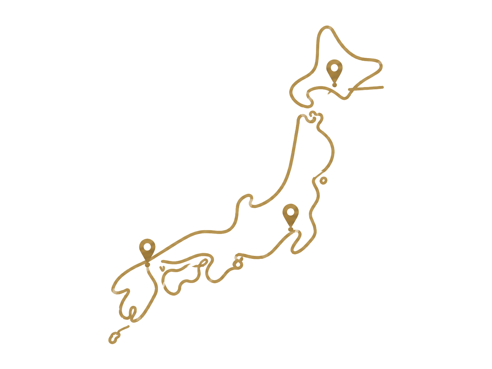

<!DOCTYPE html>
<html lang="ja">
<head>
<meta charset="UTF-8" />
<meta name="viewport" content="width=device-width, initial-scale=1.0, viewport-fit=cover" />
<title>結（ゆい）｜終活ノート＆お手続きタスク</title>
<meta name="description" content="生前に大切なことを書き留め、もしものときのお手続きを期限つきで管理できる終活ノート。入力内容は端末内にのみ保存され、外部には送信されません。" />
<meta name="theme-color" content="#2E4A3D" />
<meta name="apple-mobile-web-app-capable" content="yes" />
<meta name="apple-mobile-web-app-status-bar-style" content="default" />
<meta name="apple-mobile-web-app-title" content="結" />

<!-- ▼ OGP / Twitter（配布・シェア用）。og:url と og:image は公開後のURLに差し替えてください（画像は1200×630推奨） -->
<meta property="og:type" content="website" />
<meta property="og:title" content="結（ゆい）｜終活ノート＆お手続きタスク" />
<meta property="og:description" content="生前に書き留め、もしものときに家族が迷わない。期限つきお手続きリスト付きの終活ノート。端末内保存・サーバー送信なし。" />
<meta property="og:site_name" content="結（ゆい）" />
<meta property="og:url" content="https://jin-vibe-ai.github.io/yui/" />
<meta property="og:image" content="https://jin-vibe-ai.github.io/yui/ogp.png" />
<meta name="twitter:card" content="summary_large_image" />
<meta name="twitter:title" content="結（ゆい）｜終活ノート＆お手続きタスク" />
<meta name="twitter:description" content="生前に書き留め、もしものときに家族が迷わない。期限つきお手続きリスト付きの終活ノート。" />
<meta name="twitter:image" content="https://jin-vibe-ai.github.io/yui/ogp.png" />

<!-- 水引（みずひき）モチーフのファビコン -->
<link rel="icon" href="data:image/svg+xml,%3Csvg xmlns='http://www.w3.org/2000/svg' viewBox='0 0 36 36'%3E%3Cpath d='M18 19 C9 8 1.5 14 7 20 C11 24.5 18 22.5 18 19' stroke='%23A9843F' stroke-width='1.8' fill='none' stroke-linecap='round'/%3E%3Cpath d='M18 19 C27 8 34.5 14 29 20 C25 24.5 18 22.5 18 19' stroke='%232E4A3D' stroke-width='1.8' fill='none' stroke-linecap='round'/%3E%3Cpath d='M13.5 21.5 L11 31' stroke='%23A9843F' stroke-width='1.8' stroke-linecap='round'/%3E%3Cpath d='M22.5 21.5 L25 31' stroke='%232E4A3D' stroke-width='1.8' stroke-linecap='round'/%3E%3C/svg%3E" />

<!-- PWA：ホーム画面アプリ化 -->
<link rel="manifest" href="./manifest.json" />
<link rel="apple-touch-icon" href="./apple-touch-icon.png" />

<script src="https://cdnjs.cloudflare.com/ajax/libs/react/18.2.0/umd/react.production.min.js" crossorigin></script>
<script src="https://cdnjs.cloudflare.com/ajax/libs/react-dom/18.2.0/umd/react-dom.production.min.js" crossorigin></script>
<script src="https://cdnjs.cloudflare.com/ajax/libs/babel-standalone/7.23.2/babel.min.js" crossorigin></script>

<!-- 思い出の地図：OpenStreetMap（無料・APIキー不要） -->
<link rel="stylesheet" href="https://cdnjs.cloudflare.com/ajax/libs/leaflet/1.9.4/leaflet.min.css" crossorigin />
<script src="https://cdnjs.cloudflare.com/ajax/libs/leaflet/1.9.4/leaflet.min.js" crossorigin></script>

<style>
:root{
  --paper:#F7F5F1; --card:#FCFBF7; --line:#E5E1D7;
  --ink:#23231F; --ink-soft:#6E6C64;
  --pine:#2E4A3D; --pine-2:#3D5C4C; --pine-soft:#E7EDE8;
  --gold:#A9843F; --gold-soft:#EFE6D2;
  --overdue:#A8412E; --urgent:#B5742A; --soon:#7E6B1E; --later:#6E6C64;
  --serif:"Hiragino Mincho ProN","Yu Mincho","YuMincho","Noto Serif JP",serif;
  --sans:"Hiragino Sans","Hiragino Kaku Gothic ProN","Yu Gothic","YuGothic","Noto Sans JP","Helvetica Neue",Arial,sans-serif;
  /* レイアウト・タイポ（デザイン編集で変更可能） */
  --fs-base:17px;     /* 本文の基本サイズ */
  --maxw:840px;       /* 本文の最大横幅 */
  --radius-lg:15px;   /* カードなど大きめの角丸 */
  --radius-md:13px;   /* タスク・タブなど */
  --radius-sm:10px;   /* ボタン・入力欄 */
  --card-pad:20px;    /* カードの内側余白 */
}
*{box-sizing:border-box}
html,body{margin:0;padding:0}
body{min-height:100vh;background:var(--paper);color:var(--ink);font-family:var(--sans);font-size:var(--fs-base);line-height:1.7;-webkit-font-smoothing:antialiased;-webkit-text-size-adjust:100%}
.wrap{max-width:var(--maxw);margin:0 auto;padding:0 18px 96px}

.topbar{position:sticky;top:0;z-index:30;background:rgba(247,245,241,.86);backdrop-filter:blur(8px);-webkit-backdrop-filter:blur(8px);border-bottom:1px solid var(--line)}
.topbar-in{max-width:var(--maxw);margin:0 auto;padding:12px 18px;display:flex;align-items:center;gap:12px}
.brand{display:flex;align-items:center;gap:11px;min-width:0}
.brand-mark{flex:none;width:34px;height:34px}
.brand-txt{display:flex;flex-direction:column;min-width:0}
.brand-name{font-family:var(--serif);font-size:23px;font-weight:600;letter-spacing:.06em;color:var(--pine);line-height:1.05}
.brand-name rt{font-size:9px;color:var(--gold);font-weight:500;letter-spacing:.1em}
.brand-tag{font-size:11.5px;color:var(--ink-soft);letter-spacing:.04em;white-space:nowrap;overflow:hidden;text-overflow:ellipsis}
.topbar-actions{margin-left:auto;display:flex;align-items:center;gap:10px;flex:none}
.save-ind{font-size:12px;color:var(--ink-soft);display:flex;align-items:center;gap:6px;white-space:nowrap}
.save-dot{width:7px;height:7px;border-radius:50%;background:var(--pine);opacity:.5}
.save-ind.saving .save-dot{animation:pulse 1s infinite}
@keyframes pulse{0%,100%{opacity:.3}50%{opacity:1}}
.menu{position:relative}
.menu-btn{width:38px;height:38px;border:1px solid var(--line);background:var(--card);border-radius:var(--radius-sm);cursor:pointer;color:var(--ink);font-size:18px;line-height:1;display:flex;align-items:center;justify-content:center}
.menu-btn:hover{border-color:var(--gold)}
.print-btn{height:38px;display:flex;align-items:center;gap:6px;border:1px solid var(--pine);background:var(--pine);color:#fff;border-radius:var(--radius-sm);padding:0 14px;cursor:pointer;font-family:var(--sans);font-weight:600;font-size:13.5px;white-space:nowrap}
.print-btn:hover{background:var(--pine-2);border-color:var(--pine-2)}
.print-ic{flex:none}
@media (max-width:520px){.print-label{display:none}.print-btn{padding:0 11px}}
.backdrop{position:fixed;inset:0;z-index:35}
.menu-pop{position:absolute;right:0;top:46px;z-index:40;background:var(--card);border:1px solid var(--line);border-radius:12px;box-shadow:0 12px 30px rgba(35,35,31,.12);overflow:hidden;min-width:220px}
.menu-item{display:block;width:100%;text-align:left;padding:12px 16px;background:none;border:none;border-bottom:1px solid var(--line);cursor:pointer;font-size:14.5px;color:var(--ink);font-family:var(--sans)}
.menu-item:last-child{border-bottom:none}
.menu-item:hover{background:var(--pine-soft)}
.menu-item.danger{color:var(--overdue)}

.seg{display:flex;gap:6px;margin:18px 0 4px;background:var(--card);border:1px solid var(--line);border-radius:var(--radius-md);padding:5px}
.seg-btn{flex:1;border:none;background:none;padding:10px 6px;border-radius:9px;cursor:pointer;font-family:var(--sans);font-size:14px;font-weight:600;color:var(--ink-soft);letter-spacing:.02em;transition:background .18s,color .18s;white-space:nowrap}
.seg-btn.is-active{background:var(--pine);color:#fff}

.view{animation:vfade 1.5s ease}
@keyframes rise{from{opacity:0;transform:translateY(6px)}to{opacity:1;transform:none}}
@keyframes vfade{from{opacity:0;transform:translateY(8px)}to{opacity:1;transform:none}}
@keyframes appfade{from{opacity:0}to{opacity:1}}
.app-reveal{opacity:0;transition:opacity 1s ease}
.app-reveal.in{opacity:1}
.splash{position:fixed;inset:0;z-index:300;background:var(--pine);display:flex;align-items:center;justify-content:center;cursor:pointer;animation:splashOut 2.6s ease forwards}
.splash-inner{text-align:center;animation:splashIn 2.6s ease forwards}
.splash-mark{width:118px;height:118px;display:block;margin:0 auto 16px}
.splash-title{font-family:var(--serif);font-size:48px;font-weight:600;color:#fff;letter-spacing:.12em;line-height:1}
.splash-title rt{font-size:11px;color:var(--gold);letter-spacing:.4em;font-weight:500}
.splash-sub{margin-top:12px;font-size:12.5px;color:rgba(255,255,255,.72);letter-spacing:.3em}
@keyframes splashIn{0%{opacity:0;transform:scale(.9)}18%{opacity:1;transform:scale(1)}66%{opacity:1;transform:scale(1.05)}100%{opacity:0;transform:scale(1.5)}}
@keyframes splashOut{0%{opacity:1}76%{opacity:1}100%{opacity:0;visibility:hidden}}

.h-serif{font-family:var(--serif);font-size:21px;font-weight:600;color:var(--ink);letter-spacing:.03em;margin:26px 0 6px}
.lead{color:var(--ink-soft);font-size:14.5px;margin:0 0 18px}
.card{background:var(--card);border:1px solid var(--line);border-radius:var(--radius-lg);padding:var(--card-pad);margin:14px 0}
.card.tint{background:var(--pine-soft);border-color:#D5E0D8}

.banner{display:flex;gap:11px;padding:13px 15px;border-radius:12px;font-size:13.5px;line-height:1.6;margin:14px 0}
.banner .ic{flex:none;font-size:16px;line-height:1.4}
.banner-info{background:var(--gold-soft);color:#6b551f;border:1px solid #E6D5AE}
.banner-warn{background:#F6E7E2;color:#8a3422;border:1px solid #E8C9BF}

.prog-wrap{margin:6px 0 2px}
.prog-top{display:flex;justify-content:space-between;align-items:baseline;font-size:13px;color:var(--ink-soft);margin-bottom:7px}
.prog-num{font-family:var(--serif);font-size:18px;color:var(--pine);font-weight:600}
.prog{height:9px;background:#ECE8DE;border-radius:99px;overflow:hidden}
.prog-fill{height:100%;background:linear-gradient(90deg,var(--pine),var(--pine-2));border-radius:99px;transition:width .5s ease}

.acc-item{background:var(--card);border:1px solid var(--line);border-radius:var(--radius-md);margin:11px 0;overflow:hidden}
.acc-head{display:flex;align-items:center;gap:12px;width:100%;padding:16px 18px;background:none;border:none;cursor:pointer;text-align:left;font-family:var(--sans)}
.acc-head:hover{background:#FAF8F2}
.acc-title{font-family:var(--serif);font-size:17px;font-weight:600;color:var(--ink);letter-spacing:.02em;flex:1;min-width:0}
.acc-count{font-size:12px;color:var(--ink-soft);flex:none}
.acc-count.full{color:var(--pine)}
.chev{flex:none;width:20px;height:20px;color:var(--ink-soft);transition:transform .25s}
.chev.open{transform:rotate(90deg)}
.acc-body{padding:4px 18px 20px;border-top:1px solid var(--line)}
.acc-intro{font-size:13px;color:var(--ink-soft);margin:14px 0 4px;line-height:1.6}

.field{margin-top:16px}
.field-label{display:block;font-size:13.5px;font-weight:600;color:var(--ink);margin-bottom:6px;letter-spacing:.01em}
.inp{width:100%;font-family:var(--sans);font-size:16px;color:var(--ink);background:#fff;border:1px solid var(--line);border-radius:var(--radius-sm);padding:11px 13px;line-height:1.6;transition:border-color .15s,box-shadow .15s}
.inp:focus{outline:none;border-color:var(--pine);box-shadow:0 0 0 3px rgba(46,74,61,.12)}
textarea.inp{resize:vertical;min-height:46px}
select.inp{appearance:none;-webkit-appearance:none;background-image:url("data:image/svg+xml;utf8,<svg xmlns='http://www.w3.org/2000/svg' width='12' height='12' viewBox='0 0 12 12'><path d='M2 4l4 4 4-4' fill='none' stroke='%236E6C64' stroke-width='1.5'/></svg>");background-repeat:no-repeat;background-position:right 13px center;padding-right:34px}
.hint{font-size:12px;color:var(--gold);margin:6px 0 0;line-height:1.5}

.date-set{display:flex;flex-wrap:wrap;align-items:center;gap:12px}
.date-set label{font-size:14px;font-weight:600}
.date-set .inp{width:auto;flex:1;min-width:160px}
.filterbar{display:flex;gap:6px;margin:18px 0 4px}
.fbtn{border:1px solid var(--line);background:var(--card);padding:7px 14px;border-radius:99px;cursor:pointer;font-family:var(--sans);font-size:13px;color:var(--ink-soft);font-weight:600}
.fbtn.on{background:var(--ink);color:#fff;border-color:var(--ink)}
.phase{margin-top:24px}
.phase-title{font-family:var(--serif);font-size:16px;font-weight:600;color:var(--pine);letter-spacing:.03em;display:flex;align-items:center;gap:9px}
.phase-title::before{content:"";width:6px;height:6px;border-radius:50%;background:var(--gold);flex:none}
.phase-note{font-size:12.5px;color:var(--ink-soft);margin:5px 0 8px;line-height:1.6}
.task{display:flex;gap:13px;align-items:flex-start;background:var(--card);border:1px solid var(--line);border-radius:var(--radius-md);padding:14px 15px;margin:9px 0;transition:opacity .2s}
.task.is-done{opacity:.58}
.task.is-done .task-title{text-decoration:line-through;text-decoration-color:var(--ink-soft)}
.checkbox{flex:none;width:24px;height:24px;border:1.6px solid var(--pine);border-radius:7px;background:#fff;cursor:pointer;color:#fff;font-size:14px;line-height:1;display:flex;align-items:center;justify-content:center;margin-top:1px;transition:background .15s}
.checkbox.on{background:var(--pine)}
.task-main{flex:1;min-width:0}
.task-title{font-size:15px;font-weight:600;color:var(--ink);line-height:1.5}
.task-sub{font-size:12.5px;color:var(--ink-soft);margin-top:3px;line-height:1.55}
.task-who{display:inline-block;font-size:11px;color:var(--gold);background:var(--gold-soft);border-radius:6px;padding:1px 8px;margin-top:6px}
.task-due{font-size:12px;color:var(--ink-soft);margin-top:5px;font-variant-numeric:tabular-nums}
.pill{flex:none;align-self:flex-start;font-size:11.5px;font-weight:700;padding:4px 11px;border-radius:99px;white-space:nowrap;font-variant-numeric:tabular-nums;letter-spacing:.02em}
.pill.neutral{background:#EEEAE0;color:var(--ink-soft)}
.pill.later{background:var(--pine-soft);color:var(--pine)}
.pill.soon{background:#F2EBD2;color:var(--soon)}
.pill.urgent{background:#F4E2CF;color:var(--urgent)}
.pill.overdue{background:#F3D9D1;color:var(--overdue)}
.pill.done{background:var(--pine);color:#fff}

.dash-grid{display:flex;flex-direction:column;gap:0}
.mini{display:flex;gap:11px;align-items:flex-start;padding:11px 0;border-bottom:1px solid var(--line)}
.mini:last-child{border-bottom:none}
.mini-pill{flex:none}
.mini-t{font-size:14px;font-weight:600;line-height:1.4}
.btn{font-family:var(--sans);font-weight:600;font-size:14px;border-radius:var(--radius-sm);padding:11px 18px;cursor:pointer;border:1px solid transparent;letter-spacing:.02em}
.btn-primary{background:var(--pine);color:#fff}
.btn-primary:hover{background:var(--pine-2)}
.btn-ghost{background:none;border-color:var(--line);color:var(--ink)}
.btn-ghost:hover{border-color:var(--gold)}
.foot{margin-top:34px;padding-top:18px;border-top:1px solid var(--line);font-size:12px;color:var(--ink-soft);line-height:1.7}
.foot a{color:var(--pine)}
/* 入り口（ホーム） */
.entry{display:block;width:100%;text-align:left;font-family:var(--sans);background:var(--card);border:1px solid var(--line);border-radius:var(--radius-lg);cursor:pointer;transition:border-color .15s,box-shadow .15s}
.entry:hover{border-color:var(--gold);box-shadow:0 6px 20px rgba(35,35,31,.06)}
.entry-note{padding:24px;margin:16px 0}
.entry-note .et-title{font-family:var(--serif);font-size:23px;font-weight:600;color:var(--pine);letter-spacing:.03em}
.entry-note .et-desc{font-size:14.5px;color:var(--ink-soft);margin-top:7px;line-height:1.7}
.entry-note .et-cta{display:inline-block;margin-top:18px;background:var(--pine);color:#fff;font-weight:600;font-size:15px;padding:11px 20px;border-radius:var(--radius-sm)}
.entry-note:hover .et-cta{background:var(--pine-2)}
.entry-note .et-meta{font-size:13px;color:var(--ink-soft);letter-spacing:.02em}
.entry-map{display:flex;align-items:center;gap:18px}
.entry-map .em-text{flex:1;min-width:0}
.entry-map .em-map{flex:none;width:42%;max-width:300px;display:block}
.entry-map .em-map img{width:100%;height:auto;max-height:170px;object-fit:contain;display:block}
@media (max-width:560px){
  .entry-map{flex-direction:column;align-items:stretch}
  .entry-map .em-map{width:100%;max-width:240px;align-self:center;margin-top:6px}
}
.entry-task{display:flex;align-items:center;gap:13px;padding:13px 15px;margin:12px 0 6px;background:var(--paper)}
.entry-task .lockic{flex:none;font-size:18px;line-height:1;opacity:.75}
.entry-task .et-main{display:flex;flex-direction:column;min-width:0}
.entry-task .et-title-s{font-size:14.5px;font-weight:600;color:var(--ink)}
.entry-task .et-sub{font-size:12px;color:var(--ink-soft);margin-top:2px;line-height:1.5}
.entry-task .et-go{margin-left:auto;flex:none;font-size:13px;color:var(--pine);font-weight:600;white-space:nowrap}
.entry-task.locked{opacity:.92}
/* 追加機能（未来への手紙・宛先・追悼・管理者） */
.xt-home-h{font-family:var(--serif);font-size:15px;color:var(--gold);letter-spacing:.08em;margin:24px 2px 2px;font-weight:600}
/* トップの入口分割（本人=のこす / 遺族=手続き） */
.zone-h{display:flex;align-items:center;gap:10px;flex-wrap:wrap;margin:28px 2px 10px}
.zone-h .zone-no{flex:none;font-family:var(--serif);font-size:13px;font-weight:700;letter-spacing:.06em;color:#fff;background:var(--pine);border-radius:99px;padding:5px 14px}
.zone-h .zone-t{font-size:13.5px;color:var(--ink-soft)}
.zone-family .zone-no{background:#8A5A2E}
.family-zone{background:#F3EFE8;border:1px solid #E6DDCB;border-radius:var(--radius-lg);padding:4px 16px 18px;margin:22px 0 6px}
.family-zone .zone-h{margin-top:12px}
.fz-note{font-size:12.8px;color:var(--ink-soft);line-height:1.75;margin:4px 2px 12px}
.fz-note b{color:#8A5A2E}
.fz-entry{background:#fff}
/* 自治体セレクタ・タスクリンク */
.muni-row{display:flex;flex-wrap:wrap;gap:12px}
.muni-f{display:flex;flex-direction:column;gap:5px;flex:1;min-width:130px}
.muni-f label{font-size:12.5px;color:var(--ink-soft);font-weight:600}
.mn-link{color:var(--pine);font-weight:600;font-size:13px;text-decoration:none}
.mn-link:hover{text-decoration:underline}
.task-main .mn-link{display:inline-block;margin-top:5px;font-size:12.5px}
.mn-ok{display:inline-block;margin-left:8px;font-size:10.5px;font-weight:700;color:#2E7D32;background:#E6F1E7;border-radius:99px;padding:2px 8px;vertical-align:middle}
.switch-btn{display:inline-flex;align-items:center;gap:5px;height:38px;padding:0 12px;border:1px solid var(--line);background:#fff;border-radius:9px;cursor:pointer;font-family:var(--sans);font-size:12.5px;font-weight:600;color:var(--pine)}
.switch-btn:hover{border-color:var(--gold)}
.sw-ic{font-size:14px}
.task-city{font-size:12px;color:#8A6A2E;margin-top:5px;line-height:1.55}
.task-city .mn-ok{margin-left:0;margin-right:6px}
.task-city .mn-link{color:var(--pine);margin-left:4px}
.task-note{font-size:12.3px;color:#2E4A3D;background:var(--pine-soft);border-radius:8px;padding:6px 10px;margin-top:6px;line-height:1.55}
.task-note b{color:var(--pine)}
@media print{ .tp-note{font-size:8.3pt;color:#2E4A3D;margin-top:.6mm} }
.task-steps{margin:7px 0 2px;padding-left:18px;list-style:disc}
.task-steps li{font-size:12.7px;color:var(--ink);line-height:1.65;margin:2px 0}
.print-tasks-big{display:inline-flex;align-items:center;gap:9px;font-size:16px;font-weight:700;padding:15px 26px;margin:8px 0 14px;border-radius:12px;box-shadow:0 5px 16px rgba(46,74,61,.24)}
.print-tasks-big:hover{background:var(--pine-2)}
@media print{ .tp-steps{margin:1mm 0 0 3mm} .tp-steps div{font-size:8.5pt;color:#4a4a44;line-height:1.55} }
@media(max-width:520px){ .sw-label{display:none} }
/* スプラッシュ後の2択 */
.chooser{position:fixed;inset:0;z-index:900;background:linear-gradient(180deg,#F7F5F1,#EDEBE5);display:flex;align-items:center;justify-content:center;padding:24px;animation:chfade .5s ease}
@keyframes chfade{from{opacity:0}to{opacity:1}}
.chooser-in{max-width:760px;width:100%;text-align:center}
.ch-mark{width:52px;height:52px;margin-bottom:10px}
.ch-title{font-family:var(--serif);font-size:24px;color:var(--pine);font-weight:600;letter-spacing:.04em}
.ch-sub{font-size:13px;color:var(--ink-soft);margin-top:6px}
.ch-cards{display:flex;gap:16px;margin:22px 0 14px}
.ch-card{flex:1;background:#fff;border:1px solid var(--line);border-radius:var(--radius-lg);padding:26px 20px;cursor:pointer;text-align:center;font-family:var(--sans);transition:border-color .15s,transform .1s,box-shadow .15s}
.ch-card:hover{border-color:var(--gold);box-shadow:0 8px 24px rgba(0,0,0,.08)}
.ch-card:active{transform:translateY(1px)}
.ch-card.fam{background:#F3EFE8;border-color:#E6DDCB}
.ch-emoji{font-size:38px;line-height:1}
.ch-h{font-family:var(--serif);font-size:19px;color:var(--pine);font-weight:600;margin-top:10px}
.ch-card.fam .ch-h{color:#7A5A22}
.ch-d{font-size:13px;color:var(--ink-soft);line-height:1.7;margin-top:8px}
.ch-go{display:inline-block;margin-top:16px;font-size:14px;font-weight:600;color:var(--pine)}
.ch-card.fam .ch-go{color:#7A5A22}
.ch-skip{border:none;background:none;color:var(--ink-soft);font-family:var(--sans);font-size:13px;cursor:pointer;padding:8px;text-decoration:underline}
.ch-demo{border:1px solid var(--gold);background:var(--gold-soft);color:#7A5A22;font-family:var(--sans);font-weight:700;font-size:13.5px;border-radius:99px;padding:10px 22px;cursor:pointer}
.ch-demo:hover{background:#E6D6B4}
@media (max-width:560px){ .ch-cards{flex-direction:column} .ch-title{font-size:20px} }
.xt-entry{margin:8px 0}
.xt-entry .lockic{opacity:.9}
.xt-back{display:inline-flex;align-items:center;gap:5px;border:1px solid var(--line);background:#fff;color:var(--pine);font-family:var(--sans);font-weight:600;font-size:14px;cursor:pointer;padding:9px 16px 9px 13px;border-radius:99px;margin:0 0 14px}
.xt-back:hover{border-color:var(--gold);background:var(--pine-soft)}
.xt-back-ar{font-size:18px;line-height:1;margin-top:-1px}
.note-bottom-back{margin:28px 0 6px;padding-top:18px;border-top:1px solid var(--line);text-align:center}
.xt-recip{display:flex;gap:8px;align-items:center;margin:8px 0}
.xt-recip .inp{flex:1;min-width:0}
.xt-del{flex:none;border:1px solid var(--line);background:#fff;color:var(--ink-soft);border-radius:8px;padding:8px 12px;cursor:pointer;font-family:var(--sans);font-size:13px}
.xt-del:hover{border-color:var(--overdue);color:var(--overdue)}
.xt-scope-row{padding:10px 0;border-top:1px solid var(--line)}
.xt-scope-t{font-size:14px;font-weight:600;color:var(--ink);margin-bottom:6px}
.xt-chips{display:flex;flex-wrap:wrap;gap:6px}
.xt-chip{border:1px solid var(--line);background:#fff;color:var(--ink-soft);border-radius:99px;padding:5px 12px;font-size:12.5px;cursor:pointer;font-family:var(--sans)}
.xt-chip.on{background:var(--pine);color:#fff;border-color:var(--pine)}
.xt-print-recips{display:flex;flex-wrap:wrap;gap:8px}
.xt-letter{background:#fff;border:1px solid var(--line);border-radius:var(--radius-lg);padding:16px;margin:12px 0}
.xt-letter-h{display:flex;align-items:center;gap:8px;margin-bottom:10px;border-bottom:1px dashed var(--gold-soft);padding-bottom:9px}
.xt-stamp{font-size:18px}
.xt-letter-n{font-family:var(--serif);font-weight:600;color:var(--pine);flex:1;min-width:0}
.xt-letter .xt-del{margin-left:auto}
.xt-mem-card{background:var(--pine-soft);border:1px solid #D5E0D8;border-radius:var(--radius-lg);padding:22px 18px;text-align:center;margin:12px 0}
.xt-mem-name{font-family:var(--serif);font-size:26px;color:var(--pine);font-weight:600;letter-spacing:.06em}
.xt-mem-dates{font-size:13px;color:var(--ink-soft);margin-top:4px}
.xt-mem-ep{font-size:14.5px;color:var(--ink);margin-top:10px;line-height:1.8;white-space:pre-wrap}
.li-del{border:none;background:none;color:var(--overdue);font-family:var(--sans);font-size:12.5px;cursor:pointer;padding:4px 0;margin-top:2px}
/* ホーム：ヒーロー・なぜ今・収益カード（講師説得用） */
.hero{background:linear-gradient(180deg,var(--pine) 0%,var(--pine-2) 100%);color:#fff;border-radius:var(--radius-lg);padding:30px 24px;margin:14px 0 12px;text-align:center;box-shadow:0 8px 26px rgba(46,74,61,.18)}
.hero-title{font-family:var(--serif);font-size:29px;line-height:1.45;font-weight:600;letter-spacing:.04em;margin:0;color:#fff}
.hero-sub{font-size:14.5px;line-height:1.85;color:#EAF0EB;margin:14px auto 0;max-width:36em}
.hero-who{display:flex;flex-wrap:wrap;gap:8px 12px;justify-content:center;margin-top:16px}
.hero-who span{font-size:12.5px;background:rgba(255,255,255,.14);border:1px solid rgba(255,255,255,.24);border-radius:99px;padding:6px 14px}
.hero-chip{font-family:var(--sans);font-size:13px;font-weight:600;color:#fff;background:rgba(255,255,255,.16);border:1px solid rgba(255,255,255,.34);border-radius:99px;padding:9px 18px;cursor:pointer;transition:background .15s,transform .1s}
.hero-chip:hover{background:rgba(255,255,255,.30)}
.hero-chip:active{transform:translateY(1px)}
.whynow{background:var(--card);border:1px solid var(--line);border-radius:var(--radius-lg);padding:16px 18px;margin:12px 0}
.wn-h{font-family:var(--serif);font-size:15px;color:var(--gold);font-weight:600;letter-spacing:.06em;margin-bottom:10px}
.wn-grid{display:grid;grid-template-columns:1fr 1fr 1fr;gap:12px}
.wn-item{font-size:12.8px;line-height:1.7;color:var(--ink-soft);border-left:3px solid var(--gold-soft);padding-left:10px}
.wn-item b{color:var(--pine);font-weight:700}
.et-badge{display:inline-block;font-size:11.5px;font-weight:700;letter-spacing:.08em;color:var(--pine);background:var(--pine-soft);border-radius:99px;padding:4px 11px;margin-bottom:8px}
.et-badge.gold{color:#8A6A2E;background:var(--gold-soft)}
.xt-letter-hero{background:linear-gradient(180deg,#FCFBF7 0%,#F6F1E6 100%);border-color:#E6DCC4}
.sell-card{display:flex;align-items:center;gap:16px;flex-wrap:wrap;background:var(--gold-soft);border:1px solid #E6D6B4;border-radius:var(--radius-lg);padding:18px 20px;margin:16px 0}
.sell-l{flex:1;min-width:210px}
.sell-title{font-family:var(--serif);font-size:18px;color:#7A5A22;font-weight:600}
.sell-desc{font-size:13px;color:var(--ink-soft);line-height:1.7;margin-top:6px}
.sell-desc b{color:#7A5A22}
.sell-actions{display:flex;flex-direction:column;gap:8px;flex:none}
@media (max-width:640px){ .wn-grid{grid-template-columns:1fr} .hero-title{font-size:23px} }
@media (max-width:520px){ .sell-actions{flex-direction:row;flex-wrap:wrap} }
/* 思い出の地図 */
/* 旧・思い出の地図カードのスタイルは削除（ノートと同じentry-noteを使用） */
/* 生きてきた日数 */
.life-days{text-align:center;background:var(--pine-soft);border:1px solid #D5E0D8;border-radius:var(--radius-lg);padding:26px 18px;margin:16px 0}
.ld-label{font-size:14px;color:var(--ink-soft);letter-spacing:.08em}
.ld-num{margin:6px 0 2px;line-height:1}
.ld-n{font-family:var(--serif);font-size:56px;font-weight:700;color:var(--pine);letter-spacing:.02em;font-variant-numeric:tabular-nums}
.ld-unit{font-family:var(--serif);font-size:24px;color:var(--gold);margin-left:6px}
.ld-sub{font-size:14px;color:var(--ink-soft);letter-spacing:.08em}
.ld-ymd{font-size:16px;color:var(--gold);font-weight:600;letter-spacing:.04em;margin-top:6px}
.ld-empty{display:block;width:100%;cursor:pointer;font-family:var(--sans);border-style:dashed}
.ld-sub2{font-size:13.5px;color:var(--pine);font-weight:600;margin-top:4px}
@media (max-width:520px){ .ld-n{font-size:44px} }
/* 基本情報ロック */
.basic-edit{border:1px dashed #D6CFBF;border-radius:var(--radius-md);padding:2px 16px 16px;margin:14px 0}
.bl-note{font-size:12.5px;color:var(--ink-soft);line-height:1.6;margin:14px 0 2px}
.basic-locked{border:1px solid var(--line);border-radius:var(--radius-md);background:var(--paper);padding:8px 16px 16px;margin:14px 0}
.bl-row{display:flex;gap:12px;padding:9px 0;border-bottom:1px solid var(--line)}
.bl-row:last-of-type{border-bottom:none}
.bl-k{flex:none;width:120px;font-size:13px;font-weight:600;color:var(--ink-soft)}
.bl-v{flex:1;font-size:14.5px;color:var(--ink);white-space:pre-wrap;min-width:0;word-break:break-word}
.bl-empty{color:var(--ink-soft)}
.bl-btn{margin-top:14px}
.mm-search{display:flex;gap:8px;margin:8px 0 8px}
.mm-search .inp{flex:1}
.mm-hint{font-size:12.5px;color:var(--ink-soft);margin:0 0 8px}
.mm-map{height:360px;border:1px solid var(--line);border-radius:var(--radius-md);overflow:hidden;margin:6px 0;position:relative;z-index:0}
/* 地図カーソル：手→ピン */
.mm-map .leaflet-grab,.mm-map .leaflet-dragging .leaflet-grab{cursor:url("") 13 30, crosshair !important}
.mm-draft{display:flex;align-items:center;flex-wrap:wrap;gap:10px;background:var(--pine-soft);border:1px solid #D5E0D8;border-radius:var(--radius-md);padding:11px 14px;margin:8px 0}
.mm-draft span{flex:1;min-width:140px;font-size:13.5px;color:var(--pine)}
.mm-editor{background:var(--card);border:1px solid var(--line);border-radius:var(--radius-md);padding:16px;margin:12px 0}
.mm-photos{display:flex;flex-wrap:wrap;gap:8px;margin-top:8px}
.mm-photo{position:relative;width:84px;height:84px}
.mm-photo img{width:84px;height:84px;object-fit:cover;border-radius:8px;border:1px solid var(--line)}
.mm-photo button{position:absolute;top:-7px;right:-7px;width:22px;height:22px;border-radius:50%;border:none;background:var(--overdue);color:#fff;cursor:pointer;font-size:13px;line-height:1}
.mm-list{margin:14px 0 0}
.mm-card{display:flex;gap:12px;align-items:center;background:var(--card);border:1px solid var(--line);border-radius:var(--radius-md);padding:10px;margin:8px 0;cursor:pointer;width:100%;text-align:left;font-family:var(--sans)}
.mm-card:hover{border-color:var(--gold)}
.mm-thumb{flex:none;width:54px;height:54px;border-radius:8px;object-fit:cover;background:var(--pine-soft);border:1px solid var(--line);display:block}
.mm-card-body{display:flex;flex-direction:column;min-width:0}
.mm-card-t{font-size:15px;font-weight:600;color:var(--ink)}
.mm-card-s{font-size:12px;color:var(--ink-soft);margin-top:2px;white-space:nowrap;overflow:hidden;text-overflow:ellipsis}
.mm-empty{font-size:13.5px;color:var(--ink-soft);padding:12px 0}
.mm-status{display:flex;align-items:center;gap:10px;margin-bottom:12px;flex-wrap:wrap}
.mm-badge{font-size:11px;font-weight:700;padding:3px 10px;border-radius:99px;background:var(--pine);color:#fff;letter-spacing:.04em}
.mm-badge.prov{background:#EEEAE0;color:var(--ink-soft);border:1px dashed #B9B3A4}
.mm-badge.sm{padding:1px 7px;font-size:10px;margin-right:6px;vertical-align:1px}
/* パスワード・モーダル */
.modal-backdrop{position:fixed;inset:0;z-index:70;background:rgba(35,35,31,.45);display:flex;align-items:center;justify-content:center;padding:20px;animation:rise .18s ease}
.modal{background:var(--card);border:1px solid var(--line);border-radius:var(--radius-lg);width:100%;max-width:380px;padding:24px;box-shadow:0 20px 50px rgba(0,0,0,.28);animation:rise .2s ease}
.modal-title{font-family:var(--serif);font-size:19px;font-weight:600;color:var(--ink);margin:0 0 6px}
.modal-lead{font-size:13.5px;color:var(--ink-soft);margin:0 0 16px;line-height:1.6}
.modal-err{color:var(--overdue);font-size:13px;margin:8px 0 0}
.modal-actions{display:flex;gap:10px;justify-content:flex-end;margin-top:18px}
/* リスト型フィールド */
.list-empty{font-size:13px;color:var(--ink-soft);margin:8px 0 4px}
.list-item{border:1px solid var(--line);border-radius:var(--radius-md);padding:14px;margin:10px 0;background:#fff}
.list-grid{display:grid;grid-template-columns:1fr 1fr;gap:10px 12px}
.li-sub.full{grid-column:1 / -1}
.li-label{display:block;font-size:12px;color:var(--ink-soft);margin-bottom:4px;font-weight:600}
.li-remove{margin-top:11px;background:none;border:1px solid var(--line);color:var(--overdue);border-radius:var(--radius-sm);padding:6px 12px;font-size:12.5px;cursor:pointer;font-family:var(--sans)}
.li-remove:hover{border-color:var(--overdue)}
.li-add{margin-top:8px;background:var(--pine-soft);border:1px solid #D5E0D8;color:var(--pine);border-radius:var(--radius-sm);padding:10px 16px;font-size:14px;font-weight:600;cursor:pointer;font-family:var(--sans)}
.li-add:hover{background:#dce7df}
.toggle{display:flex;gap:6px}
.tg-btn{flex:1;border:1px solid var(--line);background:#fff;border-radius:var(--radius-sm);padding:9px 8px;font-size:12.5px;cursor:pointer;font-family:var(--sans);color:var(--ink-soft);font-weight:600}
.tg-btn.on{background:var(--pine);color:#fff;border-color:var(--pine)}
.li-photos{display:flex;flex-wrap:wrap;gap:8px;align-items:center}
.li-photo{position:relative;width:72px;height:72px}
.li-photo img{width:72px;height:72px;object-fit:cover;border-radius:8px;border:1px solid var(--line)}
.li-photo button{position:absolute;top:-7px;right:-7px;width:22px;height:22px;border-radius:50%;border:none;background:var(--overdue);color:#fff;cursor:pointer;font-size:13px;line-height:1}
.li-photo-add{display:inline-flex;align-items:center;justify-content:center;width:72px;height:72px;border:1px dashed var(--line);border-radius:8px;color:var(--pine);font-size:12.5px;font-weight:600;cursor:pointer;background:var(--paper);text-align:center}
.li-photo-add:hover{border-color:var(--gold)}

.toast{position:fixed;left:50%;bottom:26px;transform:translateX(-50%);background:var(--ink);color:#fff;padding:12px 20px;border-radius:99px;font-size:13.5px;z-index:60;box-shadow:0 10px 28px rgba(0,0,0,.2);animation:rise .25s ease}

a.link{color:var(--pine);text-decoration:underline;text-underline-offset:2px}

@media (max-width:520px){
  .brand-tag{display:none}
  .seg-btn{font-size:13px;padding:9px 4px}
  .h-serif{font-size:19px}
  .list-grid{grid-template-columns:1fr}
}
@media (prefers-reduced-motion:reduce){*{animation:none!important;transition:none!important}}

/* ===== 装丁版 印刷テンプレート ===== */
@page{ size:A4; margin:18mm 17mm; }
@page cover{ margin:0; }
.print-only{display:none}
.tasks-print{display:none}
@media print{
  .no-print{display:none!important}
  body{background:#fff}
  .print-only{display:block;color:#23231F;font-family:"Hiragino Mincho ProN","Yu Mincho","YuMincho","Noto Serif JP","Noto Serif CJK JP",serif}
  .pm-tasks .print-only{display:none}
  .pm-tasks .tasks-print{display:block;font-family:var(--sans);color:#23231F}
  .tp-head{text-align:center;border-bottom:2px solid #2E4A3D;padding-bottom:4mm;margin-bottom:6mm}
  .tp-title{font-family:var(--serif);font-size:18pt;font-weight:700;color:#2E4A3D;letter-spacing:.08em}
  .tp-sub{font-size:9pt;color:#5f5d56;margin-top:2mm}
  .tp-phase{margin:0 0 6mm}
  .tp-phase-t{font-size:12.5pt;font-weight:700;color:#2E4A3D;background:#E7EDE8;padding:2.2mm 4mm;border-left:4px solid #A9843F;break-after:avoid}
  .tp-phase-n{font-size:8.5pt;color:#5f5d56;margin:2mm 1mm 1mm;line-height:1.6}
  .tp-task{display:flex;gap:3mm;padding:2.4mm 1mm;border-bottom:1px dotted #D8D1BC;break-inside:avoid}
  .tp-check{flex:none;font-size:12pt;color:#2E4A3D;line-height:1.3}
  .tp-task-main{flex:1;min-width:0}
  .tp-task-t{font-size:10.5pt;font-weight:600;color:#23231F}
  .tp-task-d{font-size:8.5pt;color:#5f5d56;margin-top:.6mm;line-height:1.5}
  .tp-task-due{font-size:8.5pt;color:#A9843F;margin-top:.6mm;font-weight:600}
  .tp-foot{margin-top:7mm;font-size:8pt;color:#5f5d56;border-top:1px solid #C4B488;padding-top:3mm;line-height:1.6}
  .print-only,.print-only *{-webkit-print-color-adjust:exact;print-color-adjust:exact}
  .pr-rule{display:flex;align-items:center;justify-content:center;gap:10px;margin:10px 0}
  .pr-rule .ln{display:block;width:70px;height:1px;background:#A9843F}
  .pr-rule .dia{color:#A9843F;font-size:9px;letter-spacing:3px}
  .pr-cover{page:cover;height:296mm;overflow:hidden;padding:11mm;background:#FBF9F3}
  .cv-frame{height:100%;border:2px solid #2E4A3D;padding:5mm;position:relative}
  .cv-inner{height:100%;border:1px solid #B08D4C;display:flex;flex-direction:column;align-items:center;justify-content:center;text-align:center;padding:16mm 14mm}
  .cv-corner{position:absolute;width:9mm;height:9mm;border:1px solid #A9843F}
  .cv-corner.tl{top:3mm;left:3mm;border-right:none;border-bottom:none}
  .cv-corner.tr{top:3mm;right:3mm;border-left:none;border-bottom:none}
  .cv-corner.bl{bottom:3mm;left:3mm;border-right:none;border-top:none}
  .cv-corner.br{bottom:3mm;right:3mm;border-left:none;border-top:none}
  .cv-crest{width:30mm;height:30mm;margin-bottom:6mm}
  .cv-title{font-size:64pt;font-weight:700;color:#2E4A3D;letter-spacing:.12em;margin:0;line-height:1}
  .cv-title rt{font-size:11pt;color:#A9843F;letter-spacing:.5em;font-weight:500}
  .cv-sub{font-size:17pt;color:#23231F;letter-spacing:.42em;margin:8mm 0 2mm}
  .cv-tag{font-size:11pt;color:#5f5d56;letter-spacing:.34em}
  .cv-plate{margin-top:16mm;width:78%;border-top:1px solid #B08D4C;border-bottom:1px solid #B08D4C;padding:7mm 0}
  .cv-plate-k{font-size:9.5pt;color:#8A6A2E;letter-spacing:.3em;margin-bottom:4mm}
  .cv-plate-v{font-size:20pt;color:#23231F;min-height:11mm;letter-spacing:.1em}
  .cv-date{margin-top:10mm;font-size:10.5pt;color:#5f5d56;letter-spacing:.18em}
  .cv-ded{margin-top:14mm;font-size:10pt;color:#5f5d56;letter-spacing:.12em;line-height:2}
  .pr-toc{break-before:page;break-after:page;page-break-before:always;page-break-after:always}
  .pr-h{font-size:18pt;color:#2E4A3D;letter-spacing:.22em;text-align:center;margin:2mm 0 0;font-weight:600}
  .toc-list{margin:10mm 4mm 0}
  .toc-item{display:flex;align-items:baseline;font-size:11.5pt;margin:0 0 5mm;color:#23231F}
  .toc-no{color:#8A6A2E;width:26mm;flex:none;letter-spacing:.1em}
  .toc-t{flex:none}
  .toc-dot{flex:1;border-bottom:1px dotted #B7A877;margin:0 4px 3px}
  .pr-sec{break-before:page;page-break-before:always}
  .pr-sec-h{display:flex;align-items:center;gap:4mm;background:#2E4A3D;border:1px solid #A9843F;color:#fff;padding:3.4mm 5mm}
  .pr-sec-no{font-size:9.5pt;color:#E7D6AE;letter-spacing:.22em;flex:none}
  .pr-sec-t{font-size:14.5pt;font-weight:600;letter-spacing:.1em}
  .pr-sec-intro{font-size:9pt;color:#5f5d56;line-height:1.7;margin:4mm 1mm 6mm}
  .pr-field{break-inside:avoid;page-break-inside:avoid;margin:0 0 6mm}
  .pr-field-l{font-size:11pt;font-weight:700;color:#2E4A3D;margin:0 0 2.5mm;padding-left:6mm;position:relative}
  .pr-field-l::before{content:"\25C6";position:absolute;left:0;top:0;color:#A9843F;font-size:8pt}
  .pr-val{font-size:11pt;color:#23231F;white-space:pre-wrap;line-height:1.9;padding:0 1mm 1mm}
  .pr-line{height:9mm;border-bottom:1px dotted #C4B488}
  .pr-opts{display:flex;flex-wrap:wrap;gap:3mm 7mm;padding:1mm 1mm 0}
  .pr-opt{font-size:10.5pt;color:#23231F;display:flex;align-items:center;gap:2.5mm;white-space:nowrap}
  .pr-bx{display:inline-block;width:3.6mm;height:3.6mm;border:1.2px solid #2E4A3D;flex:none}
  .pr-opt.sel .pr-bx{background:#2E4A3D}
  .pr-opt.sel{color:#2E4A3D;font-weight:700}
  .pr-recs{padding:0 .5mm}
  .pr-rec{border:1px solid #DCD0AE;border-left:3px solid #A9843F;padding:3mm 4mm;margin:0 0 3mm;background:#fffdf8;break-inside:avoid;page-break-inside:avoid}
  .pr-rec-row{display:flex;align-items:flex-end;font-size:10pt;margin:1.6mm 0}
  .pr-rec-k{flex:none;width:34mm;color:#2E4A3D;font-weight:600;font-size:9.5pt}
  .pr-rec-v{flex:1;border-bottom:1px dotted #C4B488;min-height:6.2mm;white-space:pre-wrap;padding:0 1mm .5mm}
  .pr-rec-tg{display:flex;gap:6mm}
  .pr-mini{font-size:8.5pt;color:#8A6A2E;margin:0 0 2mm .5mm;letter-spacing:.06em}
  .pr-close{break-before:page;page-break-before:always;text-align:center;padding-top:30mm}
  .pr-close p{font-size:10.5pt;color:#23231F;line-height:2.1;letter-spacing:.08em}
  .sign-wrap{margin:16mm auto 0;width:80%;text-align:left}
  .sign-row{display:flex;align-items:flex-end;gap:4mm;margin:9mm 0}
  .sign-k{font-size:11pt;color:#2E4A3D;font-weight:600;flex:none;width:16mm}
  .sign-line{flex:1;border-bottom:1px solid #9a8f6c;min-height:9mm}
  .sign-seal{flex:none;width:18mm;height:18mm;border:1px dashed #b0a072;border-radius:50%;color:#b0a072;font-size:8pt;display:flex;align-items:center;justify-content:center}
  .pr-note{margin-top:20mm;font-size:8.5pt;color:#5f5d56;line-height:1.8}
  .pr-memo{break-before:page;page-break-before:always}
  .memo-h{display:flex;align-items:center;justify-content:center;gap:6mm;margin:0 0 5mm;color:#2E4A3D}
  .memo-orn{color:#A9843F;font-size:10pt}
  .memo-t{font-size:15pt;letter-spacing:.4em;font-weight:600}
  .memo-frame{border:1.5px solid #2E4A3D;position:relative;padding:5mm 7mm 5mm 15mm;background:#FFFDF8}
  .memo-margin{position:absolute;top:4mm;bottom:4mm;left:11mm;width:1px;background:#D9B7A6}
  .memo-typed{font-size:10.5pt;white-space:pre-wrap;line-height:10mm;color:#23231F}
  .memo-line{height:10mm;border-bottom:1px solid #DAD3BD}
  .rev{margin:14mm auto 0;width:80%}
  .rev-h{font-size:10pt;color:#8A6A2E;letter-spacing:.3em;text-align:center;margin-bottom:7mm}
  .rev-row{display:flex;align-items:flex-end;gap:4mm;margin:6mm 0}
  .rev-k{font-size:10.5pt;color:#2E4A3D;font-weight:600;flex:none;width:36mm}
  .rev-v{flex:1;border-bottom:1px dotted #C4B488;min-height:8mm}
  .pr-photos{display:flex;flex-wrap:wrap;gap:3mm;margin-top:2mm}
  .pr-photo{width:54mm;height:40mm;object-fit:cover;border:1px solid #DCD0AE}
  .pr-val,.pr-rec-v,.pr-tl-detail,.memo-typed,.pr-field-l,.pr-sec-t{overflow-wrap:break-word}
  .pr-sec-h,.pr-sec-intro{break-after:avoid;page-break-after:avoid}
  .print-only{max-width:100%}
  .print-only img,.pr-photo,.pr-trip-png{max-width:100%}
  .pr-sec,.pr-field,.pr-rec,.pr-opts,.pr-rec-row{max-width:100%}
  .pr-letter{break-before:page;page-break-before:always}
  .pr-letter-env{border:1px solid #DCD0AE;border-left:3px solid #A9843F;background:#fffdf8;padding:4mm 5mm;margin:0 0 6mm;overflow:hidden}
  .pr-letter-stamp{float:right;font-size:14pt;color:#A9843F}
  .pr-letter-to{font-family:"Hiragino Mincho ProN","Yu Mincho","Noto Serif JP","Noto Serif CJK JP",serif;font-size:15pt;color:#2E4A3D;font-weight:700}
  .pr-letter-when{font-size:9.5pt;color:#8A6A2E;margin-top:1.5mm}
  .pr-letter-body{font-size:11pt;color:#23231F;line-height:2.0;white-space:pre-wrap;padding:0 1mm;min-height:55mm;overflow-wrap:break-word}
  .pr-letter-blank .pr-line{height:9mm}
  .pr-letter-sign{text-align:right;font-family:"Hiragino Mincho ProN","Yu Mincho","Noto Serif JP","Noto Serif CJK JP",serif;font-size:11pt;color:#2E4A3D;margin-top:6mm}
  .pr-guardian{break-before:page;page-break-before:always}
  .pr-mem{break-before:page;page-break-before:always}
  .pr-mem-head{text-align:center;margin:4mm 0 3mm}
  .pr-mem-name{font-family:"Hiragino Mincho ProN","Yu Mincho","Noto Serif JP","Noto Serif CJK JP",serif;font-size:20pt;color:#2E4A3D;font-weight:700;letter-spacing:.08em}
  .pr-mem-dates{font-size:9.5pt;color:#5f5d56;margin-top:1.5mm}
  .pr-mem-ep{font-size:10.5pt;color:#23231F;line-height:1.9;white-space:pre-wrap;text-align:center;margin:0 4mm 5mm}
  .pr-tribute-t{font-size:10.5pt;color:#23231F;line-height:1.8;white-space:pre-wrap;overflow-wrap:break-word}
  .pr-tribute-f{font-size:9.5pt;color:#5f5d56;text-align:right;margin-top:1.5mm}
  .pr-trip-png{display:block;margin:1mm auto 6mm;width:74mm;height:auto}
  .pr-photo-box{width:72mm;height:50mm;border:1px dashed #C4B488;margin-top:3mm;display:flex;align-items:center;justify-content:center;color:#A9843F;font-size:8.5pt;letter-spacing:.25em}
  .pr-tl{margin:3mm 0 0 24mm}
  .pr-tl-row{position:relative;border-left:2px solid #A9843F;padding:0 0 6mm 7mm;break-inside:avoid;page-break-inside:avoid}
  .pr-tl-row::before{content:"";position:absolute;left:-1.6mm;top:1mm;width:3mm;height:3mm;border-radius:50%;background:#A9843F}
  .pr-tl-year{position:absolute;left:-24mm;top:0;width:21mm;text-align:right;font-weight:700;color:#2E4A3D;font-size:10.5pt}
  .pr-tl-title{font-size:11pt;color:#23231F;font-weight:600}
  .pr-tl-detail{font-size:9.5pt;color:#5f5d56;line-height:1.7;margin-top:1mm;white-space:pre-wrap}
  .pr-tl-line{height:8mm;border-bottom:1px dotted #C4B488}
}
</style>
<script>
/* 結 デザインテーマ・エンジン（端末内のみ。保存されたテーマ設定を見た目に反映します） */
(function(){
  var KEY = "yui:theme";
  var COLORMAP = {
    paper:"--paper", card:"--card", line:"--line", ink:"--ink", inkSoft:"--ink-soft",
    pine:"--pine", pine2:"--pine-2", pineSoft:"--pine-soft", gold:"--gold", goldSoft:"--gold-soft"
  };
  var NUMMAP = {
    fsBase:["--fs-base","px",12,26], maxw:["--maxw","px",560,1200],
    radiusLg:["--radius-lg","px",0,30], radiusMd:["--radius-md","px",0,26],
    radiusSm:["--radius-sm","px",0,22], cardPad:["--card-pad","px",8,36]
  };
  function safeColor(v){ return (typeof v==="string" && /^#([0-9a-fA-F]{3,8})$/.test(v.trim())) ? v.trim() : null; }
  function safeFont(v){ return (typeof v==="string" && /^[\w\s,"'\-]+$/.test(v) && v.length<300) ? v : null; }
  function num(v,min,max){ v=parseFloat(v); if(isNaN(v)) return null; return Math.max(min,Math.min(max,v)); }
  function safeImg(v){ return (typeof v==="string" && /^data:image\/(png|jpeg|jpg|gif|svg\+xml|webp);/.test(v) && v.length<4000000) ? v : null; }
  function buildCSS(t){
    var out=[];
    if(t.colors){ for(var k in COLORMAP){ var c=safeColor(t.colors[k]); if(c) out.push(COLORMAP[k]+":"+c); } }
    if(t.fonts){ var sf=safeFont(t.fonts.serif); if(sf) out.push("--serif:"+sf); var sn=safeFont(t.fonts.sans); if(sn) out.push("--sans:"+sn); }
    if(t.layout){ for(var n in NUMMAP){ var d=NUMMAP[n]; var val=num(t.layout[n],d[2],d[3]); if(val!==null) out.push(d[0]+":"+val+d[1]); } }
    return out.length ? (":root{"+out.join(";")+"}") : "";
  }
  function loadFonts(list){
    if(!Array.isArray(list)) return;
    list.forEach(function(fam){
      if(typeof fam!=="string" || !/^[\w\s\-]+$/.test(fam)) return;
      var id="yui-font-"+fam.replace(/\s+/g,"-");
      if(document.getElementById(id)) return;
      var l=document.createElement("link"); l.id=id; l.rel="stylesheet";
      l.href="https://fonts.googleapis.com/css2?family="+encodeURIComponent(fam)+":wght@400;500;600;700&display=swap";
      document.head.appendChild(l);
    });
  }
  function applyTheme(t){
    t = t || {};
    window.__YUI_THEME = t;
    var el = document.getElementById("yui-theme-overrides");
    if(!el){ el=document.createElement("style"); el.id="yui-theme-overrides"; }
    el.textContent = buildCSS(t);
    document.head.appendChild(el); /* 常に最後＝主スタイルより優先 */
    if(t.fonts && t.fonts.load) loadFonts(t.fonts.load);
    try {
      window.dispatchEvent(new CustomEvent("yui-theme",{ detail:{
        logo: safeImg(t.logo)||null,
        appName: (typeof t.appName==="string"? t.appName.slice(0,40):""),
        tagline: (typeof t.tagline==="string"? t.tagline.slice(0,80):"")
      }}));
    } catch(e){}
  }
  window.YUI_applyTheme = applyTheme;
  try { var raw=window.localStorage.getItem(KEY); if(raw){ applyTheme(JSON.parse(raw)); } } catch(e){}
  window.addEventListener("message", function(e){
    var d=e.data; if(!d || typeof d!=="object") return;
    if(d.type==="yui-theme-preview"){ applyTheme(d.theme||{}); }
    else if(d.type==="yui-theme-save"){ applyTheme(d.theme||{}); try{ window.localStorage.setItem(KEY, JSON.stringify(d.theme||{})); }catch(_){} }
    else if(d.type==="yui-theme-reset"){ applyTheme({}); try{ window.localStorage.removeItem(KEY); }catch(_){} }
    else if(d.type==="yui-theme-get" && e.source){ var cur=null; try{ cur=JSON.parse(window.localStorage.getItem(KEY)||"null"); }catch(_){} try{ e.source.postMessage({type:"yui-theme-current", theme:cur}, "*"); }catch(_){} }
    else if(d.type==="yui-theme-ping" && e.source){ try{ e.source.postMessage({type:"yui-theme-pong"}, "*"); }catch(_){} }
  });
})();
</script>
</head>
<body>
<div id="root"></div>

<script type="text/babel" data-presets="react">
const { useState, useEffect, useRef } = React;
const MUNI_DATA = {"tmpl":[{"cat":"最優先(〜2週間)","name":"おくやみ窓口（総合窓口）の有無・予約","dept":"","place":"","due":"","days":null,"from":"","amount":"","items":"","url":null,"city":true},{"cat":"最優先(〜2週間)","name":"死亡届の提出","dept":"戸籍担当 / 市民課","place":"本庁舎または届出窓口","due":"死亡を知った日から7日以内","days":7,"from":"死亡を知った日","amount":"","items":"死亡診断書（死体検案書）","url":"https://laws.e-gov.go.jp/law/322AC0000000224","city":false},{"cat":"最優先(〜2週間)","name":"火葬（埋火葬）許可申請","dept":"戸籍担当 / 市民課","place":"本庁舎または届出窓口","due":"死亡届と同時","days":null,"from":"死亡届提出時","amount":"","items":"死亡届、埋火葬許可申請書","url":"https://laws.e-gov.go.jp/law/322AC0000000224","city":false},{"cat":"最優先(〜2週間)","name":"世帯主変更届（該当時）","dept":"住民担当 / 市民課","place":"本庁舎または区役所","due":"14日以内","days":14,"from":"変更があった日","amount":"","items":"本人確認書類、届出書","url":"https://laws.e-gov.go.jp/law/342AC0000000081","city":false},{"cat":"最優先(〜2週間)","name":"国民年金の死亡届・受給停止","dept":"年金事務所","place":"","due":"14日以内","days":14,"from":"死亡日","amount":"","items":"年金証書、死亡届関係書類","url":"https://www.nenkin.go.jp/","city":false},{"cat":"最優先(〜2週間)","name":"厚生年金の死亡届・受給停止","dept":"年金事務所","place":"","due":"10日以内","days":10,"from":"死亡日","amount":"","items":"年金証書、死亡届関係書類","url":"https://www.nenkin.go.jp/","city":false},{"cat":"最優先(〜2週間)","name":"国民健康保険 資格喪失・保険証返却","dept":"国保年金担当","place":"","due":"14日以内","days":14,"from":"死亡日","amount":"","items":"保険証、限度額認定証","url":null,"city":true},{"cat":"最優先(〜2週間)","name":"後期高齢者医療 資格喪失・証返却","dept":"国保年金担当","place":"","due":"速やかに","days":null,"from":"死亡日","amount":"","items":"被保険者証、認定証","url":null,"city":true},{"cat":"最優先(〜2週間)","name":"介護保険 資格喪失・被保険者証返却","dept":"介護保険担当","place":"","due":"14日以内","days":14,"from":"死亡日","amount":"","items":"被保険者証、認定証","url":null,"city":true},{"cat":"給付・手当","name":"葬祭費（国保）の申請","dept":"国保年金担当","place":"","due":"葬祭日の翌日から2年以内","days":730,"from":"葬祭日の翌日","amount":"","items":"葬儀の領収書、会葬礼状など","url":null,"city":true},{"cat":"給付・手当","name":"葬祭費（後期高齢）の申請","dept":"国保年金担当","place":"","due":"葬祭日の翌日から2年以内","days":730,"from":"葬祭日の翌日","amount":"","items":"葬儀の領収書、会葬礼状など","url":null,"city":true},{"cat":"給付・手当","name":"埋葬料（健保）の申請","dept":"勤務先 / 健康保険組合 / 協会けんぽ","place":"","due":"死亡日の翌日から2年以内","days":730,"from":"死亡日の翌日","amount":"5万円","items":"埋葬料請求書、事業主証明など","url":"https://www.kyoukaikenpo.or.jp/","city":false},{"cat":"相続・税","name":"準確定申告","dept":"税務署","place":"","due":"相続開始を知った日の翌日から4か月以内","days":null,"from":"相続開始を知った日の翌日","amount":"","items":"被相続人の収入資料、申告書","url":"https://www.nta.go.jp/","city":false},{"cat":"相続・税","name":"相続放棄・限定承認","dept":"家庭裁判所","place":"","due":"相続開始を知った時から3か月以内","days":null,"from":"相続開始を知った時","amount":"","items":"申述書、戸籍類","url":"https://www.courts.go.jp/","city":false},{"cat":"相続・税","name":"相続税の申告・納付","dept":"税務署","place":"","due":"相続開始を知った日の翌日から10か月以内","days":null,"from":"相続開始を知った日の翌日","amount":"","items":"申告書、遺産資料","url":"https://www.nta.go.jp/","city":false},{"cat":"相続・税","name":"相続登記（不動産）","dept":"法務局","place":"","due":"取得を知った日から3年以内","days":1095,"from":"取得を知った日","amount":"","items":"戸籍、遺産分割協議書、固定資産評価証明書","url":"https://laws.e-gov.go.jp/law/416AC0000000123","city":false},{"cat":"随時","name":"印鑑登録の失効","dept":"市民課","place":"","due":"死亡で職権抹消が基本","days":null,"from":"","amount":"","items":"印鑑登録証","url":null,"city":true}],"cities":[{"pref":"北海道","city":"札幌市","url":"https://www.city.sapporo.jp/"},{"pref":"青森県","city":"青森市","url":"https://www.city.aomori.aomori.jp/"},{"pref":"岩手県","city":"盛岡市","url":"https://www.city.morioka.iwate.jp/"},{"pref":"宮城県","city":"仙台市","url":"https://www.city.sendai.jp/"},{"pref":"秋田県","city":"秋田市","url":"https://www.city.akita.lg.jp/"},{"pref":"山形県","city":"山形市","url":"https://www.city.yamagata-yamagata.lg.jp/"},{"pref":"福島県","city":"福島市","url":"https://www.city.fukushima.fukushima.jp/"},{"pref":"茨城県","city":"水戸市","url":"https://www.city.mito.lg.jp/"},{"pref":"栃木県","city":"宇都宮市","url":"https://www.city.utsunomiya.lg.jp/"},{"pref":"群馬県","city":"前橋市","url":"https://www.city.maebashi.gunma.jp/"},{"pref":"埼玉県","city":"さいたま市","url":"https://www.city.saitama.lg.jp/"},{"pref":"千葉県","city":"千葉市","url":"https://www.city.chiba.jp/"},{"pref":"東京都","city":"千代田区","url":"https://www.city.chiyoda.lg.jp/"},{"pref":"東京都","city":"中央区","url":"https://www.city.chuo.lg.jp/"},{"pref":"東京都","city":"港区","url":"https://www.city.minato.tokyo.jp/"},{"pref":"東京都","city":"新宿区","url":"https://www.city.shinjuku.lg.jp/"},{"pref":"東京都","city":"文京区","url":"https://www.city.bunkyo.lg.jp/"},{"pref":"東京都","city":"台東区","url":"https://www.city.taito.lg.jp/"},{"pref":"東京都","city":"墨田区","url":"https://www.city.sumida.lg.jp/"},{"pref":"東京都","city":"江東区","url":"https://www.city.koto.lg.jp/"},{"pref":"東京都","city":"品川区","url":"https://www.city.shinagawa.tokyo.jp/"},{"pref":"東京都","city":"目黒区","url":"https://www.city.meguro.tokyo.jp/"},{"pref":"東京都","city":"大田区","url":"https://www.city.ota.tokyo.jp/"},{"pref":"東京都","city":"世田谷区","url":"https://www.city.setagaya.lg.jp/"},{"pref":"東京都","city":"渋谷区","url":"https://www.city.shibuya.tokyo.jp/"},{"pref":"東京都","city":"中野区","url":"https://www.city.nakano.tokyo.jp/"},{"pref":"東京都","city":"杉並区","url":"https://www.city.suginami.tokyo.jp/"},{"pref":"東京都","city":"豊島区","url":"https://www.city.toshima.lg.jp/"},{"pref":"東京都","city":"北区","url":"https://www.city.kita.tokyo.jp/"},{"pref":"東京都","city":"荒川区","url":"https://www.city.arakawa.tokyo.jp/"},{"pref":"東京都","city":"板橋区","url":"https://www.city.itabashi.tokyo.jp/"},{"pref":"東京都","city":"練馬区","url":"https://www.city.nerima.tokyo.jp/"},{"pref":"東京都","city":"足立区","url":"https://www.city.adachi.tokyo.jp/"},{"pref":"東京都","city":"葛飾区","url":"https://www.city.katsushika.lg.jp/"},{"pref":"東京都","city":"江戸川区","url":"https://www.city.edogawa.tokyo.jp/"},{"pref":"神奈川県","city":"横浜市","url":"https://www.city.yokohama.lg.jp/"},{"pref":"神奈川県","city":"川崎市","url":"https://www.city.kawasaki.jp/"},{"pref":"神奈川県","city":"相模原市","url":"https://www.city.sagamihara.kanagawa.jp/"},{"pref":"新潟県","city":"新潟市","url":"https://www.city.niigata.lg.jp/"},{"pref":"富山県","city":"富山市","url":"https://www.city.toyama.toyama.jp/"},{"pref":"石川県","city":"金沢市","url":"https://www4.city.kanazawa.lg.jp/"},{"pref":"福井県","city":"福井市","url":"https://www.city.fukui.lg.jp/"},{"pref":"山梨県","city":"甲府市","url":"https://www.city.kofu.yamanashi.jp/"},{"pref":"長野県","city":"長野市","url":"https://www.city.nagano.nagano.jp/"},{"pref":"岐阜県","city":"岐阜市","url":"https://www.city.gifu.lg.jp/"},{"pref":"静岡県","city":"静岡市","url":"https://www.city.shizuoka.lg.jp/"},{"pref":"愛知県","city":"名古屋市","url":"https://www.city.nagoya.jp/"},{"pref":"三重県","city":"津市","url":"https://www.info.city.tsu.mie.jp/"},{"pref":"滋賀県","city":"大津市","url":"https://www.city.otsu.lg.jp/"},{"pref":"京都府","city":"京都市","url":"https://www.city.kyoto.lg.jp/"},{"pref":"大阪府","city":"大阪市","url":"https://www.city.osaka.lg.jp/"},{"pref":"大阪府","city":"堺市","url":"https://www.city.sakai.lg.jp/"},{"pref":"兵庫県","city":"神戸市","url":"https://www.city.kobe.lg.jp/"},{"pref":"奈良県","city":"奈良市","url":"https://www.city.nara.lg.jp/"},{"pref":"和歌山県","city":"和歌山市","url":"https://www.city.wakayama.wakayama.jp/"},{"pref":"鳥取県","city":"鳥取市","url":"https://www.city.tottori.lg.jp/"},{"pref":"島根県","city":"松江市","url":"https://www.city.matsue.lg.jp/"},{"pref":"岡山県","city":"岡山市","url":"https://www.city.okayama.jp/"},{"pref":"広島県","city":"広島市","url":"https://www.city.hiroshima.lg.jp/"},{"pref":"山口県","city":"山口市","url":"https://www.city.yamaguchi.lg.jp/"},{"pref":"徳島県","city":"徳島市","url":"https://www.city.tokushima.lg.jp/"},{"pref":"香川県","city":"高松市","url":"https://www.city.takamatsu.kagawa.jp/"},{"pref":"愛媛県","city":"松山市","url":"https://www.city.matsuyama.ehime.jp/"},{"pref":"高知県","city":"高知市","url":"https://www.city.kochi.kochi.jp/"},{"pref":"福岡県","city":"福岡市","url":"https://www.city.fukuoka.lg.jp/"},{"pref":"福岡県","city":"北九州市","url":"https://www.city.kitakyushu.lg.jp/"},{"pref":"福岡県","city":"久留米市","url":"https://www.city.kurume.fukuoka.jp/"},{"pref":"佐賀県","city":"佐賀市","url":"https://www.city.saga.lg.jp/"},{"pref":"長崎県","city":"長崎市","url":"https://www.city.nagasaki.lg.jp/"},{"pref":"熊本県","city":"熊本市","url":"https://www.city.kumamoto.jp/"},{"pref":"大分県","city":"大分市","url":"https://www.city.oita.oita.jp/"},{"pref":"宮崎県","city":"宮崎市","url":"https://www.city.miyazaki.miyazaki.jp/"},{"pref":"鹿児島県","city":"鹿児島市","url":"https://www.city.kagoshima.lg.jp/"},{"pref":"沖縄県","city":"那覇市","url":"https://www.city.naha.okinawa.jp/"},{"pref":"北海道","city":"旭川市","url":"https://www.city.asahikawa.hokkaido.jp/"},{"pref":"北海道","city":"函館市","url":"https://www.city.hakodate.hokkaido.jp/"},{"pref":"北海道","city":"釧路市","url":"https://www.city.kushiro.lg.jp/"},{"pref":"青森県","city":"八戸市","url":"https://www.city.hachinohe.aomori.jp/"},{"pref":"福島県","city":"郡山市","url":"https://www.city.koriyama.lg.jp/"},{"pref":"福島県","city":"いわき市","url":"https://www.city.iwaki.lg.jp/"},{"pref":"群馬県","city":"高崎市","url":"https://www.city.takasaki.gunma.jp/"},{"pref":"埼玉県","city":"川越市","url":"https://www.city.kawagoe.saitama.jp/"},{"pref":"千葉県","city":"船橋市","url":"https://www.city.funabashi.lg.jp/"},{"pref":"神奈川県","city":"横須賀市","url":"https://www.city.yokosuka.kanagawa.jp/"},{"pref":"新潟県","city":"長岡市","url":"https://www.city.nagaoka.niigata.jp/"},{"pref":"愛知県","city":"豊橋市","url":"https://www.city.toyohashi.lg.jp/"},{"pref":"愛知県","city":"岡崎市","url":"https://www.city.okazaki.lg.jp/"},{"pref":"愛知県","city":"豊田市","url":"https://www.city.toyota.aichi.jp/"},{"pref":"兵庫県","city":"姫路市","url":"https://www.city.himeji.lg.jp/"},{"pref":"岡山県","city":"倉敷市","url":"https://www.city.kurashiki.okayama.jp/"},{"pref":"埼玉県","city":"川口市","url":"https://www.city.kawaguchi.lg.jp/"},{"pref":"茨城県","city":"つくば市","url":"https://www.city.tsukuba.lg.jp/konnatokiha/okuyami/index.html"},{"pref":"岐阜県","city":"大垣市","url":"https://www.city.ogaki.lg.jp/category/2-1-9-1-0-0-0-0-0-0.html"},{"pref":"大阪府","city":"豊中市","url":"https://www.city.toyonaka.osaka.jp/"},{"pref":"大阪府","city":"東大阪市","url":"https://www.city.higashiosaka.lg.jp/category/23-6-0-0-0-0-0-0-0-0.html"},{"pref":"大阪府","city":"枚方市","url":"https://www.city.hirakata.osaka.jp/category/1-1-8-0-0-0-0-0-0-0.html"},{"pref":"兵庫県","city":"西宮市","url":""},{"pref":"兵庫県","city":"尼崎市","url":"https://www.city.amagasaki.hyogo.jp/"},{"pref":"広島県","city":"福山市","url":"https://www.city.fukuyama.hiroshima.jp/"},{"pref":"山口県","city":"下関市","url":"https://www.city.shimonoseki.lg.jp/"}],"ov":{"つくば市":[{"name":"おくやみ窓口の有無・予約","dept":"市民窓口課","url":"https://www.city.tsukuba.lg.jp/konnatokiha/okuyami/index.html"},{"name":"国民健康保険 資格喪失・保険証返却","dept":"市民窓口課","url":"https://www.city.tsukuba.lg.jp/kurashi/shomei/koseki/1005187.html"},{"name":"後期高齢者医療 資格喪失・証返却","dept":"市民窓口課","url":"https://www.city.tsukuba.lg.jp/kurashi/shomei/koseki/1005187.html"},{"name":"介護保険 資格喪失・被保険者証返却","dept":"市民窓口課","url":"https://www.city.tsukuba.lg.jp/kurashi/shomei/koseki/1005187.html"}]}};
const MUNI_CATS = ["最優先(〜2週間)","給付・手当","相続・税","随時"];
function muniPrefs(){ const seen=[]; MUNI_DATA.cities.forEach(function(c){ if(seen.indexOf(c.pref)<0) seen.push(c.pref); }); return seen; }
function muniCitiesByPref(pref){ return MUNI_DATA.cities.filter(function(c){ return c.pref===pref; }).map(function(c){ return c.city; }); }
function muniCityInfo(pref, city){ return MUNI_DATA.cities.find(function(c){ return c.pref===pref && c.city===city; }) || null; }
const MUNI_SOSAI = {"千代田区":"7万円","中央区":"7万円","港区":"7万円","新宿区":"7万円","文京区":"7万円","台東区":"7万円","墨田区":"7万円","江東区":"7万円","品川区":"7万円","目黒区":"7万円","大田区":"7万円","世田谷区":"7万円","渋谷区":"7万円","中野区":"7万円","杉並区":"7万円","豊島区":"7万円","北区":"7万円","荒川区":"7万円","板橋区":"7万円","練馬区":"7万円","足立区":"7万円","葛飾区":"7万円","江戸川区":"7万円","札幌市":"3万円","横浜市":"5万円","大阪市":"5万円","名古屋市":"5万円","京都市":"5万円","神戸市":"5万円","福岡市":"3万円","仙台市":"5万円","さいたま市":"5万円","千葉市":"5万円","広島市":"3万円","新潟市":"5万円","静岡市":"5万円","岡山市":"5万円","熊本市":"2万円","北九州市":"3万円","堺市":"5万円","青森市":"5万円","盛岡市":"3万円","秋田市":"5万円","山形市":"5万円","福島市":"5万円","宇都宮市":"5万円","金沢市":"5万円","岐阜市":"5万円","鹿児島市":"2万円","那覇市":"2万5千円","水戸市":"5万円","前橋市":"5万円","川崎市":"5万円","相模原市":"5万円","富山市":"3万円","福井市":"5万円","甲府市":"6万円","長野市":"5万円","大津市":"5万円","奈良市":"3万円","和歌山市":"3万円","鳥取市":"3万円","松江市":"3万円","山口市":"5万円","高松市":"5万円","松山市":"2万円","高知市":"3万円","久留米市":"3万円","佐賀市":"3万円","長崎市":"2万円","大分市":"2万円","宮崎市":"2万円","旭川市":"3万円","函館市":"3万円","八戸市":"5万円","郡山市":"5万円","高崎市":"5万円","釧路市":"3万円","川越市":"5万円","船橋市":"5万円","横須賀市":"5万円","長岡市":"5万円","豊橋市":"5万円","岡崎市":"5万円","豊田市":"5万円","姫路市":"5万円","倉敷市":"5万円","川口市":"5万円","大垣市":"5万円","豊中市":"5万円","東大阪市":"5万円","枚方市":"5万円","西宮市":"5万円","尼崎市":"5万円","福山市":"3万円","下関市":"5万円","つくば市":"5万円"};
const MUNI_KOUKI = {"北海道":"3万円","青森県":"5万円","宮城県":"5万円","秋田県":"5万円","山形県":"5万円","福島県":"5万円","茨城県":"5万円","栃木県":"5万円","群馬県":"5万円","埼玉県":"5万円","千葉県":"5万円","東京都":"5万円","神奈川県":"5万円","新潟県":"5万円","富山県":"3万円","石川県":"5万円","福井県":"5万円","山梨県":"5万円","長野県":"5万円","岐阜県":"5万円","静岡県":"5万円","愛知県":"5万円","三重県":"5万円","滋賀県":"5万円","京都府":"5万円","大阪府":"5万円","兵庫県":"5万円","奈良県":"3万円","和歌山県":"3万円","鳥取県":"2万円","岡山県":"5万円","広島県":"3万円","山口県":"5万円","徳島県":"2万円","香川県":"3万円","愛媛県":"2万円","高知県":"3万円","福岡県":"3万円","佐賀県":"3万円","長崎県":"2万円","熊本県":"2万円","大分県":"2万円","宮崎県":"2万円","鹿児島県":"2万円","沖縄県":"2万円"};
const DEMO = {"note":{"name":"結 太郎","kana":"ゆい たろう","birth":"1950-05-15","address":"〒160-0023 東京都新宿区西新宿1-2-3 結ハイツ505","honseki":"東京都新宿区西新宿1-2-3","phone":"自宅 03-1234-5678 ／ 携帯 090-1234-5678","mainEmail":"yui.taro@example.com","blood":"A型","religionBasic":"浄土真宗","hoken":"後期高齢者医療","mynumber":"リビングの手提げ金庫","menkyo":"有・返納予定（財布に）","passport":"無","inkan":"寝室のタンス上段の桐箱","phonelock":"手帳の最終ページに記載","__locked":{"basic":true},"peopleList":[{"name":"結 花子","relation":"妻","photo":["dph_portrait"],"message":"長い間、本当にありがとう。君と過ごした毎日が私の宝物でした。これからは体を大事に、笑って過ごしてください。"},{"name":"結 一郎","relation":"長男","photo":["dph_family"],"message":"よく頑張ってきたね。お母さんのこと、よろしく頼みます。無理はしないで。"},{"name":"田中 美咲","relation":"長女","photo":["dph_sakura"],"message":"優しい子に育ってくれてありがとう。あなたの笑顔にいつも救われました。"},{"name":"結 そうた","relation":"孫","photo":["dph_sea2"],"message":"じいじは君に会えて本当に嬉しかった。元気に大きくなってね。"}],"toFamily":"家族みんなで、時々は集まって笑ってください。それが一番の供養です。","toFriends":"学生時代からの友人たちへ。楽しい時間をありがとう。先に行って待っています。","gratitude":"支えてくれたすべての人に感謝しています。","bucket":"家族でもう一度、北海道を旅する。孫の成人式を見る。","device":"リビングのノートPC（Windows）。ロックは誕生日4桁。","loginStore":"金庫内の茶封筒に一覧をまとめています。","credentials":"（金庫内の茶封筒の一覧を参照）","twoFactor":"認証アプリは携帯に。復旧コードは金庫の一覧に。","data":"写真は外付けHDD（書斎の棚）とGoogleフォト。","deviceDisposal":"データを消去してから処分してください。","notifyList":[{"order":"1番目","name":"結 一郎","relation":"長男","phone":"090-2222-3333","contact":"LINE","how":"まず電話で。つながらなければLINE。"},{"order":"2番目","name":"田中 美咲","relation":"長女","phone":"090-4444-5555","contact":"","how":"一郎から連絡が回るはず。"}],"friendsList":[{"name":"山田 健一","relation":"高校の同級生","inPhone":"連絡先あり","message":"長い付き合いに感謝と伝えてほしい。"},{"name":"佐藤 三郎","relation":"元同僚","inPhone":"連絡先あり","message":""}],"temple":"西新宿 願正寺","templeSect":"浄土真宗本願寺派","templePref":"東京都","templePlace":"新宿区・西新宿駅そば","doctorList":[{"name":"新宿中央病院","dept":"循環器内科","phone":"03-3333-4444","place":"主治医：鈴木先生。診察券は玄関の引き出し。"}],"work":"（株）結商事（定年退職）","community":"町内会・囲碁クラブ","familyList":[{"name":"結 花子","relation":"妻","address":"同居","inPhone":"連絡先あり"},{"name":"結 一郎","relation":"長男","address":"横浜市","inPhone":"連絡先あり"},{"name":"田中 美咲","relation":"長女","address":"さいたま市","inPhone":"連絡先あり"}],"possibleHeirs":"妻・長男・長女の3名","difficultHeirs":"特になし","illness":"高血圧・軽い不整脈","meds":"降圧剤（お薬手帳は玄関の引き出し）","allergy":"特になし","palliative":"できるだけ受けたい","lifeSupport":"望まない","tellMe":"告知してほしい","organ":"提供したい","careWish":"できれば自宅で","decisionPerson":"妻・長男","dignityDoc":"事前指示書あり・金庫内","will":"公正証書遺言あり","willStore":"金庫内および司法書士に写し","willExecutor":"司法書士 高橋先生","heirs":"妻・長男・長女","divideWish":"自宅は妻へ。預貯金は3人で等分。","advisor":"税理士 田村事務所（03-5555-6666）／司法書士 高橋","realEstate":"自宅マンション（新宿区西新宿1-2-3 結ハイツ505）","deed":"金庫内","mortgage":"完済","accountList":[{"bank":"みずほ銀行","branch":"新宿支店","kind":"普通","number":"1234567","use":"生活費・年金","pin":"（手帳に記載）","cardPlace":"財布","bankbookPlace":"書斎の引き出し"},{"bank":"ゆうちょ銀行","branch":"—","kind":"普通","number":"","use":"貯蓄","pin":"","cardPlace":"金庫","bankbookPlace":"金庫"}],"cash":"貸金庫なし。手元現金は仏壇の引き出しに約5万円。","securities":"SBI証券（ネット）","nisa":"つみたてNISAあり","pensionDoc":"基礎年金番号通知書は金庫内","life":"日本生命 終身保険（受取人：妻）","policyStore":"保険証券は金庫内","loans":"なし","guarantee":"なし","cards":"三井住友カード（財布）","vehicles":"トヨタ・カローラ（返納・売却予定）","jewelry":"妻の指輪・私の腕時計（形見に）","email":"Gmail（yui.taro@example.com）","sns":"Facebook（追悼アカウント化を希望）","subs":"Netflix・新聞電子版（解約を）","funeralType":"家族葬","religion":"浄土真宗","chiefMourner":"長男 一郎","photo":"還暦のときの写真（アルバム赤い表紙）","preContract":"互助会あり（会員証は金庫）","funeralFund":"葬儀費用として定期預金50万円","existingGrave":"あり／東京都／願正寺 墓地","successor":"長男 一郎","memorialWish":"先祖代々の墓へ","keepsakes":"腕時計→一郎／指輪→美咲。それぞれの節目に贈ったもの。","h_birth":"北海道・釧路の小さな港町で生まれ、いつも潮の香りと汽笛の音の中で育ちました。","h_child":"魚釣りと野球に夢中な少年でした。夏は日が暮れるまで海にいました。","h_work":"営業一筋40年。断られても足を運び続けた末に生まれた縁が、私の財産です。","h_meet":"取引先の受付にいた花子との出会いが、人生を変えました。","h_proud":"3人の子を育て上げ、みんなが優しい大人になってくれたこと。","h_value":"「実るほど頭を垂れる稲穂かな」。謙虚さを忘れずに生きてきました。","h_future":"孫たちの成長を、できる限り長く見守ること。","timelineList":[{"year":"1953","title":"北海道・釧路で誕生","detail":"漁師の家に生まれる"},{"year":"1972","title":"上京","detail":"高校卒業後、東京へ"},{"year":"1973","title":"結商事に入社","detail":"営業として全国を回る"},{"year":"1976","title":"花子と結婚・ハワイへ新婚旅行","detail":""},{"year":"1978","title":"長男 一郎 誕生","detail":""},{"year":"1981","title":"長女 美咲 誕生","detail":""},{"year":"1995","title":"家族で京都・紅葉狩り","detail":"みんな元気だった"},{"year":"2003","title":"美咲の結婚式（軽井沢）","detail":"泣いてしまった"},{"year":"2010","title":"定年退職","detail":"感謝状をいただいた"},{"year":"2015","title":"初孫 そうた 誕生","detail":"大喜びした"},{"year":"2026","title":"金婚式","detail":"夫婦で沖縄へ"}],"memoText":"家族へ。私の人生は幸せでした。みんなに会えて本当に良かった。ありがとう。","__recipients":[{"id":"rc_wife","name":"結 花子","relation":"妻"},{"id":"rc_son","name":"結 一郎","relation":"長男"},{"id":"rc_dau","name":"田中 美咲","relation":"長女"}],"__secTo":{"message":["rc_wife","rc_son","rc_dau"],"inherit":["rc_son"],"bank":["rc_wife"]},"__letters":[{"id":"lt1","to":"rc_wife","toName":"","when":"私の一周忌に","body":"花子へ。ひとりにしてごめんね。でも心配はいりません。いつもそばで見守っています。たまには友だちと旅行にでも行って、笑って過ごしてください。長い間、本当にありがとう。","photos":["dph_sea"]},{"id":"lt2","to":"rc_son","toName":"","when":"一郎が還暦を迎える日に","body":"一郎へ。この手紙を読むころ、君も還暦か。よく頑張ったな。家族を大事にな。無理はするなよ。父より。","photos":["dph_mtn"]},{"id":"lt3","to":"rc_dau","toName":"","when":"美咲の子が成人する日に","body":"美咲へ。優しいお母さんになったね。あなたの笑顔は、いつも家族を照らしていました。これからも、あなたらしく。","photos":["dph_sakura"]},{"id":"lt4","to":"","toName":"孫の そうた","when":"成人式の日に","body":"そうたへ。成人おめでとう。じいちゃんは君の成長がいちばんの楽しみでした。自分の道を、胸を張って歩んでいきなさい。応援しているよ。","photos":["dph_sea2"]}],"__memorial":{"epitaph":"みんなに会えて、幸せな人生でした。ありがとう。","photos":["dph_mtn","dph_sea","dph_autumn","dph_beach"],"tributes":[{"id":"tb1","from":"結 花子","relation":"妻","text":"51年間、本当にありがとう。あなたと歩けて幸せでした。"},{"id":"tb2","from":"結 一郎","relation":"長男","text":"背中で多くを教えてくれた父でした。安らかに。"},{"id":"tb3","from":"山田 健一","relation":"友人","text":"よき友でした。またあの海で釣りをしような。"},{"id":"tb4","from":"孫 そうた","relation":"孫","text":"じいじ、たくさん遊んでくれてありがとう。"}]},"__guardian":{"persons":[{"id":"gd1","name":"結 一郎","relation":"長男","phone":"090-2222-3333","role":"まず妻に見せてください"},{"id":"gd2","name":"高橋 司法書士","relation":"専門家","phone":"03-7777-8888","role":"相続手続きの相談先"}],"where":"この端末の『結』アプリ。バックアップは寝室の金庫にUSBで保管。","howto":"お手続きの一覧は、金庫内の茶封筒にまとめてあります。","timing":"私に何かあったら、まず妻と一郎に見せてください。"},"h_family_origin":"父は漁師、母は明るい人。貧しくても笑いの絶えない家でした。","h_school":"高校の修学旅行で初めて東京を見て、都会に出ようと決めました。","h_partner":"結婚して51年。喧嘩もしたけれど、いつも隣で笑ってくれました。","h_hard":"40代で大きな病気をしたこと。家族の支えで乗り越えられました。","h_fun":"孫のそうたが初めて『じいじ』と呼んでくれた日。","h_treasure":"家族旅行で撮った、みんなの笑顔の写真たち。","h_now":"縁側で妻とお茶を飲みながら、庭の花を眺める時間。","palliativeNote":"痛みや苦しみは、できるだけ和らげてほしいです。","careWishNote":"住み慣れた自宅で、家族に囲まれて過ごせたら幸せです。","careContact":"新宿区の地域包括支援センターに相談中。","funeralScale":"家族と、親しい友人数名で。派手にしなくて大丈夫です。","music":"美空ひばり『川の流れのように』を流してください。","petInfo":"（ペットはいません）"},"tasks":{"deathDate":"2026-07-06","done":{"t_diag":true,"t_notice":true,"t_funeral":true,"t_todoke":true},"pref":"東京都","city":"新宿区"},"places":[{"id":"pl1","lat":42.98,"lng":144.38,"title":"生まれ故郷・北海道釧路の港","date":"1953-08-15","memo":"海を見て育った町。父と釣りをした防波堤。潮の香りが今も忘れられない。","photos":["dph_sea","dph_sea2"]},{"id":"pl2","lat":21.31,"lng":-157.86,"title":"新婚旅行・ハワイ（ホノルル）","date":"1976-06-20","memo":"花子との新婚旅行。ワイキキの朝の海と、二人で食べたパンケーキ。","photos":["dph_beach","dph_beach2"]},{"id":"pl3","lat":35.69,"lng":139.7,"title":"新宿の新居","date":"1978-04-01","memo":"初めて二人で暮らしたアパート。近くの喫茶店に毎朝通った。","photos":["dph_city","dph_portrait"]},{"id":"pl4","lat":35.36,"lng":138.73,"title":"家族で富士登山","date":"1985-08-10","memo":"子どもたちと五合目まで。ご来光に手を合わせた。","photos":["dph_mtn","dph_family"]},{"id":"pl5","lat":35.01,"lng":135.77,"title":"京都・紅葉狩り","date":"1995-11-23","memo":"永観堂の紅葉。家族みんな元気だった。","photos":["dph_autumn","dph_sakura"]},{"id":"pl6","lat":36.35,"lng":138.6,"title":"娘の結婚式・軽井沢","date":"2003-05-05","memo":"美咲の花嫁姿。こらえきれず泣いてしまった。","photos":["dph_sakura","dph_family"]},{"id":"pl7","lat":35.31,"lng":139.55,"title":"初孫と鎌倉の海","date":"2015-07-20","memo":"そうたと初めての海水浴。小さな手が可愛かった。","photos":["dph_sea2","dph_sea"]},{"id":"pl8","lat":26.21,"lng":127.68,"title":"金婚のお祝い・沖縄","date":"2019-10-01","memo":"青い海をいつまでも二人で見ていた。幸せな時間。","photos":["dph_beach2","dph_beach"]}],"photos":{"dph_sea":"data:image/svg+xml,%3Csvg%20xmlns%3D%22http%3A%2F%2Fwww.w3.org%2F2000%2Fsvg%22%20width%3D%22400%22%20height%3D%22300%22%3E%3Cdefs%3E%3ClinearGradient%20id%3D%22a%22%20x1%3D%220%22%20y1%3D%220%22%20x2%3D%220%22%20y2%3D%221%22%3E%3Cstop%20offset%3D%220%22%20stop-color%3D%22%23F2A65A%22%2F%3E%3Cstop%20offset%3D%221%22%20stop-color%3D%22%23E86A5C%22%2F%3E%3C%2FlinearGradient%3E%3C%2Fdefs%3E%3Crect%20width%3D%22400%22%20height%3D%22300%22%20fill%3D%22url%28%23a%29%22%2F%3E%3Ccircle%20cx%3D%22300%22%20cy%3D%2295%22%20r%3D%2242%22%20fill%3D%22%23FCE5B0%22%20opacity%3D%22.95%22%2F%3E%3Crect%20y%3D%22200%22%20width%3D%22400%22%20height%3D%22100%22%20fill%3D%22%232E5E7E%22%2F%3E%3Cpath%20d%3D%22M0%20235%20Q120%20205%20230%20228%20T400%20220%20V300%20H0Z%22%20fill%3D%22rgba%28255%2C255%2C255%2C.16%29%22%2F%3E%3Cpath%20d%3D%22M0%20262%20Q140%20232%20260%20258%20T400%20252%20V300%20H0Z%22%20fill%3D%22rgba%28255%2C255%2C255%2C.14%29%22%2F%3E%3C%2Fsvg%3E","dph_mtn":"data:image/svg+xml,%3Csvg%20xmlns%3D%22http%3A%2F%2Fwww.w3.org%2F2000%2Fsvg%22%20width%3D%22400%22%20height%3D%22300%22%3E%3Cdefs%3E%3ClinearGradient%20id%3D%22e%22%20x1%3D%220%22%20y1%3D%220%22%20x2%3D%220%22%20y2%3D%221%22%3E%3Cstop%20offset%3D%220%22%20stop-color%3D%22%23A8CDE8%22%2F%3E%3Cstop%20offset%3D%221%22%20stop-color%3D%22%23E4F0F7%22%2F%3E%3C%2FlinearGradient%3E%3C%2Fdefs%3E%3Crect%20width%3D%22400%22%20height%3D%22300%22%20fill%3D%22url%28%23e%29%22%2F%3E%3Cpolygon%20points%3D%22120%2C90%20220%2C260%2020%2C260%22%20fill%3D%22%235E8A5A%22%2F%3E%3Cpolygon%20points%3D%22270%2C120%20380%2C260%20170%2C260%22%20fill%3D%22%234F7A66%22%2F%3E%3Cpolygon%20points%3D%22120%2C90%20150%2C140%2090%2C140%22%20fill%3D%22%23EAF3F7%22%2F%3E%3C%2Fsvg%3E","dph_portrait":"data:image/svg+xml,%3Csvg%20xmlns%3D%22http%3A%2F%2Fwww.w3.org%2F2000%2Fsvg%22%20width%3D%22300%22%20height%3D%22360%22%3E%3Crect%20width%3D%22300%22%20height%3D%22360%22%20fill%3D%22%23E7EDE8%22%2F%3E%3Ccircle%20cx%3D%22150%22%20cy%3D%22135%22%20r%3D%2262%22%20fill%3D%22%23A7C3AE%22%2F%3E%3Cpath%20d%3D%22M55%20340%20Q150%20215%20245%20340%20Z%22%20fill%3D%22%23A7C3AE%22%2F%3E%3Crect%20x%3D%224%22%20y%3D%224%22%20width%3D%22292%22%20height%3D%22352%22%20fill%3D%22none%22%20stroke%3D%22%23DCD0AE%22%20stroke-width%3D%226%22%2F%3E%3C%2Fsvg%3E","dph_sea2":"data:image/svg+xml,%3Csvg%20xmlns%3D%22http%3A%2F%2Fwww.w3.org%2F2000%2Fsvg%22%20width%3D%22400%22%20height%3D%22300%22%3E%3Cdefs%3E%3ClinearGradient%20id%3D%22b%22%20x1%3D%220%22%20y1%3D%220%22%20x2%3D%220%22%20y2%3D%221%22%3E%3Cstop%20offset%3D%220%22%20stop-color%3D%22%237EB6D9%22%2F%3E%3Cstop%20offset%3D%221%22%20stop-color%3D%22%233E86AE%22%2F%3E%3C%2FlinearGradient%3E%3C%2Fdefs%3E%3Crect%20width%3D%22400%22%20height%3D%22300%22%20fill%3D%22url%28%23b%29%22%2F%3E%3Crect%20y%3D%22185%22%20width%3D%22400%22%20height%3D%22115%22%20fill%3D%22%232C7CA0%22%2F%3E%3Cpath%20d%3D%22M0%20235%20Q120%20205%20230%20228%20T400%20220%20V300%20H0Z%22%20fill%3D%22rgba%28255%2C255%2C255%2C.16%29%22%2F%3E%3Cpath%20d%3D%22M0%20262%20Q140%20232%20260%20258%20T400%20252%20V300%20H0Z%22%20fill%3D%22rgba%28255%2C255%2C255%2C.14%29%22%2F%3E%3Ccircle%20cx%3D%2290%22%20cy%3D%2270%22%20r%3D%2230%22%20fill%3D%22%23FFF%22%20opacity%3D%22.8%22%2F%3E%3C%2Fsvg%3E","dph_beach":"data:image/svg+xml,%3Csvg%20xmlns%3D%22http%3A%2F%2Fwww.w3.org%2F2000%2Fsvg%22%20width%3D%22400%22%20height%3D%22300%22%3E%3Cdefs%3E%3ClinearGradient%20id%3D%22c%22%20x1%3D%220%22%20y1%3D%220%22%20x2%3D%220%22%20y2%3D%221%22%3E%3Cstop%20offset%3D%220%22%20stop-color%3D%22%2379D2E6%22%2F%3E%3Cstop%20offset%3D%221%22%20stop-color%3D%22%23BFF2EE%22%2F%3E%3C%2FlinearGradient%3E%3C%2Fdefs%3E%3Crect%20width%3D%22400%22%20height%3D%22300%22%20fill%3D%22url%28%23c%29%22%2F%3E%3Crect%20y%3D%22170%22%20width%3D%22400%22%20height%3D%2270%22%20fill%3D%22%2326B3C4%22%2F%3E%3Crect%20y%3D%22240%22%20width%3D%22400%22%20height%3D%2260%22%20fill%3D%22%23F2E2B0%22%2F%3E%3Ccircle%20cx%3D%22320%22%20cy%3D%2270%22%20r%3D%2234%22%20fill%3D%22%23FCEDAE%22%2F%3E%3C%2Fsvg%3E","dph_beach2":"data:image/svg+xml,%3Csvg%20xmlns%3D%22http%3A%2F%2Fwww.w3.org%2F2000%2Fsvg%22%20width%3D%22400%22%20height%3D%22300%22%3E%3Cdefs%3E%3ClinearGradient%20id%3D%22d%22%20x1%3D%220%22%20y1%3D%220%22%20x2%3D%220%22%20y2%3D%221%22%3E%3Cstop%20offset%3D%220%22%20stop-color%3D%22%236FC9E0%22%2F%3E%3Cstop%20offset%3D%221%22%20stop-color%3D%22%232FA6B8%22%2F%3E%3C%2FlinearGradient%3E%3C%2Fdefs%3E%3Crect%20width%3D%22400%22%20height%3D%22300%22%20fill%3D%22url%28%23d%29%22%2F%3E%3Crect%20y%3D%22200%22%20width%3D%22400%22%20height%3D%22100%22%20fill%3D%22%23EFE0AE%22%2F%3E%3Cpath%20d%3D%22M60%20210%20q-10%20-40%206%20-70%20q14%2026%204%2070Z%22%20fill%3D%22%233B7A4A%22%2F%3E%3Cpath%20d%3D%22M60%20150%20q30%20-8%2044%206%20M60%20150%20q-30%20-8%20-44%206%22%20stroke%3D%22%233B7A4A%22%20stroke-width%3D%226%22%20fill%3D%22none%22%2F%3E%3C%2Fsvg%3E","dph_autumn":"data:image/svg+xml,%3Csvg%20xmlns%3D%22http%3A%2F%2Fwww.w3.org%2F2000%2Fsvg%22%20width%3D%22400%22%20height%3D%22300%22%3E%3Cdefs%3E%3ClinearGradient%20id%3D%22f%22%20x1%3D%220%22%20y1%3D%220%22%20x2%3D%220%22%20y2%3D%221%22%3E%3Cstop%20offset%3D%220%22%20stop-color%3D%22%23E8A14E%22%2F%3E%3Cstop%20offset%3D%221%22%20stop-color%3D%22%23C7622F%22%2F%3E%3C%2FlinearGradient%3E%3C%2Fdefs%3E%3Crect%20width%3D%22400%22%20height%3D%22300%22%20fill%3D%22url%28%23f%29%22%2F%3E%3Ccircle%20cx%3D%22120%22%20cy%3D%22120%22%20r%3D%2260%22%20fill%3D%22%23D9452B%22%20opacity%3D%22.9%22%2F%3E%3Ccircle%20cx%3D%22250%22%20cy%3D%22100%22%20r%3D%2252%22%20fill%3D%22%23E87A2C%22%20opacity%3D%22.9%22%2F%3E%3Ccircle%20cx%3D%22320%22%20cy%3D%22150%22%20r%3D%2244%22%20fill%3D%22%23C7371F%22%20opacity%3D%22.9%22%2F%3E%3Crect%20y%3D%22250%22%20width%3D%22400%22%20height%3D%2250%22%20fill%3D%22%238A5A2E%22%2F%3E%3C%2Fsvg%3E","dph_sakura":"data:image/svg+xml,%3Csvg%20xmlns%3D%22http%3A%2F%2Fwww.w3.org%2F2000%2Fsvg%22%20width%3D%22400%22%20height%3D%22300%22%3E%3Cdefs%3E%3ClinearGradient%20id%3D%22h%22%20x1%3D%220%22%20y1%3D%220%22%20x2%3D%220%22%20y2%3D%221%22%3E%3Cstop%20offset%3D%220%22%20stop-color%3D%22%23FBEFF3%22%2F%3E%3Cstop%20offset%3D%221%22%20stop-color%3D%22%23F6D9E4%22%2F%3E%3C%2FlinearGradient%3E%3C%2Fdefs%3E%3Crect%20width%3D%22400%22%20height%3D%22300%22%20fill%3D%22url%28%23h%29%22%2F%3E%3Cpath%20d%3D%22M60%20300%20L90%20140%22%20stroke%3D%22%237A5A3A%22%20stroke-width%3D%2210%22%2F%3E%3Ccircle%20cx%3D%22110%22%20cy%3D%22110%22%20r%3D%2220%22%20fill%3D%22%23F5B8CE%22%20opacity%3D%22.9%22%2F%3E%3Ccircle%20cx%3D%22160%22%20cy%3D%2290%22%20r%3D%2220%22%20fill%3D%22%23F5B8CE%22%20opacity%3D%22.9%22%2F%3E%3Ccircle%20cx%3D%22210%22%20cy%3D%22120%22%20r%3D%2220%22%20fill%3D%22%23F5B8CE%22%20opacity%3D%22.9%22%2F%3E%3Ccircle%20cx%3D%22150%22%20cy%3D%22150%22%20r%3D%2220%22%20fill%3D%22%23F5B8CE%22%20opacity%3D%22.9%22%2F%3E%3Ccircle%20cx%3D%22250%22%20cy%3D%22100%22%20r%3D%2220%22%20fill%3D%22%23F5B8CE%22%20opacity%3D%22.9%22%2F%3E%3Ccircle%20cx%3D%22300%22%20cy%3D%22140%22%20r%3D%2220%22%20fill%3D%22%23F5B8CE%22%20opacity%3D%22.9%22%2F%3E%3Ccircle%20cx%3D%2290%22%20cy%3D%2290%22%20r%3D%2220%22%20fill%3D%22%23F5B8CE%22%20opacity%3D%22.9%22%2F%3E%3C%2Fsvg%3E","dph_city":"data:image/svg+xml,%3Csvg%20xmlns%3D%22http%3A%2F%2Fwww.w3.org%2F2000%2Fsvg%22%20width%3D%22400%22%20height%3D%22300%22%3E%3Cdefs%3E%3ClinearGradient%20id%3D%22i%22%20x1%3D%220%22%20y1%3D%220%22%20x2%3D%220%22%20y2%3D%221%22%3E%3Cstop%20offset%3D%220%22%20stop-color%3D%22%232A3550%22%2F%3E%3Cstop%20offset%3D%221%22%20stop-color%3D%22%234A5B7A%22%2F%3E%3C%2FlinearGradient%3E%3C%2Fdefs%3E%3Crect%20width%3D%22400%22%20height%3D%22300%22%20fill%3D%22url%28%23i%29%22%2F%3E%3Crect%20x%3D%2220%22%20y%3D%22150%22%20width%3D%2246%22%20height%3D%22150%22%20fill%3D%22%231E2740%22%2F%3E%3Crect%20x%3D%2280%22%20y%3D%2290%22%20width%3D%2246%22%20height%3D%22210%22%20fill%3D%22%231E2740%22%2F%3E%3Crect%20x%3D%22140%22%20y%3D%22180%22%20width%3D%2246%22%20height%3D%22120%22%20fill%3D%22%231E2740%22%2F%3E%3Crect%20x%3D%22200%22%20y%3D%2260%22%20width%3D%2246%22%20height%3D%22240%22%20fill%3D%22%231E2740%22%2F%3E%3Crect%20x%3D%22266%22%20y%3D%22130%22%20width%3D%2246%22%20height%3D%22170%22%20fill%3D%22%231E2740%22%2F%3E%3Crect%20x%3D%22330%22%20y%3D%22100%22%20width%3D%2246%22%20height%3D%22200%22%20fill%3D%22%231E2740%22%2F%3E%3Crect%20x%3D%2228%22%20y%3D%22110%22%20width%3D%228%22%20height%3D%228%22%20fill%3D%22%23F5D98A%22%2F%3E%3Crect%20x%3D%2228%22%20y%3D%22136%22%20width%3D%228%22%20height%3D%228%22%20fill%3D%22%23F5D98A%22%2F%3E%3Crect%20x%3D%2228%22%20y%3D%22162%22%20width%3D%228%22%20height%3D%228%22%20fill%3D%22%23F5D98A%22%2F%3E%3Crect%20x%3D%2228%22%20y%3D%22188%22%20width%3D%228%22%20height%3D%228%22%20fill%3D%22%23F5D98A%22%2F%3E%3Crect%20x%3D%2228%22%20y%3D%22214%22%20width%3D%228%22%20height%3D%228%22%20fill%3D%22%23F5D98A%22%2F%3E%3Crect%20x%3D%2228%22%20y%3D%22240%22%20width%3D%228%22%20height%3D%228%22%20fill%3D%22%23F5D98A%22%2F%3E%3Crect%20x%3D%2228%22%20y%3D%22266%22%20width%3D%228%22%20height%3D%228%22%20fill%3D%22%23F5D98A%22%2F%3E%3Crect%20x%3D%2250%22%20y%3D%22110%22%20width%3D%228%22%20height%3D%228%22%20fill%3D%22%23F5D98A%22%2F%3E%3Crect%20x%3D%2250%22%20y%3D%22136%22%20width%3D%228%22%20height%3D%228%22%20fill%3D%22%23F5D98A%22%2F%3E%3Crect%20x%3D%2250%22%20y%3D%22162%22%20width%3D%228%22%20height%3D%228%22%20fill%3D%22%23F5D98A%22%2F%3E%3Crect%20x%3D%2250%22%20y%3D%22188%22%20width%3D%228%22%20height%3D%228%22%20fill%3D%22%23F5D98A%22%2F%3E%3Crect%20x%3D%2250%22%20y%3D%22214%22%20width%3D%228%22%20height%3D%228%22%20fill%3D%22%23F5D98A%22%2F%3E%3Crect%20x%3D%2250%22%20y%3D%22240%22%20width%3D%228%22%20height%3D%228%22%20fill%3D%22%23F5D98A%22%2F%3E%3Crect%20x%3D%2250%22%20y%3D%22266%22%20width%3D%228%22%20height%3D%228%22%20fill%3D%22%23F5D98A%22%2F%3E%3Crect%20x%3D%2272%22%20y%3D%22110%22%20width%3D%228%22%20height%3D%228%22%20fill%3D%22%23F5D98A%22%2F%3E%3Crect%20x%3D%2272%22%20y%3D%22136%22%20width%3D%228%22%20height%3D%228%22%20fill%3D%22%23F5D98A%22%2F%3E%3Crect%20x%3D%2272%22%20y%3D%22162%22%20width%3D%228%22%20height%3D%228%22%20fill%3D%22%23F5D98A%22%2F%3E%3Crect%20x%3D%2272%22%20y%3D%22188%22%20width%3D%228%22%20height%3D%228%22%20fill%3D%22%23F5D98A%22%2F%3E%3Crect%20x%3D%2272%22%20y%3D%22214%22%20width%3D%228%22%20height%3D%228%22%20fill%3D%22%23F5D98A%22%2F%3E%3Crect%20x%3D%2272%22%20y%3D%22240%22%20width%3D%228%22%20height%3D%228%22%20fill%3D%22%23F5D98A%22%2F%3E%3Crect%20x%3D%2272%22%20y%3D%22266%22%20width%3D%228%22%20height%3D%228%22%20fill%3D%22%23F5D98A%22%2F%3E%3Crect%20x%3D%2294%22%20y%3D%22110%22%20width%3D%228%22%20height%3D%228%22%20fill%3D%22%23F5D98A%22%2F%3E%3Crect%20x%3D%2294%22%20y%3D%22136%22%20width%3D%228%22%20height%3D%228%22%20fill%3D%22%23F5D98A%22%2F%3E%3Crect%20x%3D%2294%22%20y%3D%22162%22%20width%3D%228%22%20height%3D%228%22%20fill%3D%22%23F5D98A%22%2F%3E%3Crect%20x%3D%2294%22%20y%3D%22188%22%20width%3D%228%22%20height%3D%228%22%20fill%3D%22%23F5D98A%22%2F%3E%3Crect%20x%3D%2294%22%20y%3D%22214%22%20width%3D%228%22%20height%3D%228%22%20fill%3D%22%23F5D98A%22%2F%3E%3Crect%20x%3D%2294%22%20y%3D%22240%22%20width%3D%228%22%20height%3D%228%22%20fill%3D%22%23F5D98A%22%2F%3E%3Crect%20x%3D%2294%22%20y%3D%22266%22%20width%3D%228%22%20height%3D%228%22%20fill%3D%22%23F5D98A%22%2F%3E%3Crect%20x%3D%22116%22%20y%3D%22110%22%20width%3D%228%22%20height%3D%228%22%20fill%3D%22%23F5D98A%22%2F%3E%3Crect%20x%3D%22116%22%20y%3D%22136%22%20width%3D%228%22%20height%3D%228%22%20fill%3D%22%23F5D98A%22%2F%3E%3Crect%20x%3D%22116%22%20y%3D%22162%22%20width%3D%228%22%20height%3D%228%22%20fill%3D%22%23F5D98A%22%2F%3E%3Crect%20x%3D%22116%22%20y%3D%22188%22%20width%3D%228%22%20height%3D%228%22%20fill%3D%22%23F5D98A%22%2F%3E%3Crect%20x%3D%22116%22%20y%3D%22214%22%20width%3D%228%22%20height%3D%228%22%20fill%3D%22%23F5D98A%22%2F%3E%3Crect%20x%3D%22116%22%20y%3D%22240%22%20width%3D%228%22%20height%3D%228%22%20fill%3D%22%23F5D98A%22%2F%3E%3Crect%20x%3D%22116%22%20y%3D%22266%22%20width%3D%228%22%20height%3D%228%22%20fill%3D%22%23F5D98A%22%2F%3E%3Crect%20x%3D%22138%22%20y%3D%22110%22%20width%3D%228%22%20height%3D%228%22%20fill%3D%22%23F5D98A%22%2F%3E%3Crect%20x%3D%22138%22%20y%3D%22136%22%20width%3D%228%22%20height%3D%228%22%20fill%3D%22%23F5D98A%22%2F%3E%3Crect%20x%3D%22138%22%20y%3D%22162%22%20width%3D%228%22%20height%3D%228%22%20fill%3D%22%23F5D98A%22%2F%3E%3Crect%20x%3D%22138%22%20y%3D%22188%22%20width%3D%228%22%20height%3D%228%22%20fill%3D%22%23F5D98A%22%2F%3E%3Crect%20x%3D%22138%22%20y%3D%22214%22%20width%3D%228%22%20height%3D%228%22%20fill%3D%22%23F5D98A%22%2F%3E%3Crect%20x%3D%22138%22%20y%3D%22240%22%20width%3D%228%22%20height%3D%228%22%20fill%3D%22%23F5D98A%22%2F%3E%3Crect%20x%3D%22138%22%20y%3D%22266%22%20width%3D%228%22%20height%3D%228%22%20fill%3D%22%23F5D98A%22%2F%3E%3Crect%20x%3D%22160%22%20y%3D%22110%22%20width%3D%228%22%20height%3D%228%22%20fill%3D%22%23F5D98A%22%2F%3E%3Crect%20x%3D%22160%22%20y%3D%22136%22%20width%3D%228%22%20height%3D%228%22%20fill%3D%22%23F5D98A%22%2F%3E%3Crect%20x%3D%22160%22%20y%3D%22162%22%20width%3D%228%22%20height%3D%228%22%20fill%3D%22%23F5D98A%22%2F%3E%3Crect%20x%3D%22160%22%20y%3D%22188%22%20width%3D%228%22%20height%3D%228%22%20fill%3D%22%23F5D98A%22%2F%3E%3Crect%20x%3D%22160%22%20y%3D%22214%22%20width%3D%228%22%20height%3D%228%22%20fill%3D%22%23F5D98A%22%2F%3E%3Crect%20x%3D%22160%22%20y%3D%22240%22%20width%3D%228%22%20height%3D%228%22%20fill%3D%22%23F5D98A%22%2F%3E%3Crect%20x%3D%22160%22%20y%3D%22266%22%20width%3D%228%22%20height%3D%228%22%20fill%3D%22%23F5D98A%22%2F%3E%3Crect%20x%3D%22182%22%20y%3D%22110%22%20width%3D%228%22%20height%3D%228%22%20fill%3D%22%23F5D98A%22%2F%3E%3Crect%20x%3D%22182%22%20y%3D%22136%22%20width%3D%228%22%20height%3D%228%22%20fill%3D%22%23F5D98A%22%2F%3E%3Crect%20x%3D%22182%22%20y%3D%22162%22%20width%3D%228%22%20height%3D%228%22%20fill%3D%22%23F5D98A%22%2F%3E%3Crect%20x%3D%22182%22%20y%3D%22188%22%20width%3D%228%22%20height%3D%228%22%20fill%3D%22%23F5D98A%22%2F%3E%3Crect%20x%3D%22182%22%20y%3D%22214%22%20width%3D%228%22%20height%3D%228%22%20fill%3D%22%23F5D98A%22%2F%3E%3Crect%20x%3D%22182%22%20y%3D%22240%22%20width%3D%228%22%20height%3D%228%22%20fill%3D%22%23F5D98A%22%2F%3E%3Crect%20x%3D%22182%22%20y%3D%22266%22%20width%3D%228%22%20height%3D%228%22%20fill%3D%22%23F5D98A%22%2F%3E%3Crect%20x%3D%22204%22%20y%3D%22110%22%20width%3D%228%22%20height%3D%228%22%20fill%3D%22%23F5D98A%22%2F%3E%3Crect%20x%3D%22204%22%20y%3D%22136%22%20width%3D%228%22%20height%3D%228%22%20fill%3D%22%23F5D98A%22%2F%3E%3Crect%20x%3D%22204%22%20y%3D%22162%22%20width%3D%228%22%20height%3D%228%22%20fill%3D%22%23F5D98A%22%2F%3E%3Crect%20x%3D%22204%22%20y%3D%22188%22%20width%3D%228%22%20height%3D%228%22%20fill%3D%22%23F5D98A%22%2F%3E%3Crect%20x%3D%22204%22%20y%3D%22214%22%20width%3D%228%22%20height%3D%228%22%20fill%3D%22%23F5D98A%22%2F%3E%3Crect%20x%3D%22204%22%20y%3D%22240%22%20width%3D%228%22%20height%3D%228%22%20fill%3D%22%23F5D98A%22%2F%3E%3Crect%20x%3D%22204%22%20y%3D%22266%22%20width%3D%228%22%20height%3D%228%22%20fill%3D%22%23F5D98A%22%2F%3E%3Crect%20x%3D%22226%22%20y%3D%22110%22%20width%3D%228%22%20height%3D%228%22%20fill%3D%22%23F5D98A%22%2F%3E%3Crect%20x%3D%22226%22%20y%3D%22136%22%20width%3D%228%22%20height%3D%228%22%20fill%3D%22%23F5D98A%22%2F%3E%3Crect%20x%3D%22226%22%20y%3D%22162%22%20width%3D%228%22%20height%3D%228%22%20fill%3D%22%23F5D98A%22%2F%3E%3Crect%20x%3D%22226%22%20y%3D%22188%22%20width%3D%228%22%20height%3D%228%22%20fill%3D%22%23F5D98A%22%2F%3E%3Crect%20x%3D%22226%22%20y%3D%22214%22%20width%3D%228%22%20height%3D%228%22%20fill%3D%22%23F5D98A%22%2F%3E%3Crect%20x%3D%22226%22%20y%3D%22240%22%20width%3D%228%22%20height%3D%228%22%20fill%3D%22%23F5D98A%22%2F%3E%3Crect%20x%3D%22226%22%20y%3D%22266%22%20width%3D%228%22%20height%3D%228%22%20fill%3D%22%23F5D98A%22%2F%3E%3Crect%20x%3D%22248%22%20y%3D%22110%22%20width%3D%228%22%20height%3D%228%22%20fill%3D%22%23F5D98A%22%2F%3E%3Crect%20x%3D%22248%22%20y%3D%22136%22%20width%3D%228%22%20height%3D%228%22%20fill%3D%22%23F5D98A%22%2F%3E%3Crect%20x%3D%22248%22%20y%3D%22162%22%20width%3D%228%22%20height%3D%228%22%20fill%3D%22%23F5D98A%22%2F%3E%3Crect%20x%3D%22248%22%20y%3D%22188%22%20width%3D%228%22%20height%3D%228%22%20fill%3D%22%23F5D98A%22%2F%3E%3Crect%20x%3D%22248%22%20y%3D%22214%22%20width%3D%228%22%20height%3D%228%22%20fill%3D%22%23F5D98A%22%2F%3E%3Crect%20x%3D%22248%22%20y%3D%22240%22%20width%3D%228%22%20height%3D%228%22%20fill%3D%22%23F5D98A%22%2F%3E%3Crect%20x%3D%22248%22%20y%3D%22266%22%20width%3D%228%22%20height%3D%228%22%20fill%3D%22%23F5D98A%22%2F%3E%3Crect%20x%3D%22270%22%20y%3D%22110%22%20width%3D%228%22%20height%3D%228%22%20fill%3D%22%23F5D98A%22%2F%3E%3Crect%20x%3D%22270%22%20y%3D%22136%22%20width%3D%228%22%20height%3D%228%22%20fill%3D%22%23F5D98A%22%2F%3E%3Crect%20x%3D%22270%22%20y%3D%22162%22%20width%3D%228%22%20height%3D%228%22%20fill%3D%22%23F5D98A%22%2F%3E%3Crect%20x%3D%22270%22%20y%3D%22188%22%20width%3D%228%22%20height%3D%228%22%20fill%3D%22%23F5D98A%22%2F%3E%3Crect%20x%3D%22270%22%20y%3D%22214%22%20width%3D%228%22%20height%3D%228%22%20fill%3D%22%23F5D98A%22%2F%3E%3Crect%20x%3D%22270%22%20y%3D%22240%22%20width%3D%228%22%20height%3D%228%22%20fill%3D%22%23F5D98A%22%2F%3E%3Crect%20x%3D%22270%22%20y%3D%22266%22%20width%3D%228%22%20height%3D%228%22%20fill%3D%22%23F5D98A%22%2F%3E%3Crect%20x%3D%22292%22%20y%3D%22110%22%20width%3D%228%22%20height%3D%228%22%20fill%3D%22%23F5D98A%22%2F%3E%3Crect%20x%3D%22292%22%20y%3D%22136%22%20width%3D%228%22%20height%3D%228%22%20fill%3D%22%23F5D98A%22%2F%3E%3Crect%20x%3D%22292%22%20y%3D%22162%22%20width%3D%228%22%20height%3D%228%22%20fill%3D%22%23F5D98A%22%2F%3E%3Crect%20x%3D%22292%22%20y%3D%22188%22%20width%3D%228%22%20height%3D%228%22%20fill%3D%22%23F5D98A%22%2F%3E%3Crect%20x%3D%22292%22%20y%3D%22214%22%20width%3D%228%22%20height%3D%228%22%20fill%3D%22%23F5D98A%22%2F%3E%3Crect%20x%3D%22292%22%20y%3D%22240%22%20width%3D%228%22%20height%3D%228%22%20fill%3D%22%23F5D98A%22%2F%3E%3Crect%20x%3D%22292%22%20y%3D%22266%22%20width%3D%228%22%20height%3D%228%22%20fill%3D%22%23F5D98A%22%2F%3E%3Crect%20x%3D%22314%22%20y%3D%22110%22%20width%3D%228%22%20height%3D%228%22%20fill%3D%22%23F5D98A%22%2F%3E%3Crect%20x%3D%22314%22%20y%3D%22136%22%20width%3D%228%22%20height%3D%228%22%20fill%3D%22%23F5D98A%22%2F%3E%3Crect%20x%3D%22314%22%20y%3D%22162%22%20width%3D%228%22%20height%3D%228%22%20fill%3D%22%23F5D98A%22%2F%3E%3Crect%20x%3D%22314%22%20y%3D%22188%22%20width%3D%228%22%20height%3D%228%22%20fill%3D%22%23F5D98A%22%2F%3E%3Crect%20x%3D%22314%22%20y%3D%22214%22%20width%3D%228%22%20height%3D%228%22%20fill%3D%22%23F5D98A%22%2F%3E%3Crect%20x%3D%22314%22%20y%3D%22240%22%20width%3D%228%22%20height%3D%228%22%20fill%3D%22%23F5D98A%22%2F%3E%3Crect%20x%3D%22314%22%20y%3D%22266%22%20width%3D%228%22%20height%3D%228%22%20fill%3D%22%23F5D98A%22%2F%3E%3Crect%20x%3D%22336%22%20y%3D%22110%22%20width%3D%228%22%20height%3D%228%22%20fill%3D%22%23F5D98A%22%2F%3E%3Crect%20x%3D%22336%22%20y%3D%22136%22%20width%3D%228%22%20height%3D%228%22%20fill%3D%22%23F5D98A%22%2F%3E%3Crect%20x%3D%22336%22%20y%3D%22162%22%20width%3D%228%22%20height%3D%228%22%20fill%3D%22%23F5D98A%22%2F%3E%3Crect%20x%3D%22336%22%20y%3D%22188%22%20width%3D%228%22%20height%3D%228%22%20fill%3D%22%23F5D98A%22%2F%3E%3Crect%20x%3D%22336%22%20y%3D%22214%22%20width%3D%228%22%20height%3D%228%22%20fill%3D%22%23F5D98A%22%2F%3E%3Crect%20x%3D%22336%22%20y%3D%22240%22%20width%3D%228%22%20height%3D%228%22%20fill%3D%22%23F5D98A%22%2F%3E%3Crect%20x%3D%22336%22%20y%3D%22266%22%20width%3D%228%22%20height%3D%228%22%20fill%3D%22%23F5D98A%22%2F%3E%3Crect%20x%3D%22358%22%20y%3D%22110%22%20width%3D%228%22%20height%3D%228%22%20fill%3D%22%23F5D98A%22%2F%3E%3Crect%20x%3D%22358%22%20y%3D%22136%22%20width%3D%228%22%20height%3D%228%22%20fill%3D%22%23F5D98A%22%2F%3E%3Crect%20x%3D%22358%22%20y%3D%22162%22%20width%3D%228%22%20height%3D%228%22%20fill%3D%22%23F5D98A%22%2F%3E%3Crect%20x%3D%22358%22%20y%3D%22188%22%20width%3D%228%22%20height%3D%228%22%20fill%3D%22%23F5D98A%22%2F%3E%3Crect%20x%3D%22358%22%20y%3D%22214%22%20width%3D%228%22%20height%3D%228%22%20fill%3D%22%23F5D98A%22%2F%3E%3Crect%20x%3D%22358%22%20y%3D%22240%22%20width%3D%228%22%20height%3D%228%22%20fill%3D%22%23F5D98A%22%2F%3E%3Crect%20x%3D%22358%22%20y%3D%22266%22%20width%3D%228%22%20height%3D%228%22%20fill%3D%22%23F5D98A%22%2F%3E%3C%2Fsvg%3E","dph_family":"data:image/svg+xml,%3Csvg%20xmlns%3D%22http%3A%2F%2Fwww.w3.org%2F2000%2Fsvg%22%20width%3D%22360%22%20height%3D%22300%22%3E%3Crect%20width%3D%22360%22%20height%3D%22300%22%20fill%3D%22%23EFE6D2%22%2F%3E%3Ccircle%20cx%3D%22110%22%20cy%3D%22120%22%20r%3D%2246%22%20fill%3D%22%23C9A66B%22%2F%3E%3Ccircle%20cx%3D%22200%22%20cy%3D%22110%22%20r%3D%2252%22%20fill%3D%22%23A7C3AE%22%2F%3E%3Ccircle%20cx%3D%22285%22%20cy%3D%22130%22%20r%3D%2240%22%20fill%3D%22%23B58AA0%22%2F%3E%3Cpath%20d%3D%22M40%20300%20Q180%20190%20330%20300%20Z%22%20fill%3D%22%238FA98E%22%2F%3E%3Crect%20x%3D%224%22%20y%3D%224%22%20width%3D%22352%22%20height%3D%22292%22%20fill%3D%22none%22%20stroke%3D%22%23C4B488%22%20stroke-width%3D%226%22%2F%3E%3C%2Fsvg%3E"}};
function muniTasksFor(pref, city){
  const info = muniCityInfo(pref, city);
  const curl = info ? info.url : "";
  const ov = (city && MUNI_DATA.ov[city]) || [];
  return MUNI_DATA.tmpl.map(function(t,i){
    let dept=t.dept, url=t.url, verified=false, amount=t.amount;
    if(t.city){ url = curl; const o=ov.find(function(x){ return x.name===t.name; }); if(o){ dept=o.dept||dept; url=o.url||url; verified=true; } }
    if(t.name.indexOf("葬祭費（国保）")===0 && city && MUNI_SOSAI[city]){ amount=MUNI_SOSAI[city]; verified=true; }
    return { id:"m"+i, cat:t.cat, name:t.name, dept:dept, place:t.place, due:t.due, days:t.days, from:t.from, amount:amount, items:t.items, url:url, cityLevel:t.city, verified:verified };
  });
}
function muniDueDate(days, deathDate){
  if(days==null || !deathDate) return null;
  const d=new Date(deathDate+"T00:00:00"); if(isNaN(d.getTime())) return null;
  d.setDate(d.getDate()+days); return d;
}
/* 全国共通タスク（TASK_PHASES）に、選択自治体の情報を重ねる */
function cityTaskExtra(t, pref, city){
  if(!city) return null;
  const info = muniCityInfo(pref, city); const url = info ? info.url : "";
  const ovList = MUNI_DATA.ov[city] || [];
  if(t.id==="t_sousai"){ const k=MUNI_SOSAI[city], q=MUNI_KOUKI[pref]; const ps=[]; if(k) ps.push("国保 "+k); if(q) ps.push("後期高齢 "+q); return { text: ps.length ? ("この自治体の葬祭費： "+ps.join("／")) : "葬祭費の金額は自治体で異なります（窓口でご確認を）", url:url, verified: ps.length>0 }; }
  if(t.id==="t_kenpo"){ const ovk=ovList.find(function(x){ return x.name.indexOf("国民健康保険")===0; }); return ovk ? { text:"窓口："+ovk.dept, url:ovk.url, verified:true } : { text:"この自治体の窓口・返却物を確認", url:url, verified:false }; }
  if(t.id==="t_todoke"){ const ovo=ovList.find(function(x){ return x.name.indexOf("おくやみ")===0; }); return { text:"「おくやみ窓口」があるとまとめて手続きできます"+(ovo&&ovo.dept?("（"+ovo.dept+"）"):""), url:url, verified:false }; }
  return null;
}
/* 本人が書いた「のこすノート」の内容を、やること各タスクに連携表示 */
function noteTaskExtra(t, note){
  if(!note) return null;
  const has=function(v){ return v && (""+v).trim()!==""; };
  const jl=function(arr,fn){ return Array.isArray(arr) ? arr.map(fn).filter(Boolean).join(" ／ ") : ""; };
  if(t.id==="t_notice"){ const s=jl(note.notifyList,function(x){ return x.name?(x.name+(x.phone?"（"+x.phone+"）":"")):""; }); return s?("連絡先 "+s):null; }
  if(t.id==="t_funeral"){ const p=[note.funeralType, note.preContract, note.chiefMourner&&("喪主 "+note.chiefMourner), note.photo&&("遺影 "+note.photo)].filter(has).join(" ／ "); return p||null; }
  if(t.id==="t_bank"){ const s=jl(note.accountList,function(x){ return [x.bank,x.branch].filter(Boolean).join(" "); }); return s?("口座 "+s+(has(note.inkan)?"／印鑑 "+note.inkan:"")):null; }
  if(t.id==="t_meigi"){ const s=jl(note.accountList,function(x){ return x.bank; }); return s?("金融機関 "+s):null; }
  if(t.id==="t_will"){ return has(note.will)?("遺言 "+note.will+(has(note.willStore)?"（"+note.willStore+"）":"")):null; }
  if(t.id==="t_kenpo"){ return has(note.hoken)?("加入 "+note.hoken):null; }
  if(t.id==="t_touki"){ return has(note.realEstate)?("不動産 "+note.realEstate):null; }
  if(t.id==="t_seimei"){ return has(note.life)?("保険 "+note.life+(has(note.policyStore)?"（証券 "+note.policyStore+"）":"")):null; }
  if(t.id==="t_digital"){ const p=[note.sns&&("SNS "+note.sns), note.subs&&("サブスク "+note.subs), note.loginStore&&("ID保管 "+note.loginStore)].filter(Boolean).join(" ／ "); return p||null; }
  if(t.id==="t_junkakutei" || t.id==="t_souzokuzei" || t.id==="t_bunkatsu"){ return has(note.advisor)?("相談先 "+note.advisor):null; }
  return null;
}


/* ============================================================
   結（ゆい）— のこす・たくす 終活ノート
   入力内容は端末内（localStorage）にのみ保存。外部送信なし。
   ============================================================ */

/* ---------- のこすノート：項目定義 ---------- */
const NOTE_SECTIONS = [
  { id:"self", title:"わたしのこと",
    intro:"基本的なことと、大切な書類のありか。番号そのものは書かず、「どこにあるか」を残しておくと安心です。",
    fields:[
      {id:"name",label:"氏名",type:"text",lock:true},
      {id:"kana",label:"ふりがな",type:"text",lock:true},
      {id:"birth",label:"生年月日",type:"date",lock:true},
      {id:"address",label:"住所",type:"textarea",ph:"郵便番号／現住所",rows:2,lock:true},
      {id:"honseki",label:"本籍地",type:"text",lock:true},
      {id:"phone",label:"電話番号",type:"text",ph:"自宅／携帯",lock:true},
      {id:"mainEmail",label:"メールアドレス",type:"text",lock:true},
      {id:"blood",label:"血液型",type:"select",options:["未選択","A型","B型","O型","AB型","わからない"],lock:true},
      {id:"religionBasic",label:"宗教・宗派",type:"text",ph:"例：仏教（宗派）／キリスト教／神道／その他"},
      {id:"hoken",label:"健康保険の種類",type:"text",ph:"例：国民健康保険／協会けんぽ／後期高齢者医療"},
      {id:"mynumber",label:"マイナンバーカードの保管場所",type:"text",hint:"番号そのものは書かないでください。"},
      {id:"menkyo",label:"運転免許証（有無・保管場所）",type:"text"},
      {id:"passport",label:"パスポート（有無・保管場所）",type:"text"},
      {id:"inkan",label:"実印・銀行印の保管場所",type:"text"},
      {id:"phonelock",label:"スマホのロック解除方法のありか",type:"text",hint:"パスワードはこの欄ではなく、信頼できる人だけがわかる安全な場所に残してください。"},
    ]},
  { id:"message", title:"大切な人へのメッセージ・のこしたい想い",
    intro:"いちばん伝えたいことを、わたしのことのすぐ次に。完璧な文章でなくて大丈夫です。",
    fields:[
      {id:"peopleList",label:"大切な人へ（ひとりずつ・写真も）",type:"list",add:"人を追加",
        item:[
          {id:"name",label:"お名前",type:"text"},
          {id:"relation",label:"続柄・関係",type:"text"},
          {id:"photo",label:"写真",type:"photo"},
          {id:"message",label:"その人へのメッセージ・思い出",type:"textarea",rows:3,full:true},
        ]},
      {id:"toFamily",label:"家族へ",type:"textarea",rows:4},
      {id:"toFriends",label:"友人・お世話になった方へ",type:"textarea",rows:3},
      {id:"gratitude",label:"伝えておきたい感謝・想い",type:"textarea",rows:3},
      {id:"bucket",label:"してみたいこと・やり残したくないこと",type:"textarea",rows:3},
      {id:"history",label:"わたしの歩み（自分史メモ・任意）",type:"textarea",rows:3},
    ]},
  { id:"digitalAssets", title:"デジタル資産（スマホ・PCなど）",
    intro:"スマートフォンやパソコンには、大切な情報や思い出、契約が詰まっています。ロックの解除や、残したい／消したいデータを整理しておきます。",
    fields:[
      {id:"device",label:"パソコン・スマホのデータ／ロック解除の方針",type:"textarea",rows:2,hint:"本体のロック解除情報を書く場合は、見られる人を限定できる保管方法にしてください。"},
      {id:"loginStore",label:"ログイン情報の保管場所・確認方法",type:"textarea",ph:"例：パスワード管理アプリ名／緊急アクセスの方法／紙の保管場所",rows:2},
      {id:"credentials",label:"ID・パスワード一覧",type:"textarea",ph:"サービス名／ログインID／パスワード／登録メール／解約・削除の希望 を1件ずつ",rows:5,hint:"この欄は端末内に保存されます。端末ロック、バックアップの共有先、印刷物の保管場所に十分注意してください。"},
      {id:"twoFactor",label:"二段階認証・復旧方法",type:"textarea",ph:"認証アプリ／SMSの電話番号／バックアップコードの保管場所／復旧用メール",rows:2},
      {id:"data",label:"写真・動画・住所録・大切なデータの保管場所",type:"textarea",rows:2},
      {id:"deviceDisposal",label:"端末の情報削除・処分の希望",type:"textarea",ph:"初期化してほしい端末／残してほしいデータ／処分方法",rows:2},
    ]},
  { id:"contacts", title:"もしものときの連絡先",
    intro:"連絡してほしい人を1人ずつ登録できます。順位の高い人から連絡してもらえます。",
    fields:[
      {id:"notifyList",label:"すぐに連絡してほしい人",type:"list",add:"連絡してほしい人を追加",
        hint:"順位を選び、わかる範囲で1人ずつ登録してください。",
        item:[
          {id:"order",label:"連絡の順番",type:"select",options:["未選択","最優先","2番目","3番目","その後で"]},
          {id:"name",label:"名前",type:"text"},
          {id:"relation",label:"続柄・関係",type:"text"},
          {id:"phone",label:"電話番号",type:"text"},
          {id:"contact",label:"メール・連絡アプリ",type:"text",ph:"メール／LINEなど"},
          {id:"how",label:"連絡の仕方・伝えてほしいこと",type:"textarea",rows:2,full:true},
        ]},
      {id:"friendsList",label:"友人・知人（伝えてほしい人）",type:"list",add:"友人・知人を追加",
        item:[
          {id:"name",label:"名前",type:"text"},
          {id:"relation",label:"関係",type:"text"},
          {id:"inPhone",label:"連絡先",type:"toggle",options:["スマホに連絡先あり","なし"]},
          {id:"message",label:"伝えてほしい内容",type:"textarea",rows:2,full:true},
        ]},
      {id:"noNotifyList",label:"連絡してほしくない人",type:"list",add:"追加",
        item:[
          {id:"name",label:"名前",type:"text"},
          {id:"reason",label:"理由（任意）",type:"textarea",rows:2,full:true},
        ]},
      {id:"temple",label:"菩提寺・教会などの名称",type:"text"},
      {id:"templeSect",label:"宗派",type:"text"},
      {id:"templePref",label:"菩提寺・お墓のある都道府県",type:"text",ph:"例：神奈川県"},
      {id:"templePlace",label:"簡単な場所・最寄り",type:"text",ph:"例：◯◯市／◯◯駅の近く"},
      {id:"doctorList",label:"かかりつけ医・病院",type:"list",add:"病院を追加",
        item:[
          {id:"name",label:"病院・医院名",type:"text"},
          {id:"dept",label:"診療科",type:"text"},
          {id:"phone",label:"電話番号",type:"text"},
          {id:"place",label:"場所・メモ",type:"text",full:true},
        ]},
      {id:"work",label:"勤務先・取引先・学校など",type:"textarea",ph:"会社名／部署／担当者／連絡先／伝えてほしいこと",rows:2},
      {id:"community",label:"習いごと・協会・団体・コミュニティ",type:"textarea",rows:2},
      {id:"financeContact",label:"口座や契約のある金融機関など",type:"textarea",ph:"金融機関名／支店・担当者／連絡先",rows:2},
    ]},
  { id:"family", title:"家族・親族・相続人メモ",
    intro:"連絡が必要な家族・親族を1人ずつ整理できます。",
    fields:[
      {id:"familyTree",label:"家系図メモ",type:"textarea",ph:"父母／配偶者／子／兄弟姉妹／おい・めい など、思い出せる範囲で",rows:4},
      {id:"familyList",label:"家族・親族の一覧",type:"list",add:"家族・親族を追加",
        item:[
          {id:"name",label:"名前",type:"text"},
          {id:"relation",label:"続柄",type:"text"},
          {id:"address",label:"住所",type:"text",full:true},
          {id:"inPhone",label:"連絡先",type:"toggle",options:["スマホに連絡先あり","なし"]},
        ]},
      {id:"possibleHeirs",label:"相続人にあたる可能性がある人",type:"textarea",ph:"配偶者、子、親、兄弟姉妹、代襲相続になりそうな人など",rows:3},
      {id:"difficultHeirs",label:"連絡が取りにくい人・事情がある人",type:"textarea",ph:"海外在住／住所不明／判断能力が不安／面識が少ない など",rows:2},
    ]},
  { id:"medical", title:"健康・医療・介護の希望",
    intro:"重い病気や介護が必要になったときの希望を残します。言葉にしにくいものは、選択肢から選べます。",
    fields:[
      {id:"illness",label:"持病・既往症",type:"textarea",rows:2},
      {id:"meds",label:"服用中の薬・お薬手帳のありか",type:"textarea",rows:2},
      {id:"allergy",label:"アレルギー",type:"text"},
      {id:"palliative",label:"緩和ケア・苦痛を和らげる治療の希望",type:"select",options:["未選択","できるだけ苦痛を和らげてほしい（緩和ケア中心）","必要な範囲で和らげてほしい","できる限りの治療を優先したい","医師・家族の判断に委ねる","その他"]},
      {id:"palliativeNote",label:"緩和ケアについての補足（任意）",type:"textarea",rows:2},
      {id:"lifeSupport",label:"延命治療の希望",type:"select",options:["未選択","できる限りの治療を希望する","自然な最期を希望する","家族の判断に委ねる","その他"]},
      {id:"lifeSupportNote",label:"延命治療についての補足",type:"textarea",rows:2},
      {id:"tellMe",label:"余命の告知について",type:"select",options:["未選択","告知を希望する","告知を希望しない","家族の判断に委ねる"]},
      {id:"organ",label:"臓器提供・献体の意思",type:"select",options:["未選択","提供を希望する","希望しない","決めていない"]},
      {id:"organCard",label:"ドナーカード等の有無・ありか",type:"text"},
      {id:"careWish",label:"介護が必要になったときの希望（場所）",type:"select",options:["未選択","できるだけ自宅で","施設を希望","家族の負担を優先して決めてほしい","家族の判断に委ねる","その他"]},
      {id:"careWishNote",label:"介護の希望についての補足（任意）",type:"textarea",rows:2},
      {id:"careContact",label:"利用中・相談中の介護サービス",type:"textarea",ph:"事業所名／ケアマネジャー／連絡先／契約書のありか",rows:2},
      {id:"guardianWish",label:"判断力が低下したときの財産管理の希望",type:"textarea",ph:"例：成年後見／家族信託／任せたい人",rows:2},
      {id:"decisionPerson",label:"医療・介護の判断で意見を尊重してほしい人",type:"textarea",ph:"名前／続柄／連絡先／尊重してほしい理由",rows:2},
      {id:"dignityDoc",label:"尊厳死・事前指示書などの有無と保管場所",type:"text"},
    ]},
  { id:"inherit", title:"相続・遺言",
    intro:"相続登記、法定相続情報証明、遺言書保管制度など、家族が手続きを進めるときの道しるべを残します。",
    fields:[
      {id:"will",label:"遺言書",type:"select",options:["未選択","ある（自筆証書遺言）","ある（公正証書遺言）","ある（その他）","ない","作成を検討中"]},
      {id:"willStore",label:"遺言書の保管場所",type:"text",ph:"自宅／公証役場／法務局／その他"},
      {id:"willCustody",label:"自筆証書遺言書保管制度の利用状況",type:"textarea",ph:"利用の有無／保管した法務局／保管番号／保管証のありか",rows:2},
      {id:"willExecutor",label:"遺言執行者・手続きをお願いしたい人",type:"textarea",ph:"名前／連絡先／依頼済みか",rows:2},
      {id:"heirs",label:"相続人にあたる人",type:"textarea",ph:"名前／続柄",rows:3},
      {id:"legalInfoCert",label:"法定相続情報証明制度の利用メモ",type:"textarea",ph:"利用したい／利用済み／一覧図の保管場所／必要通数の目安",rows:2},
      {id:"inheritanceRegistration",label:"相続登記で確認してほしいこと",type:"textarea",ph:"未登記の建物／相続登記未了の不動産／名義変更が必要な不動産",rows:3},
      {id:"divideWish",label:"財産の分け方についての希望",type:"textarea",rows:3,hint:"正式に効力を持たせるには遺言書が必要です。ここはお気持ちのメモとして。"},
      {id:"reserveShare",label:"遺留分への配慮・トラブル予防メモ",type:"textarea",ph:"特定の人に多く渡したい理由／説明しておきたいこと",rows:2},
      {id:"gift",label:"生前贈与・家族信託の記録",type:"textarea",rows:2},
      {id:"deathAdmin",label:"死後事務委任・信託契約など",type:"textarea",ph:"死亡後の事務をお願いしたい人／契約の有無／契約書の保管場所",rows:2},
      {id:"adultGuardianship",label:"任意後見契約・成年後見の準備",type:"textarea",ph:"任意後見人候補／公証役場名／契約日／公正証書番号",rows:2},
      {id:"advisor",label:"相談している専門家（税理士・司法書士・弁護士など）",type:"textarea",ph:"名前／連絡先",rows:2},
    ]},
  { id:"estate", title:"不動産",
    intro:"法務省資料では、登記事項証明書・固定資産税通知書・名寄帳などで、名義・地番・家屋番号・持分・貸し借りを確認することがすすめられています。",
    fields:[
      {id:"realEstate",label:"所有している不動産",type:"textarea",ph:"所在地／種別（土地・建物）／名義人／持分／地番・家屋番号 を1件ずつ",rows:4},
      {id:"deed",label:"権利証・登記識別情報の保管場所",type:"text"},
      {id:"realEstateDocs",label:"不動産資料の保管場所",type:"textarea",ph:"登記事項証明書／固定資産税納税通知書／名寄帳／地図・地積測量図",rows:2},
      {id:"sharedOwnership",label:"共有名義・持分・共有者",type:"textarea",ph:"誰と共有しているか／自分の持分／連絡先",rows:2},
      {id:"leasedEstate",label:"貸している・借りている不動産",type:"textarea",ph:"所在地／貸主・借主／契約期間／契約書の保管場所",rows:3},
      {id:"estateIssues",label:"境界・越境・道路・埋設物などの注意点",type:"textarea",ph:"隣地との申合せ／建て替え制約／道路の権利関係／上下水道・ガス管など",rows:3},
      {id:"mortgage",label:"住宅ローン残債・抵当権",type:"textarea",rows:2},
    ]},
  { id:"bank", title:"預貯金・現金",
    intro:"口座を1件ずつ登録できます。暗証番号やカード・通帳の保管場所も残せますが、取り扱いには十分ご注意ください。",
    fields:[
      {id:"accountList",label:"預貯金口座",type:"list",add:"口座を追加",
        hint:"⚠ 暗証番号はとても大切な情報です。端末のロック、バックアップの共有先、印刷物の保管に十分注意し、信頼できる人だけが見られる状態にしてください。",
        item:[
          {id:"bank",label:"金融機関名",type:"text"},
          {id:"branch",label:"支店名",type:"text"},
          {id:"kind",label:"種別",type:"select",options:["未選択","普通","当座","貯蓄","定期","その他"]},
          {id:"number",label:"口座番号（任意）",type:"text"},
          {id:"use",label:"用途",type:"text"},
          {id:"pin",label:"暗証番号",type:"text",full:true},
          {id:"cardPlace",label:"キャッシュカードの保管場所",type:"text"},
          {id:"bankbookPlace",label:"通帳の保管場所",type:"text"},
        ]},
      {id:"cash",label:"貸金庫・手元の現金など",type:"textarea",rows:2},
    ]},
  { id:"invest", title:"証券・投資・年金資産",
    fields:[
      {id:"securities",label:"証券会社・ネット証券",type:"textarea",ph:"会社名／口座のありか",rows:2},
      {id:"nisa",label:"NISA・iDeCo・確定拠出年金",type:"textarea",rows:2},
      {id:"crypto",label:"暗号資産（仮想通貨）",type:"textarea",ph:"取引所名／ウォレットのありか のみ",rows:2,hint:"秘密鍵やパスワードは書かないでください。"},
      {id:"pensionDoc",label:"公的年金（基礎年金番号通知書のありか）",type:"text"},
      {id:"corpPension",label:"企業年金・共済",type:"textarea",rows:2},
    ]},
  { id:"insurance", title:"保険",
    fields:[
      {id:"life",label:"生命保険・医療保険・がん保険",type:"textarea",ph:"保険会社／証券番号のありか／受取人",rows:3},
      {id:"medicalCarePolicy",label:"医療保険・介護保険の詳細",type:"textarea",ph:"保険会社／商品名／保険証券の置き場所／問い合わせ先",rows:2},
      {id:"annuity",label:"個人年金保険",type:"textarea",rows:2},
      {id:"nonLife",label:"火災・地震・自動車保険",type:"textarea",rows:2},
      {id:"kyosai",label:"共済",type:"textarea",rows:2},
      {id:"policyStore",label:"保険証券の保管場所",type:"text"},
    ]},
  { id:"debt", title:"負債・ローン・保証",
    fields:[
      {id:"loans",label:"借入・ローン",type:"textarea",ph:"借入先／残高の目安／用途",rows:3},
      {id:"guarantee",label:"連帯保証・保証人になっているもの",type:"textarea",rows:2,hint:"相続人が引き継ぐ可能性があります。必ず記録を残してください。"},
      {id:"cards",label:"クレジットカード一覧",type:"textarea",ph:"カード会社／解約の要否",rows:3},
      {id:"emoney",label:"電子マネー・ポイント・サブスク残高",type:"textarea",rows:2},
    ]},
  { id:"assets", title:"自動車・貴金属・その他の財産",
    intro:"相続や形見分けの確認で見落とされやすいものを、ざっくりでも一覧にしておきます。",
    fields:[
      {id:"vehicles",label:"自動車・バイクなど",type:"textarea",ph:"車種／ナンバー／保管場所／ローン・保険・名義変更の要否",rows:2},
      {id:"jewelry",label:"貴金属・宝石・時計・美術品など",type:"textarea",ph:"品名／保管場所／引き継いでほしい人／鑑定書のありか",rows:3},
      {id:"collectibles",label:"コレクション・趣味の品",type:"textarea",ph:"品名／保管場所／処分・譲渡の希望",rows:2},
      {id:"otherAssets",label:"その他の財産・権利",type:"textarea",ph:"貸付金／会員権／知的財産／返金される預け金など",rows:2},
    ]},
  { id:"digital", title:"サブスク・ネットサービス・SNS",
    intro:"月額・年額の支払いや、登録しているサービスを整理して、解約や引き継ぎの漏れを防ぎます。",
    fields:[
      {id:"email",label:"メールアカウント",type:"textarea",ph:"アドレス／用途",rows:2},
      {id:"webAccounts",label:"登録しているWebサイト・アプリ",type:"textarea",ph:"サービス名／解約・削除の要否／家族に確認してほしいこと",rows:3},
      {id:"onlineBank",label:"オンライン口座・ネット金融サービス",type:"textarea",ph:"金融機関名／サービス名／確認方法",rows:2,hint:"口座番号・暗証番号・ワンタイムパスワードは書かないでください。"},
      {id:"emoneyApps",label:"電子マネー・決済アプリ",type:"textarea",ph:"サービス名／残高の有無／解約・払い戻しの確認先",rows:2},
      {id:"subs",label:"月額・年額サブスク（解約が必要なもの）",type:"textarea",rows:3},
      {id:"paidContents",label:"音楽・動画・電子書籍などの有料サービス",type:"textarea",ph:"サービス名／契約状況／家族に残したいこと",rows:2},
      {id:"sns",label:"SNSアカウント（残す／削除／追悼アカウントの希望）",type:"textarea",rows:3},
    ]},
  { id:"pet", title:"ペットのこと",
    intro:"世話を引き継ぐ人が困らないように、性格・食事・病院・費用のことまで書いておきます。",
    fields:[
      {id:"petInfo",label:"ペットの種類・名前",type:"textarea",rows:2},
      {id:"vet",label:"かかりつけの動物病院",type:"text"},
      {id:"petCare",label:"世話・引き取りをお願いしたい人",type:"textarea",rows:2},
      {id:"petNote",label:"食事・薬・性格・注意点",type:"textarea",rows:2},
      {id:"petFund",label:"飼育費用の備え",type:"text"},
    ]},
  { id:"funeral", title:"葬儀・お別れの希望",
    fields:[
      {id:"funeralType",label:"葬儀の形式",type:"select",options:["未選択","一般葬","家族葬","一日葬","直葬（火葬式）","自由葬・お別れの会","葬儀は希望しない","家族に任せる"]},
      {id:"religion",label:"宗教・宗派",type:"text"},
      {id:"funeralScale",label:"規模・呼んでほしい人",type:"textarea",rows:2},
      {id:"chiefMourner",label:"喪主をお願いしたい人",type:"text"},
      {id:"photo",label:"遺影に使ってほしい写真",type:"text",ph:"保管場所など"},
      {id:"music",label:"流してほしい音楽・演出",type:"textarea",rows:2},
      {id:"preContract",label:"葬儀社・互助会の生前契約",type:"textarea",ph:"有無／会社名／会員番号のありか",rows:2},
      {id:"funeralFund",label:"葬儀費用の備え",type:"textarea",rows:2},
    ]},
  { id:"grave", title:"お墓・供養の希望",
    fields:[
      {id:"existingGrave",label:"既存のお墓",type:"textarea",ph:"有無／都道府県／簡単な場所／名義",rows:2},
      {id:"successor",label:"お墓を継ぐ人",type:"text"},
      {id:"memorialWish",label:"供養の希望",type:"select",options:["未選択","先祖代々の墓へ","新しい墓を建てる","樹木葬","納骨堂","海洋散骨","手元供養","永代供養","まだ決めていない"]},
      {id:"memorialNote",label:"供養についての補足",type:"textarea",rows:2},
      {id:"eternal",label:"永代供養・墓じまいの契約",type:"textarea",rows:2},
    ]},
  { id:"keepsake", title:"形見分け・引き継いでほしい物",
    intro:"特定の人に渡したい物や、処分せず残してほしい物があれば、理由も添えて書いておきます。",
    fields:[
      {id:"keepsakes",label:"形見として引き継いでほしい物",type:"textarea",ph:"品物／渡したい人／保管場所／理由",rows:4},
      {id:"keepsakeAvoid",label:"処分しないでほしい物・扱いに注意する物",type:"textarea",rows:2},
      {id:"keepsakeDispose",label:"処分・寄付・売却してよい物",type:"textarea",rows:2},
    ]},
  { id:"other", title:"その他・整理しておきたいこと",
    fields:[
      {id:"quit",label:"解約・退会したい会員サービス",type:"textarea",rows:2},
      {id:"etc",label:"その他、伝えておきたいこと",type:"textarea",rows:3},
    ]},
  { id:"jibunshi", title:"自分史（質問で振り返る）",
    intro:"答えやすい質問から、思い出すままに。空欄があっても大丈夫です。印刷すると手書き用の罫線も付きます。",
    fields:[
      {id:"h_birth",label:"生まれた場所・育った町は？",type:"textarea",rows:2},
      {id:"h_child",label:"子どもの頃、夢中になっていたことは？",type:"textarea",rows:3},
      {id:"h_family_origin",label:"家族や家での思い出は？",type:"textarea",rows:3},
      {id:"h_school",label:"学生時代の忘れられない出来事は？",type:"textarea",rows:3},
      {id:"h_work",label:"仕事や打ち込んだこと・やりがいは？",type:"textarea",rows:3},
      {id:"h_meet",label:"人生を変えた出会いは？",type:"textarea",rows:3},
      {id:"h_partner",label:"結婚・パートナーとの思い出は？",type:"textarea",rows:3},
      {id:"h_proud",label:"いちばん誇りに思っていることは？",type:"textarea",rows:2},
      {id:"h_hard",label:"乗り越えてきた、つらかったことは？",type:"textarea",rows:3},
      {id:"h_fun",label:"人生でいちばん笑った日は？",type:"textarea",rows:2},
      {id:"h_treasure",label:"宝物のように大切な思い出は？",type:"textarea",rows:3},
      {id:"h_value",label:"大事にしてきた言葉・座右の銘は？",type:"textarea",rows:2},
      {id:"h_now",label:"いまの楽しみ・幸せを感じる時間は？",type:"textarea",rows:2},
      {id:"h_future",label:"これからしてみたいことは？",type:"textarea",rows:2},
    ]},
  { id:"timeline", title:"人生の年表",
    intro:"年（西暦や年号）と出来事を、思い出した順でかまいません。印刷すると、きれいな年表になります。",
    fields:[
      {id:"timelineList",label:"できごと",type:"list",add:"できごとを追加",
        item:[
          {id:"year",label:"年（西暦・年号）",type:"text",ph:"例：1985／昭和60年"},
          {id:"title",label:"できごと",type:"text"},
          {id:"detail",label:"くわしく（任意）",type:"textarea",rows:2,full:true},
        ]},
    ]},
  { id:"memo", title:"思い出メモ（自由記述）",
    intro:"きまりはありません。思い出、伝えたいこと、ふと浮かんだことを、自由に書き留めてください。印刷すると、手書き用のページ（4ページ）も付きます。",
    fields:[
      {id:"memoText",label:"思い出・自由に書き留める",type:"textarea",rows:8},
    ]},
];

/* ---------- お手続きタスク：定義（期限の根拠つき） ---------- */
const TASK_PHASES = [
  { id:"p1", title:"最優先（〜2週間）",
    note:"ここは時間に余裕がありません。葬儀社が代行してくれる手続きも多いので、まず相談を。",
    tasks:[
      {id:"t_diag",title:"死亡診断書（死体検案書）を受け取る",off:{t:"none"},label:"すぐ",where:"病院・医師",note:"コピーを数枚とっておくと各種手続きで役立ちます",sub:["医師から死亡診断書を受け取る","コピーを5〜10枚とっておく","原本は大切に保管する"]},
      {id:"t_notice",title:"訃報の連絡",off:{t:"none"},label:"すぐ",where:"親族・友人・勤務先",note:"連絡先リストの上から順に、まずは電話で",sub:["近親者へ電話で連絡","勤務先・学校へ連絡","友人・知人へ連絡","町内会・自治会へ連絡"]},
      {id:"t_funeral",title:"葬儀社へ連絡して打ち合わせ",off:{t:"none"},label:"数日内",where:"葬儀社",note:"生前契約・互助会があれば先に確認",sub:["生前契約・互助会の有無を確認","葬儀社に見積り・プランを相談","日程・式場を決める","火葬場を予約する"]},
      {id:"t_todoke",title:"死亡届・火葬許可申請の提出",off:{t:"d",v:7},label:"7日以内",where:"市区町村役場",note:"葬儀社が代行することが多い。火葬許可証は大切に保管",sub:["死亡診断書とセットで役所へ提出","火葬（埋葬）許可証を受け取る","提出は葬儀社が代行できる"]},
      {id:"t_shichinichi",title:"葬儀の手続き・初七日の確認",off:{t:"none"},label:"初七日まで",where:"葬儀社・自宅",note:"葬儀と一緒に初七日を済ませることが多い",sub:["通夜・葬儀を行う","初七日法要を確認","香典・会葬者を記録しておく"]},
      {id:"t_shaho",title:"（会社員）勤務先での社会保険の資格喪失",off:{t:"d",v:5},label:"5日以内",where:"勤務先",note:"事業主が手続き。遺族は状況と未払給与・退職金を確認",who:"故人が会社員だった場合",sub:["勤務先へ連絡する","健康保険証を返却する","未払給与・退職金・弔慰金を確認"]},
      {id:"t_kousei",title:"厚生年金の受給停止",off:{t:"d",v:10},label:"10日以内",where:"年金事務所",note:"マイナンバーが収録済みなら原則不要",who:"年金を受給していた場合",sub:["年金事務所へ連絡","年金証書を準備","未支給年金の有無を確認"]},
      {id:"t_kokumin",title:"国民年金の受給停止",off:{t:"d",v:14},label:"14日以内",where:"年金事務所・役所",note:"マイナンバーが収録済みなら原則不要",who:"年金を受給していた場合",sub:["役所・年金事務所へ連絡","年金証書を準備"]},
      {id:"t_kenpo",title:"国民健康保険・後期高齢者医療の資格喪失・保険証返却",off:{t:"d",v:14},label:"14日以内",where:"市区町村役場",sub:["保険証（国保・後期）を返却","限度額・高額療養費の認定証を返却","葬祭費の案内を確認"]},
      {id:"t_kaigo",title:"介護保険の資格喪失・被保険者証の返却",off:{t:"d",v:14},label:"14日以内",where:"市区町村役場",note:"要介護・要支援認定を受けていた場合",who:"認定を受けていた場合",sub:["介護保険被保険者証を返却","負担割合証・負担限度額認定証を返却"]},
      {id:"t_setai",title:"世帯主変更届",off:{t:"d",v:14},label:"14日以内",where:"市区町村役場",note:"残された世帯員が2人以上の場合に必要",sub:["新しい世帯主を届け出る","残りが1人なら手続き不要"]},
      {id:"t_utility",title:"公共料金・各種サービスの名義変更/解約に着手",off:{t:"none"},label:"速やかに",where:"各事業者",note:"電気・ガス・水道・通信・NHK など",sub:["電気の名義変更・解約","ガスの名義変更・解約","水道の名義変更・解約","固定電話・携帯電話","インターネット・プロバイダ","NHK","新聞・定期購読"]},
      {id:"t_bank",title:"金融機関へ死亡連絡（口座凍結）／カード解約",off:{t:"none"},label:"速やかに",where:"各社",note:"相続放棄を検討中は預金を引き出さないこと",sub:["各銀行へ死亡連絡（口座凍結）","貸金庫の有無を確認","公共料金など自動引き落としを確認","相続放棄の可能性があれば引き出さない"]},
      {id:"t_mynumber_ret",title:"マイナンバーカード・通知カードの取り扱い",off:{t:"none"},label:"落ち着いてから",where:"市区町村役場",note:"死亡届の提出で失効します。相続手続きが済むまで保管し、その後は窓口へ返却または裁断して処分。",sub:["相続手続きで使う間は保管","終わったら返却または裁断処分"]},
      {id:"t_inkan_ret",title:"印鑑登録証（カード）の返還",off:{t:"none"},label:"速やかに",where:"市区町村役場",note:"死亡届で印鑑登録は自動的に廃止されます。登録証（カード）は窓口へ返還または破棄を。",sub:["印鑑登録証を返還または破棄"]},
      {id:"t_disability",title:"障害者手帳・各種受給者証の返還",off:{t:"none"},label:"速やかに",where:"市区町村役場",note:"身体・精神・療育の手帳、自立支援医療や障害福祉サービスの受給者証があれば返還します。",who:"お持ちだった場合",sub:["手帳・受給者証を返還"]},
      {id:"t_seniorpass",title:"敬老パス・福祉乗車証などの返却",off:{t:"none"},label:"速やかに",where:"市区町村・交通事業者",note:"敬老パス・福祉乗車証・優待証などがあれば返却します。",who:"お持ちだった場合"},
    ]},
  { id:"p2", title:"3ヶ月以内",
    note:"「相続するか・しないか」を決める大切な期間です。",
    tasks:[
      {id:"t_will",title:"遺言書の有無を確認",off:{t:"none"},label:"早めに",where:"自宅・法務局・公証役場",note:"自筆証書遺言は家庭裁判所の検認が必要（法務局保管・公正証書は不要）",sub:["自宅・貸金庫を探す","公証役場へ遺言の照会","法務局の保管制度を確認","自筆証書は家庭裁判所で検認"]},
      {id:"t_will_hokan",title:"法務局の自筆証書遺言書保管制度の利用有無を確認",off:{t:"none"},label:"早めに",where:"法務局",note:"保管制度を利用している場合は、遺言書情報証明書などの請求を検討"},
      {id:"t_heir",title:"法定相続人の調査（戸籍の収集）",off:{t:"none"},label:"順次",where:"市区町村役場",note:"出生から死亡までの戸籍をそろえる",sub:["出生から死亡までの戸籍を集める","法定相続人を確定する"]},
      {id:"t_houtei_info",title:"法定相続情報証明制度の利用を検討",off:{t:"none"},label:"順次",where:"法務局",note:"相続登記、預貯金払戻し、相続税申告、年金手続などで戸籍一式の提出を省ける場合があります"},
      {id:"t_asset",title:"相続財産・負債の調査",off:{t:"none"},label:"順次",where:"—",note:"「所有不動産記録証明制度」(2026年2月開始)で全国の不動産を一括照会できます",sub:["預貯金を確認","不動産を確認","有価証券・投資信託を確認","生命保険を確認","借入・ローン・保証債務を確認"]},
      {id:"t_estate_docs",title:"不動産資料を確認（登記事項証明書・固定資産税通知書・名寄帳）",off:{t:"none"},label:"順次",where:"法務局・市区町村",note:"地番・家屋番号・名義人・持分・共有者・貸し借りの有無を確認"},
      {id:"t_houki",title:"相続放棄・限定承認の検討・申述",off:{t:"m",v:3},label:"3ヶ月以内",where:"家庭裁判所",note:"借金が多い場合は必須検討。財産を処分すると放棄できなくなります",who:"負債がある場合は要確認",sub:["負債の有無を調べる","家庭裁判所へ申述（3か月以内）","財産を処分すると放棄できない点に注意"]},
      {id:"t_employmentInsurance",title:"雇用保険受給資格者証の返還",off:{t:"m",v:1},label:"1か月以内",where:"ハローワーク",note:"亡くなった人が雇用保険を受給していた場合"},
      {id:"t_cardStop",title:"クレジットカードの利用停止・解約",off:{t:"none"},label:"速やかに",where:"各カード会社",note:"不正利用防止のため、明細も確認",sub:["各カード会社へ連絡・解約","未払・分割・リボの残高を確認","ETC・家族カードを確認"]},
      {id:"t_mobileNet",title:"携帯電話・インターネット回線の解約",off:{t:"none"},label:"順次",where:"通信会社",note:"端末の初期化やオプション解約も確認",sub:["携帯電話を解約","インターネット回線を解約","端末の初期化を検討","有料アプリ・サブスクを確認"]},
      {id:"t_license",title:"運転免許証の返納",off:{t:"none"},label:"速やかに",where:"警察署"},
      {id:"t_passport",title:"パスポートの失効手続き",off:{t:"none"},label:"遅滞なく",where:"パスポートセンター"},
      {id:"t_rent",title:"賃貸住宅の解約・名義変更・敷金精算",off:{t:"none"},label:"速やかに",where:"貸主・管理会社",note:"退去または契約者の変更を。敷金の精算・原状回復の範囲も確認。公営住宅は名義承継の可否を確認。",who:"賃貸にお住まいの場合",sub:["解約または名義変更","敷金の精算・原状回復の確認"]},
      {id:"t_danshin",title:"団体信用生命保険（団信）の手続き",off:{t:"none"},label:"速やかに",where:"借入先の金融機関",note:"住宅ローンがある場合、団信により残債が完済されます。金融機関へ死亡を届け出て手続きを。",who:"住宅ローンがある場合",sub:["金融機関へ死亡を届出","団信で残債の完済手続き"]},
      {id:"t_bizClose",title:"個人事業の廃業届（税務署）",off:{t:"m",v:1},label:"1か月以内",where:"税務署",note:"個人事業主だった場合、廃業日から1か月以内に廃業届を提出。青色申告の取りやめ届、消費税・従業員の手続きも。",who:"自営業だった場合",sub:["廃業届の提出","青色申告取りやめ・消費税の届出","従業員の社会保険・給与の手続き"]},
    ]},
  { id:"p3", title:"4〜10ヶ月",
    note:"税の手続きは期限を過ぎると不利になります。早めに専門家へ。",
    tasks:[
      {id:"t_junkakutei",title:"所得税の準確定申告",off:{t:"m",v:4},label:"4ヶ月以内",where:"税務署",note:"故人に確定申告が必要だった場合（自営業・年金収入が多い等）",who:"申告が必要だった場合",sub:["故人の収入・控除の資料を集める","相続人全員で税務署へ申告（4か月以内）"]},
      {id:"t_bunkatsu",title:"遺産分割協議・協議書の作成",off:{t:"m",v:10},label:"10ヶ月をめどに",where:"—",note:"相続人全員で話し合い、書面に",sub:["相続人全員で分割を話し合う","遺産分割協議書を作成","全員の実印・印鑑証明を用意"]},
      {id:"t_souzokuzei",title:"相続税の申告・納付",off:{t:"m",v:10},label:"10ヶ月以内",where:"税務署",note:"基礎控除（3,000万円+600万円×法定相続人数）を超える場合に必要",who:"基礎控除を超える場合",sub:["基礎控除を超えるか確認","税理士へ相談","申告・納付（10か月以内）"]},
      {id:"t_fixedTax",title:"固定資産税の納付・現所有者申告",off:{t:"none"},label:"1年以内",where:"市区町村役場",note:"自治体によって手続き名が異なります。不動産がある場合は早めに確認"},
      {id:"t_meigi",title:"預貯金・有価証券の名義変更/解約",off:{t:"none"},label:"順次",where:"各金融機関",sub:["各金融機関へ連絡","戸籍・遺産分割協議書等を提出","名義変更または解約・払戻し"]},
    ]},
  { id:"p4", title:"1年以降・請求漏れに注意（給付金）",
    note:"受け取れるお金は、こちらから請求しないと支給されません。忘れずに。",
    tasks:[
      {id:"t_sousai",title:"葬祭費・埋葬料の請求",off:{t:"y",v:2},label:"2年以内",where:"役所・健保",note:"葬儀を行った日の翌日から2年。保険証返却と同時が便利",sub:["国保・後期は役所へ申請","健保は勤務先・協会けんぽへ","会葬礼状・領収書を準備"]},
      {id:"t_kougaku",title:"高額療養費の請求",off:{t:"y",v:2},label:"2年以内",where:"役所・健保",note:"医療費の自己負担が高額だった場合",who:"該当する場合"},
      {id:"t_seimei",title:"生命保険金の請求",off:{t:"y",v:3},label:"3年以内が一般的",where:"保険会社",note:"受取人が請求します",who:"受取人がいる場合",sub:["保険会社へ連絡","受取人が請求手続き","死亡診断書・保険証券を準備"]},
      {id:"t_misikyu",title:"未支給年金の請求",off:{t:"y",v:5},label:"5年以内",where:"年金事務所",note:"受給停止と同時に行うとスムーズ"},
      {id:"t_izoku",title:"遺族厚生年金の請求",off:{t:"y",v:5},label:"5年以内",where:"年金事務所",note:"配偶者などが受け取れる場合があります（要件確認）。遺族基礎年金は18歳未満の子がいる場合のみ。",who:"配偶者などがいる場合",sub:["年金事務所へ相談","受給要件を確認","必要書類を準備"]},
      {id:"t_medicalClaim",title:"入院・手術給付金などの請求（医療保険）",off:{t:"y",v:3},label:"3年以内",where:"保険会社",note:"亡くなる前の入院・手術分の給付金は、法定相続人が請求できます。会社からは連絡が来ないので自分で確認を。",who:"該当する契約があった場合",sub:["契約内容を確認","法定相続人が請求"]},
      {id:"t_unemployedPay",title:"未支給の失業給付の請求",off:{t:"m",v:6},label:"6か月以内",where:"ハローワーク",note:"失業給付（雇用保険）を受給中だった場合、死亡日の前日までの未支給分を、生計を同じくする遺族が請求できます。",who:"失業給付の受給中だった場合"},
      {id:"t_kaigoGokaku",title:"高額介護（合算）療養費の請求",off:{t:"y",v:2},label:"2年以内",where:"市区町村役場",note:"医療費・介護費の自己負担が高額だった場合。高額療養費・高額介護合算の払い戻しを確認。",who:"該当する場合"},
      {id:"t_rousai",title:"労災の遺族補償給付の請求",off:{t:"y",v:5},label:"5年以内",where:"労働基準監督署",note:"業務中・通勤中の死亡の場合、遺族補償年金・一時金や葬祭料の対象になることがあります。",who:"業務・通勤中の死亡の場合"},
      {id:"t_kyosai",title:"小規模企業共済・iDeCoなどの請求",off:{t:"none"},label:"順次",where:"中小機構・運営管理機関",note:"加入していた場合、共済金・一時金の請求を。iDeCoは死亡一時金の受取人へ。",who:"加入していた場合"},
    ]},
  { id:"p5", title:"随時・名義変更（義務化に注意）",
    note:"不動産の登記は法改正で義務化されています。放置すると過料の対象に。",
    tasks:[
      {id:"t_touki",title:"不動産の相続登記",off:{t:"y",v:3},label:"取得を知った日から3年以内（義務）",where:"法務局",note:"2024年4月から義務化。怠ると10万円以下の過料",who:"不動産がある場合",sub:["法務局へ申請","戸籍・遺産分割協議書・評価証明を用意","3年以内・義務（過料に注意）"]},
      {id:"t_jusho",title:"住所・氏名変更登記",off:{t:"y",v:2},label:"変更日から2年以内（義務）",where:"法務局",note:"2026年4月から義務化。5万円以下の過料。過去分は2028年3月末まで",who:"不動産があり住所等が変わった場合"},
      {id:"t_car",title:"自動車・バイクの名義変更/廃車",off:{t:"none"},label:"速やかに",where:"運輸支局など",sub:["運輸支局・軽自動車協会へ","車検証・戸籍・印鑑証明を用意","名義変更または廃車・売却"]},
      {id:"t_stock",title:"株式・投資信託の移管手続き",off:{t:"none"},label:"順次",where:"証券会社",sub:["証券会社へ連絡","相続人の口座へ移管手続き"]},
      {id:"t_digital",title:"サブスク・SNS・各種会員の最終整理",off:{t:"none"},label:"順次",where:"各事業者",note:"「のこすノート」の記録を参照すると漏れません",sub:["SNSアカウントの削除・追悼設定","サブスク・定額サービスの解約","ネット銀行・ネット証券の確認","メール・クラウドの整理"]},
      {id:"t_houji",title:"法要・納骨・香典返し",off:{t:"none"},label:"四十九日・一周忌など",where:"菩提寺・自宅",note:"四十九日・一周忌などの法要、納骨、香典返しを。宗派や菩提寺の慣習を確認しましょう。",sub:["四十九日・一周忌の法要","納骨","香典返し"]},
    ]},
];
const ALL_TASKS = TASK_PHASES.flatMap((p) => p.tasks);

/* ---------- 永続化（localStorage・端末内のみ／取得不可環境ではメモリに退避） ---------- */
const KEY_NOTE = "yui:note", KEY_TASKS = "yui:tasks", KEY_PLACES = "yui:places";
const mem = {};
const store = {
  get(key){ try { return window.localStorage.getItem(key); } catch(e){ return (key in mem) ? mem[key] : null; } },
  set(key,val){ try { window.localStorage.setItem(key,val); } catch(e){ mem[key]=val; } },
};

/* ---------- 写真の保存（IndexedDB・端末内／大容量） ---------- */
const PhotoDB = (function(){
  let dbp = null;
  function open(){
    if(dbp) return dbp;
    dbp = new Promise((res,rej) => {
      try {
        if(!window.indexedDB){ rej(new Error("no-idb")); return; }
        const r = window.indexedDB.open("yui-photos", 1);
        r.onupgradeneeded = () => { try { r.result.createObjectStore("photos"); } catch(e){} };
        r.onsuccess = () => res(r.result);
        r.onerror = () => rej(r.error);
      } catch(e){ rej(e); }
    });
    return dbp;
  }
  async function put(id,val){ const db=await open(); return new Promise((res,rej)=>{ const tx=db.transaction("photos","readwrite"); tx.objectStore("photos").put(val,id); tx.oncomplete=()=>res(); tx.onerror=()=>rej(tx.error); }); }
  async function get(id){ const db=await open(); return new Promise((res,rej)=>{ const tx=db.transaction("photos","readonly"); const rq=tx.objectStore("photos").get(id); rq.onsuccess=()=>res(rq.result||null); rq.onerror=()=>rej(rq.error); }); }
  async function del(id){ const db=await open(); return new Promise((res,rej)=>{ const tx=db.transaction("photos","readwrite"); tx.objectStore("photos").delete(id); tx.oncomplete=()=>res(); tx.onerror=()=>rej(tx.error); }); }
  return { put, get, del };
})();
function compressImage(file, maxDim, quality){
  maxDim = maxDim || 1280; quality = quality || 0.82;
  return new Promise((res,rej) => {
    try {
      const img = new Image(); const url = URL.createObjectURL(file);
      img.onload = () => {
        URL.revokeObjectURL(url);
        let w = img.naturalWidth, h = img.naturalHeight;
        if(w>h && w>maxDim){ h = Math.round(h*maxDim/w); w = maxDim; }
        else if(h>=w && h>maxDim){ w = Math.round(w*maxDim/h); h = maxDim; }
        const c = document.createElement("canvas"); c.width=w; c.height=h;
        c.getContext("2d").drawImage(img,0,0,w,h);
        res(c.toDataURL("image/jpeg", quality));
      };
      img.onerror = () => { URL.revokeObjectURL(url); rej(new Error("img")); };
      img.src = url;
    } catch(e){ rej(e); }
  });
}

/* ---------- 日付ユーティリティ ---------- */
const WD = ["日","月","火","水","木","金","土"];
function fmtDate(d){ return d.getFullYear()+"年"+(d.getMonth()+1)+"月"+d.getDate()+"日（"+WD[d.getDay()]+"）"; }
function computeDue(deathDate, off){
  if(!deathDate || !off || off.t==="none") return null;
  const d = new Date(deathDate+"T00:00:00");
  if(off.t==="d") d.setDate(d.getDate()+off.v);
  else if(off.t==="m") d.setMonth(d.getMonth()+off.v);
  else if(off.t==="y") d.setFullYear(d.getFullYear()+off.v);
  return d;
}
function diffDays(due){
  const today = new Date(); today.setHours(0,0,0,0);
  const d0 = new Date(due); d0.setHours(0,0,0,0);
  return Math.round((d0-today)/86400000);
}
function offSortKey(t){ if(!t.off || t.off.t==="none") return 1e9; const u={d:1,m:30,y:365}; return (t.off.v||0)*(u[t.off.t]||1); }
function taskStatus(t, deathDate, done){
  const off = t.off, due = computeDue(deathDate, off);
  if(done) return { label:"完了", cls:"done", due: due ? "期限："+fmtDate(due) : "" };
  if(!deathDate || off.t==="none") return { label: off.t==="none" ? (t.label||"随時") : t.label, cls:"neutral", due:"" };
  const diff = diffDays(due);
  let label, cls;
  if(diff<0){ label="期限切れ "+(-diff)+"日"; cls="overdue"; }
  else if(diff===0){ label="本日まで"; cls="urgent"; }
  else if(diff<=14){ label="あと"+diff+"日"; cls="urgent"; }
  else if(diff<=60){ label="あと"+diff+"日"; cls="soon"; }
  else { label="あと"+diff+"日"; cls="later"; }
  return { label, cls, due:"期限："+fmtDate(due)+"（"+t.label+"）" };
}

/* ---------- 小コンポーネント ---------- */
function fieldFilled(f, val){
  if(f.type==="list") return Array.isArray(val) && val.some((it) => it && Object.keys(it).some((k) => (""+(it[k]||"")).trim()!==""));
  return (""+(val||"")).trim()!=="";
}
function listToText(f, val){
  if(!Array.isArray(val)) return "";
  return val.map((it) => f.item.map((sf) => (it[sf.id] ? (sf.label+"："+it[sf.id]) : null)).filter(Boolean).join(" ／ ")).filter(Boolean).join("\n");
}
function ListField({ f, value, onChange, photoCache, photoAdd, photoDel }){
  const items = Array.isArray(value) ? value : [];
  const upd = (idx, sid, v) => onChange(f.id, items.map((it,i) => i===idx ? { ...it, [sid]:v } : it));
  const add = () => onChange(f.id, [...items, {}]);
  const del = (idx) => onChange(f.id, items.filter((_,i) => i!==idx));
  return (
    <div className="field">
      <label className="field-label">{f.label}</label>
      {f.hint && <p className="hint">{f.hint}</p>}
      {items.length===0 && <p className="list-empty">まだありません。下の「＋ {f.add||"追加"}」から登録できます。</p>}
      {items.map((it,idx) => (
        <div className="list-item" key={idx}>
          <div className="list-grid">
            {f.item.map((sf) => (
              <div className={"li-sub"+(sf.full?" full":"")} key={sf.id}>
                <label className="li-label">{sf.label}</label>
                {sf.type==="photo" ? (
                  <div className="li-photos">
                    {(Array.isArray(it[sf.id])?it[sf.id]:[]).map((pid) => (photoCache&&photoCache[pid]) ? (
                      <span className="li-photo" key={pid}><button type="button" onClick={()=>{ if(photoDel) photoDel(pid); upd(idx, sf.id, (Array.isArray(it[sf.id])?it[sf.id]:[]).filter((x)=>x!==pid)); }}>×</button></span>
                    ) : null)}
                    <label className="li-photo-add">＋写真<input type="file" accept="image/*" multiple style={{display:"none"}} onChange={async (e)=>{ const fl=Array.prototype.slice.call(e.target.files||[]); e.target.value=""; const cur=(Array.isArray(it[sf.id])?it[sf.id]:[]).slice(); for(const file of fl){ if(photoAdd){ const id=await photoAdd(file); if(id) cur.push(id); } } upd(idx, sf.id, cur); }} /></label>
                  </div>
                ) : sf.type==="toggle" ? (
                  <div className="toggle">
                    {sf.options.map((o) => (
                      <button type="button" key={o} className={"tg-btn"+(it[sf.id]===o?" on":"")} onClick={() => upd(idx, sf.id, it[sf.id]===o ? "" : o)}>{o}</button>
                    ))}
                  </div>
                ) : sf.type==="select" ? (
                  <select className="inp" value={it[sf.id]||""} onChange={(e) => upd(idx, sf.id, e.target.value)}>
                    {sf.options.map((o) => <option key={o} value={o==="未選択" ? "" : o}>{o}</option>)}
                  </select>
                ) : sf.type==="textarea" ? (
                  <textarea className="inp" rows={sf.rows||2} placeholder={sf.ph||""} value={it[sf.id]||""} onChange={(e) => upd(idx, sf.id, e.target.value)} />
                ) : (
                  <input className="inp" type={sf.type==="date" ? "date" : "text"} placeholder={sf.ph||""} value={it[sf.id]||""} onChange={(e) => upd(idx, sf.id, e.target.value)} />
                )}
              </div>
            ))}
          </div>
          <button type="button" className="li-remove" onClick={() => del(idx)}>この項目を削除</button>
        </div>
      ))}
      <button type="button" className="li-add" onClick={add}>＋ {f.add||"追加"}</button>
    </div>
  );
}
function Field({ f, value, onChange, photoCache, photoAdd, photoDel }){
  if(f.type==="list") return <ListField f={f} value={value} onChange={onChange} photoCache={photoCache} photoAdd={photoAdd} photoDel={photoDel} />;
  const id = "f_"+f.id;
  const onCh = (e) => onChange(f.id, e.target.value);
  return (
    <div className="field">
      <label className="field-label" htmlFor={id}>{f.label}</label>
      {f.type==="textarea" ? (
        <textarea id={id} className="inp" rows={f.rows||3} placeholder={f.ph||""} value={value} onChange={onCh} />
      ) : f.type==="select" ? (
        <select id={id} className="inp" value={value} onChange={onCh}>
          {f.options.map((o) => <option key={o} value={o==="未選択" ? "" : o}>{o}</option>)}
        </select>
      ) : (
        <input id={id} className="inp" type={f.type==="date" ? "date" : "text"} placeholder={f.ph||""} value={value} onChange={onCh} />
      )}
      {f.hint && <p className="hint">{f.hint}</p>}
    </div>
  );
}
function Chevron({ open }){
  return (
    <svg className={"chev"+(open?" open":"")} viewBox="0 0 20 20" fill="none">
      <path d="M7 5l5 5-5 5" stroke="currentColor" strokeWidth="1.6" strokeLinecap="round" strokeLinejoin="round" />
    </svg>
  );
}
function Mizuhiki(){
  return (
    <svg className="brand-mark" viewBox="0 0 36 36" fill="none" aria-hidden="true">
      <path d="M18 19 C9 8 1.5 14 7 20 C11 24.5 18 22.5 18 19" stroke="var(--gold)" strokeWidth="1.5" strokeLinecap="round" />
      <path d="M18 19 C27 8 34.5 14 29 20 C25 24.5 18 22.5 18 19" stroke="var(--pine)" strokeWidth="1.5" strokeLinecap="round" />
      <path d="M13.5 21.5 L11 31" stroke="var(--gold)" strokeWidth="1.5" strokeLinecap="round" />
      <path d="M22.5 21.5 L25 31" stroke="var(--pine)" strokeWidth="1.5" strokeLinecap="round" />
      <circle cx="18" cy="19" r="1.6" fill="var(--gold)" />
    </svg>
  );
}

/* ---------- メイン ---------- */
function collectNotePhotoIds(noteObj){
  const ids=[];
  if(!noteObj) return ids;
  NOTE_SECTIONS.forEach((sec) => (sec.fields||[]).forEach((f) => {
    if(f.type!=="list" || !Array.isArray(noteObj[f.id])) return;
    const photoSubs=(f.item||[]).filter((sf)=>sf.type==="photo").map((sf)=>sf.id);
    if(!photoSubs.length) return;
    noteObj[f.id].forEach((it) => photoSubs.forEach((sid) => { const v=it&&it[sid]; if(Array.isArray(v)) v.forEach((id)=>ids.push(id)); }));
  }));
  if(Array.isArray(noteObj.__letters)) noteObj.__letters.forEach((l)=> (l&&Array.isArray(l.photos)?l.photos:[]).forEach((id)=>ids.push(id)));
  if(noteObj.__memorial && Array.isArray(noteObj.__memorial.photos)) noteObj.__memorial.photos.forEach((id)=>ids.push(id));
  return ids;
}
function daysSince(birth){
  if(!birth) return null;
  const b=new Date(birth+"T00:00:00"); if(isNaN(b.getTime())) return null;
  const t=new Date(); t.setHours(0,0,0,0);
  const d=Math.round((t.getTime()-b.getTime())/86400000);
  return d<0?0:d;
}
function ymdSince(birth){
  if(!birth) return null;
  const b=new Date(birth+"T00:00:00"); if(isNaN(b.getTime())) return null;
  const t=new Date(); t.setHours(0,0,0,0);
  if(t.getTime()<b.getTime()) return {y:0,m:0,d:0};
  let y=t.getFullYear()-b.getFullYear(), m=t.getMonth()-b.getMonth(), d=t.getDate()-b.getDate();
  if(d<0){ m--; d+=new Date(t.getFullYear(), t.getMonth(), 0).getDate(); }
  if(m<0){ y--; m+=12; }
  return {y:y,m:m,d:d};
}
function BasicBlock({ sec, fields, note, locked, setField, onToggle }){
  if(locked){
    return (
      <div className="basic-locked">
        {fields.map((f) => (
          <div className="bl-row" key={f.id}>
            <div className="bl-k">{f.label}</div>
            <div className="bl-v">{(note[f.id] && (""+note[f.id]).trim()!=="") ? note[f.id] : <span className="bl-empty">（未記入）</span>}</div>
          </div>
        ))}
        <button className="btn btn-ghost bl-btn" onClick={() => onToggle(false)}>修正する</button>
      </div>
    );
  }
  return (
    <div className="basic-edit">
      <p className="bl-note">基本情報です。<strong>保存する</strong>を押すと、<strong>修正する</strong>を押すまで変更できなくなります。</p>
      {fields.map((f) => <Field key={f.id} f={f} value={note[f.id]||""} onChange={setField} />)}
      <button className="btn btn-primary bl-btn" onClick={() => onToggle(true)}>保存する</button>
    </div>
  );
}
function MemoryMap({ places, setPlaces, photoCache, addPhotos, delPhotoRaw }){
  const elRef = useRef(null);
  const mapRef = useRef(null);
  const markersRef = useRef({});
  const draftMk = useRef(null);
  const fileRef = useRef(null);
  const [sel, setSel] = useState(null);
  const [draft, setDraft] = useState(null);
  const [q, setQ] = useState("");
  const [busy, setBusy] = useState(false);
  const hasL = typeof window!=="undefined" && !!window.L;

  useEffect(() => {
    if(!hasL || mapRef.current || !elRef.current) return;
    const L = window.L;
    const map = L.map(elRef.current).setView([36.2, 138.25], 5);
    L.tileLayer("https://{s}.tile.openstreetmap.org/{z}/{x}/{y}.png", { maxZoom:19, attribution:"© OpenStreetMap contributors" }).addTo(map);
    map.on("click", (e) => { setDraft({ lat:e.latlng.lat, lng:e.latlng.lng }); setSel(null); });
    mapRef.current = map;
    setTimeout(() => { try { map.invalidateSize(); } catch(e){} }, 400);
    return () => { try { map.remove(); } catch(e){} mapRef.current=null; markersRef.current={}; };
  }, [hasL]);

  useEffect(() => {
    const map = mapRef.current; if(!map || !window.L) return;
    const L = window.L, mk = markersRef.current;
    Object.keys(mk).forEach((id) => { if(!places.find((p) => p.id===id)){ map.removeLayer(mk[id]); delete mk[id]; } });
    places.forEach((p) => {
      if(p.lat==null) return;
      if(!mk[p.id]){
        const m = L.circleMarker([p.lat,p.lng], { radius:8, color:"#2E4A3D", weight:2, fillColor:"#A9843F", fillOpacity:.9 }).addTo(map);
        m.on("click", () => { setSel(p.id); setDraft(null); });
        mk[p.id] = m;
      } else { mk[p.id].setLatLng([p.lat,p.lng]); }
      mk[p.id].bindTooltip(p.title || "（無題）");
    });
  }, [places]);

  useEffect(() => {
    const map = mapRef.current; if(!map || !window.L) return;
    const L = window.L;
    if(draft){
      if(!draftMk.current){ draftMk.current = L.circleMarker([draft.lat,draft.lng], { radius:10, color:"#A9843F", weight:2, fillColor:"#A9843F", fillOpacity:.35, dashArray:"4" }).addTo(map); }
      else { draftMk.current.setLatLng([draft.lat,draft.lng]); }
    } else if(draftMk.current){ try { map.removeLayer(draftMk.current); } catch(e){} draftMk.current = null; }
  }, [draft]);

  const addPlace = (lat,lng) => {
    const id = "pl_"+Date.now()+"_"+Math.random().toString(36).slice(2,6);
    setPlaces(places.concat([{ id, lat, lng, title:"", date:"", memo:"", photos:[] }]));
    setDraft(null); setSel(id);
  };
  const updatePlace = (id, patch) => setPlaces(places.map((p) => p.id===id ? Object.assign({}, p, patch) : p));
  const removePlace = (id) => {
    const p = places.find((x) => x.id===id);
    if(p && p.photos) p.photos.forEach((pid) => delPhotoRaw(pid));
    setPlaces(places.filter((x) => x.id!==id)); setSel(null);
  };
  const flyTo = (p) => { if(mapRef.current && p.lat!=null) mapRef.current.setView([p.lat,p.lng], 12); setSel(p.id); setDraft(null); };

  const doSearch = async () => {
    const term = q.trim(); if(!term) return; setBusy(true);
    try {
      const r = await fetch("https://nominatim.openstreetmap.org/search?format=json&limit=1&q="+encodeURIComponent(term));
      const j = await r.json();
      if(j && j[0]){ const lat=parseFloat(j[0].lat), lng=parseFloat(j[0].lon); if(mapRef.current) mapRef.current.setView([lat,lng], 12); setDraft({ lat, lng }); }
      else { window.alert("見つかりませんでした。別の言葉でお試しください。"); }
    } catch(e){ window.alert("検索できませんでした（通信環境をご確認ください）。"); }
    finally { setBusy(false); }
  };

  const selP = places.find((p) => p.id===sel);

  return (
    <div>
      {!hasL && <div className="banner banner-warn no-print"><span className="ic">⚠</span><span>地図の読み込みには通信が必要です。オンラインで開き直してください。</span></div>}
      <div className="mm-search">
        <input className="inp" placeholder="場所名で検索（例：京都 清水寺）" value={q} onChange={(e)=>setQ(e.target.value)} onKeyDown={(e)=>{ if(e.key==="Enter") doSearch(); }} />
        <button className="btn btn-ghost" onClick={doSearch} disabled={busy}>{busy?"検索中…":"検索"}</button>
      </div>
      <p className="mm-hint">地図をタップすると、その場所を思い出に追加できます。</p>
      <div className="mm-map" ref={elRef} />
      {draft && (
        <div className="mm-draft">
          <span>ここにピンを置きますか？（地図をもう一度タップすると位置を直せます）</span>
          <button className="btn btn-primary" onClick={()=>addPlace(draft.lat, draft.lng)}>はい、ここに置く</button>
          <button className="btn btn-ghost" onClick={()=>setDraft(null)}>やめる</button>
        </div>
      )}
      {selP && (
        <div className="mm-editor">
          <div className="field"><label className="field-label">場所の名前</label>
            <input className="inp" value={selP.title} onChange={(e)=>updatePlace(selP.id,{title:e.target.value})} placeholder="例：家族で行った金沢" />
          </div>
          <div className="field"><label className="field-label">日付</label>
            <input className="inp" type="date" value={selP.date} onChange={(e)=>updatePlace(selP.id,{date:e.target.value})} />
          </div>
          <div className="field"><label className="field-label">思い出</label>
            <textarea className="inp" rows={3} value={selP.memo} onChange={(e)=>updatePlace(selP.id,{memo:e.target.value})} placeholder="そのときの思い出を自由に" />
          </div>
          <div className="field"><label className="field-label">写真</label>
            <div className="mm-photos">
              {(selP.photos||[]).map((id) => photoCache[id] ? (
                <span className="mm-photo" key={id}><button onClick={()=>{ delPhotoRaw(id); updatePlace(selP.id,{photos:(selP.photos||[]).filter((x)=>x!==id)}); }}>×</button></span>
              ) : null)}
            </div>
            <button className="btn btn-ghost" style={{marginTop:8}} onClick={()=>fileRef.current && fileRef.current.click()}>＋ 写真を追加</button>
            <input ref={fileRef} type="file" accept="image/*" multiple style={{display:"none"}} onChange={(e)=>{ addPhotos(selP.id, e.target.files); e.target.value=""; }} />
          </div>
          <div style={{marginTop:14,display:"flex",gap:10}}>
            <button className="btn btn-ghost" onClick={()=>setSel(null)}>とじる</button>
            <button className="btn" style={{color:"var(--overdue)",borderColor:"var(--line)"}} onClick={()=>{ if(window.confirm("この場所の思い出を削除しますか？")) removePlace(selP.id); }}>この場所を削除</button>
          </div>
        </div>
      )}
      <div className="mm-list">
        {places.length===0 && <p className="mm-empty">まだ思い出がありません。地図をタップして、最初の場所を追加しましょう。</p>}
        {places.map((p) => (
          <button className="mm-card" key={p.id} onClick={()=>flyTo(p)}>
            {p.photos && p.photos[0] && photoCache[p.photos[0]]
              ? 
              : <span className="mm-thumb" />}
            <span className="mm-card-body">
              <span className="mm-card-t">{p.title || "（無題の場所）"}</span>
              <span className="mm-card-s">{[p.date, (p.memo||"").slice(0,24)].filter(Boolean).join("　")}</span>
            </span>
          </button>
        ))}
      </div>
    </div>
  );
}
function App(){
  const [tab, setTab] = useState("home");
  const [places, setPlaces] = useState([]);
  const [photoCache, setPhotoCache] = useState({});
  const [showSplash, setShowSplash] = useState(() => { try { return !(window.matchMedia && window.matchMedia("(prefers-reduced-motion: reduce)").matches); } catch(e){ return true; } });
  const [revealed, setRevealed] = useState(() => { try { return !!(window.matchMedia && window.matchMedia("(prefers-reduced-motion: reduce)").matches); } catch(e){ return false; } });
  const [printMode, setPrintMode] = useState("full");
  const [printRecipient, setPrintRecipient] = useState("");
  const [chose, setChose] = useState(false);
  const [mode, setMode] = useState("self");
  useEffect(() => {
    if(!showSplash) return;
    const t1 = setTimeout(() => setRevealed(true), 1800);
    const t2 = setTimeout(() => setShowSplash(false), 2700);
    return () => { clearTimeout(t1); clearTimeout(t2); };
  }, []);
  const skipSplash = () => { setShowSplash(false); setRevealed(true); };
  const [note, setNote] = useState({});
  const [tasks, setTasks] = useState({ deathDate:"", done:{}, pref:"", city:"" });
  const [open, setOpen] = useState({});
  const [filter, setFilter] = useState("open");
  const [menuOpen, setMenuOpen] = useState(false);
  const [save, setSave] = useState("idle");
  const [toast, setToast] = useState("");
  const [brand, setBrand] = useState(() => {
    const t = (typeof window!=="undefined" && window.__YUI_THEME) ? window.__YUI_THEME : {};
    return { logo: t.logo||null, appName: t.appName||"", tagline: t.tagline||"" };
  });
  useEffect(() => {
    const h = (e) => { const t=(e&&e.detail)||{}; setBrand({ logo:t.logo||null, appName:t.appName||"", tagline:t.tagline||"" }); };
    window.addEventListener("yui-theme", h);
    return () => window.removeEventListener("yui-theme", h);
  }, []);
  const [taskUnlocked, setTaskUnlocked] = useState(false);
  const [pwOpen, setPwOpen] = useState(false);
  const [pwVal, setPwVal] = useState("");
  const [pwErr, setPwErr] = useState(false);
  const hydrated = useRef(false);
  const fileRef = useRef(null);
  const saveTimer = useRef(null);
  const toastTimer = useRef(null);

  useEffect(() => {
    const n = store.get(KEY_NOTE), t = store.get(KEY_TASKS);
    let noteObj=null, placeArr=[];
    if(n){ try { noteObj = JSON.parse(n); setNote(noteObj); } catch(e){} }
    if(t){ try { const p = JSON.parse(t); setTasks({ deathDate:p.deathDate||"", done:p.done||{}, pref:p.pref||"", city:p.city||"" }); } catch(e){} }
    const pl = store.get(KEY_PLACES);
    if(pl){ try { const arr = JSON.parse(pl); if(Array.isArray(arr)){ placeArr=arr; setPlaces(arr); } } catch(e){} }
    const ids = placeArr.reduce((a,p) => a.concat(p.photos||[]), []).concat(collectNotePhotoIds(noteObj));
    if(ids.length){ (async () => { const c={}; for(const id of ids){ try { const d=await PhotoDB.get(id); if(d) c[id]=d; } catch(e){} } if(Object.keys(c).length) setPhotoCache((prev) => Object.assign({}, prev, c)); })(); }
    hydrated.current = true;
  }, []);

  useEffect(() => {
    if(!hydrated.current) return;
    setSave("saving");
    clearTimeout(saveTimer.current);
    saveTimer.current = setTimeout(() => {
      store.set(KEY_NOTE, JSON.stringify(note));
      store.set(KEY_TASKS, JSON.stringify(tasks));
      store.set(KEY_PLACES, JSON.stringify(places));
      setSave("saved");
      setTimeout(() => setSave("idle"), 1600);
    }, 450);
  }, [note, tasks, places]);

  const showToast = (m) => {
    setToast(m);
    clearTimeout(toastTimer.current);
    toastTimer.current = setTimeout(() => setToast(""), 2600);
  };
  const setField = (id, v) => setNote((p) => ({ ...p, [id]: v }));
  const toggleSec = (id) => setOpen((p) => ({ ...p, [id]: !p[id] }));
  const toggleTask = (id) => setTasks((p) => ({ ...p, done:{ ...p.done, [id]: !p.done[id] } }));
  const setDeath = (v) => setTasks((p) => ({ ...p, deathDate: v }));
  /* お手続きタスクのパスワード保護（端末内のみの簡易ロック） */
  const TASK_PW = "12345";
  const openTaskGate = () => setTab("tasks");
  const submitPw = () => { if(pwVal === TASK_PW){ setTaskUnlocked(true); setPwOpen(false); setPwVal(""); setPwErr(false); setTab("tasks"); } else { setPwErr(true); } };
  const addPhotos = async (placeId, fileList) => {
    const files = Array.prototype.slice.call(fileList||[]);
    for(const f of files){
      if(!f.type || f.type.indexOf("image/")!==0) continue;
      try {
        const durl = await compressImage(f);
        const id = "ph_"+Date.now()+"_"+Math.random().toString(36).slice(2,7);
        await PhotoDB.put(id, durl);
        setPhotoCache((c) => Object.assign({}, c, { [id]: durl }));
        setPlaces((ps) => ps.map((p) => p.id===placeId ? Object.assign({}, p, { photos:(p.photos||[]).concat(id) }) : p));
      } catch(e){}
    }
  };
  const delPhotoRaw = async (photoId) => {
    try { await PhotoDB.del(photoId); } catch(e){}
    setPhotoCache((c) => { const n=Object.assign({}, c); delete n[photoId]; return n; });
  };
  const photoAdd = async (file) => {
    try {
      const durl = await compressImage(file);
      const id = "ph_"+Date.now()+"_"+Math.random().toString(36).slice(2,7);
      await PhotoDB.put(id, durl);
      setPhotoCache((c) => Object.assign({}, c, { [id]: durl }));
      return id;
    } catch(e){ return null; }
  };
  const setLockGroup = (secId, v) => setNote((p) => ({ ...p, __locked: { ...(p.__locked||{}), [secId]: v } }));

  const totalFields = NOTE_SECTIONS.reduce((s,sec) => s+sec.fields.length, 0);
  const filledFields = NOTE_SECTIONS.reduce((s,sec) => s+sec.fields.filter((f) => fieldFilled(f, note[f.id])).length, 0);
  const notePct = Math.round((filledFields/totalFields)*100);
  const secFilled = (sec) => sec.fields.filter((f) => fieldFilled(f, note[f.id])).length;

  const doneCount = ALL_TASKS.filter((t) => tasks.done[t.id]).length;
  const taskPct = Math.round((doneCount/ALL_TASKS.length)*100);
  const setMuniPref = (v) => setTasks((p) => ({ ...p, pref:v, city:"" }));
  const setMuniCity = (v) => setTasks((p) => ({ ...p, city:v }));

  let upcoming = [], overdueN = 0;
  if(tasks.deathDate){
    const dated = ALL_TASKS.filter((t) => t.off.t!=="none" && !tasks.done[t.id])
      .map((t) => ({ t, diff: diffDays(computeDue(tasks.deathDate, t.off)) }))
      .sort((a,b) => a.diff-b.diff);
    overdueN = dated.filter((x) => x.diff<0).length;
    upcoming = dated.slice(0,5);
  }

  const doExport = () => {
    const data = { app:"yui-shukatsu", version:1, savedAt:new Date().toISOString(), note, tasks, places, photos:photoCache };
    const blob = new Blob([JSON.stringify(data,null,2)], { type:"application/json" });
    const url = URL.createObjectURL(blob);
    const a = document.createElement("a");
    const now = new Date();
    const stamp = ""+now.getFullYear()+String(now.getMonth()+1).padStart(2,"0")+String(now.getDate()).padStart(2,"0");
    a.href = url; a.download = "endingnote-backup-"+stamp+".json";
    document.body.appendChild(a); a.click(); document.body.removeChild(a);
    URL.revokeObjectURL(url);
    setMenuOpen(false); showToast("バックアップを書き出しました");
  };
  const onImport = (e) => {
    const file = e.target.files && e.target.files[0];
    if(!file) return;
    const reader = new FileReader();
    reader.onload = () => {
      try {
        const d = JSON.parse(reader.result);
        if(d.note) setNote(d.note);
        if(d.tasks) setTasks({ deathDate:d.tasks.deathDate||"", done:d.tasks.done||{} });
        if(Array.isArray(d.places)) setPlaces(d.places);
        if(d.photos && typeof d.photos==="object"){ setPhotoCache(d.photos); (async () => { for(const id in d.photos){ try { await PhotoDB.put(id, d.photos[id]); } catch(e){} } })(); }
        showToast("バックアップから復元しました");
      } catch(err){ showToast("ファイルを読み込めませんでした"); }
    };
    reader.readAsText(file);
    e.target.value = ""; setMenuOpen(false);
  };
  const doReset = () => {
    if(window.confirm("記入した内容をすべて消去します。よろしいですか？\nこの操作は取り消せません。バックアップの書き出しをおすすめします。")){
      setNote({}); setTasks({ deathDate:"", done:{}, pref:"", city:"" }); setPlaces([]); showToast("内容を消去しました");
    }
    setMenuOpen(false);
  };
  const doPrint = () => { setMenuOpen(false); setPrintMode("full"); setTimeout(() => window.print(), 60); };
  const doPrintTasks = () => { setMenuOpen(false); setPrintMode("tasks"); setTimeout(() => { window.print(); setPrintMode("full"); }, 90); };
  const doPrintRecipient = (rid) => { setMenuOpen(false); setPrintRecipient(rid); setPrintMode("recipient"); setTimeout(() => { window.print(); setPrintMode("full"); setPrintRecipient(""); }, 120); };
  const loadDemo = () => { setNote(DEMO.note); setTasks(DEMO.tasks); setPlaces(DEMO.places); setPhotoCache((c) => Object.assign({}, c, DEMO.photos)); setChose(true); setMode("self"); setTab("home"); showToast("デモ版：入力済みの見本を読み込みました"); };

  return (
    <div className={printMode==="tasks" ? "pm-tasks" : ""}>
      <div className={"no-print app-reveal"+(chose?" in":"")}>
        <header className="topbar">
          <div className="topbar-in">
            <div className="brand">
              {brand.logo ?  : <Mizuhiki />}
              <div className="brand-txt">
                <span className="brand-name">{brand.appName ? brand.appName : <ruby>結<rt>ゆい</rt></ruby>}</span>
                <span className="brand-tag">{brand.tagline || "のこす・たくす 終活ノート"}</span>
              </div>
            </div>
            <div className="topbar-actions">
              <span className={"save-ind"+(save==="saving"?" saving":"")}>
                <span className="save-dot" />
                {save==="saving" ? "保存中…" : save==="saved" ? "保存しました" : "自動保存"}
              </span>
              <button className="print-btn" onClick={mode==="family" ? doPrintTasks : doPrint} aria-label="印刷・PDFで保存する">
                <svg className="print-ic" viewBox="0 0 24 24" width="16" height="16" fill="none" stroke="currentColor" strokeWidth="1.8" strokeLinecap="round" strokeLinejoin="round">
                  <path d="M6 9V3h12v6" />
                  <path d="M6 18H4a2 2 0 0 1-2-2v-4a2 2 0 0 1 2-2h16a2 2 0 0 1 2 2v4a2 2 0 0 1-2 2h-2" />
                  <rect x="6" y="14" width="12" height="7" rx="1" />
                </svg>
                <span className="print-label">印刷</span>
              </button>
              <button className="switch-btn no-print" onClick={() => setChose(false)} aria-label="使う人を切り替える" title="使う人を切り替える"><span className="sw-ic">⇄</span><span className="sw-label">{mode==="family" ? "ご家族" : "ご本人"}</span></button>
              <div className="menu">
                <button className="menu-btn" onClick={() => setMenuOpen((o)=>!o)} aria-label="メニュー">⋯</button>
                {menuOpen && (
                  <React.Fragment>
                    <div className="backdrop" onClick={() => setMenuOpen(false)} />
                    <div className="menu-pop">
                      <button className="menu-item" onClick={doExport}>バックアップを書き出す</button>
                      <button className="menu-item" onClick={() => fileRef.current && fileRef.current.click()}>バックアップから復元する</button>
                      <button className="menu-item" onClick={doPrint}>印刷／PDFで保存する</button>
                      <button className="menu-item danger" onClick={doReset}>内容をすべて消去する</button>
                    </div>
                  </React.Fragment>
                )}
              </div>
            </div>
          </div>
        </header>

        <input ref={fileRef} type="file" accept="application/json" style={{display:"none"}} onChange={onImport} />

        <div className="wrap">
          <nav className="seg">
            {(mode==="family" ? [["tasks","やることリスト"]] : [["home","ホーム"],["note","のこすノート"],["map","思い出の地図"]]).map(([k,l]) => (
              <button key={k} className={"seg-btn"+(tab===k?" is-active":"")} onClick={() => setTab(k)}>{l}</button>
            ))}
          </nav>

          {tab==="home" && (
            <section className="view">
              {/* ヒーロー：情緒フックを主役に */}
              <div className="hero">
                <h1 className="hero-title">大切な人へ、<br />想いと足あとを、のこす。</h1>
                <p className="hero-sub">「結（ゆい）」は、あなたの人生の記録と、大切な人へのメッセージ、そしてもしものときの手続きまでを、世界にひとつの一冊にまとめる終活ノートです。</p>
              </div>

              {/* なぜ今 */}
              <div className="whynow">
                <div className="wn-h">いま、始める理由</div>
                <div className="wn-grid">
                  <div className="wn-item"><b>年間160万人超</b>が旅立つ多死社会（2024年・過去最多）。「備え」が当たり前に。</div>
                  <div className="wn-item"><b>2024年、相続登記が義務化</b>。手続きの負担は、遺された家族に。</div>
                  <div className="wn-item"><b>デジタル遺品</b>の時代。ID・資産の在り処を、残しておく必要が。</div>
                </div>
              </div>

              <div className="zone-h zone-nokosu">
                <span className="zone-no">のこす</span>
                <span className="zone-t">ご本人が、想いと記録を書き残す</span>
              </div>

              {note.birth ? (
                <div className="life-days">
                  <div className="ld-label">あなたが生まれてきてから</div>
                  <div className="ld-num"><span className="ld-n">{daysSince(note.birth)!=null ? daysSince(note.birth).toLocaleString("ja-JP") : "—"}</span><span className="ld-unit">日</span></div>
                  <div className="ld-sub">がたちました</div>
                  {(() => { const ymd=ymdSince(note.birth); return ymd ? <div className="ld-ymd">{ymd.y}年 {ymd.m}ヶ月 {ymd.d}日</div> : null; })()}
                </div>
              ) : (
                <button className="life-days ld-empty" onClick={() => setTab("note")}>
                  <div className="ld-label">生年月日を登録すると</div>
                  <div className="ld-sub2">「生まれてから◯◯日」をここに大きく表示します →</div>
                </button>
              )}

              {/* のこすノート */}
              <button className="entry entry-note" onClick={() => setTab("note")}>
                <div className="et-title">のこすノート</div>
                <div className="et-desc">あなたのことや希望、財産のありかを、書けるところから書き留めます。</div>
                <div className="prog-wrap" style={{marginTop:18}}>
                  <div className="prog-top">
                    <span>記入のすすみ</span>
                    <span><span className="prog-num">{filledFields}</span> / {totalFields} 項目</span>
                  </div>
                  <div className="prog"><div className="prog-fill" style={{width:notePct+"%"}} /></div>
                </div>
                <span className="et-cta">ノートを書く →</span>
              </button>

              {/* 思い出の地図 */}
              <button className="entry entry-note entry-map" onClick={() => setTab("map")}>
                <div className="em-text">
                  <div className="et-title">思い出の地図</div>
                  <div className="et-desc">旅やゆかりの地を地図に置くと、「意外と近い」「あの日ここへ」——距離や記憶の手ざわりごと、思い出をたどれます。写真も言葉も、いくらでも。</div>
                  <div className="et-meta" style={{marginTop:16}}>登録した場所　<span className="prog-num">{places.length}</span> 件</div>
                  <span className="et-cta">地図をひらく →</span>
                </div>
                <span className="em-map" aria-hidden="true">
                  
                </span>
              </button>

              {/* のこす想い・もしもの備え */}
              <div className="xt-home-h">のこす想い ・ もしもの備え</div>
              <button className="entry entry-note" onClick={() => setTab("letters")}>
                <div className="et-title">✉️ 未来への手紙</div>
                <div className="et-desc">大切な人へ、いつか渡す手紙を残せます。誕生日や節目に、写真も添えて。もしものとき、ご家族が手渡せます。</div>
                <div className="et-meta" style={{marginTop:16}}>書いた手紙　<span className="prog-num">{(note.__letters&&note.__letters.length)||0}</span> 通</div>
                <span className="et-cta">手紙を書く →</span>
              </button>
              <button className="entry entry-note" onClick={() => setTab("memorial")}>
                <div className="et-title">🕊️ 追悼・メモリアルページ</div>
                <div className="et-desc">写真とあゆみ、お別れの言葉をひとつのページに。ご家族が後から言葉を書き加えることもできます。</div>
                <div className="et-meta" style={{marginTop:16}}>思い出の写真　<span className="prog-num">{(note.__memorial&&note.__memorial.photos&&note.__memorial.photos.length)||0}</span> 枚</div>
                <span className="et-cta">ひらく →</span>
              </button>
              <button className="entry entry-task xt-entry" onClick={() => setTab("scope")}>
                <span className="lockic" aria-hidden="true">👪</span>
                <span className="et-main"><span className="et-title-s">宛先・公開範囲</span><span className="et-sub">誰に渡すかを決めて、宛先ごとに印刷{(note.__recipients&&note.__recipients.length)?("　／　宛先"+note.__recipients.length+"人"):""}</span></span>
                <span className="et-go">ひらく →</span>
              </button>
              <button className="entry entry-task xt-entry" onClick={() => setTab("guardian")}>
                <span className="lockic" aria-hidden="true">🔑</span>
                <span className="et-main"><span className="et-title-s">もしもの時の管理者</span><span className="et-sub">最初に開く人・データの在り処を託す{(note.__guardian&&note.__guardian.persons&&note.__guardian.persons.length)?("　／　"+note.__guardian.persons.length+"人"):""}</span></span>
                <span className="et-go">ひらく →</span>
              </button>

              {/* 装丁版PDFにして残す */}
              <div className="sell-card">
                <div className="sell-l">
                  <div className="sell-title">この一冊を、装丁版PDFにして残す</div>
                  <div className="sell-desc">画面の内容が、表紙・目次・署名まで備えた<b>装丁版PDF</b>になります。右上の「印刷」から、いつでも作れます。</div>
                </div>
                <div className="sell-actions">
                  <button className="btn btn-primary" onClick={doPrint}>PDFを作る（印刷）</button>
                </div>
              </div>

              <div className="foot">
                入力した内容は、お使いの端末（ブラウザ）の中だけに保存されます。外部のサーバーには送信されません。別の端末への移行やご家族との共有に備えて、ときどき右上のメニューから「バックアップを書き出す」をしておくと安心です。<br/>
                ※本アプリは情報提供を目的としたもので、法的・税務上の助言ではありません。手続きや期限は状況・自治体により異なります。
              </div>
            </section>
          )}

          {tab==="note" && (
            <section className="view">
              <BackLink onBack={() => setTab("home")} />
              <h1 className="h-serif">のこすノート</h1>
              <p className="lead">あなたのことや希望、財産のありかを書き留めておきます。下のテーマをひらいて、書けるところから。</p>

              <div className="banner banner-warn">
                <span className="ic">⚠</span>
                <span>ID・パスワードも残せますが、このアプリの保存先は端末内です。暗証番号・カード番号・ワンタイムパスワードなどは慎重に扱い、端末ロックやバックアップ、印刷物の保管場所に注意してください。</span>
              </div>

              {NOTE_SECTIONS.map((sec) => {
                const f = secFilled(sec);
                const full = f===sec.fields.length;
                return (
                  <div className="acc-item" key={sec.id}>
                    <button className="acc-head" onClick={() => toggleSec(sec.id)} aria-expanded={!!open[sec.id]}>
                      <span className="acc-title">{sec.title}</span>
                      <span className={"acc-count"+(full?" full":"")}>{f}/{sec.fields.length}</span>
                      <Chevron open={!!open[sec.id]} />
                    </button>
                    {open[sec.id] && (
                      <div className="acc-body">
                        {sec.intro && <p className="acc-intro">{sec.intro}</p>}
                        {(() => {
                          const locks = sec.fields.filter((f) => f.lock);
                          const rest = sec.fields.filter((f) => !f.lock);
                          return (
                            <React.Fragment>
                              {locks.length>0 && (
                                <BasicBlock sec={sec} fields={locks} note={note} locked={!!(note.__locked && note.__locked[sec.id])} setField={setField} onToggle={(v) => setLockGroup(sec.id, v)} />
                              )}
                              {rest.map((fld) => (
                                <Field key={fld.id} f={fld} value={note[fld.id]||""} onChange={setField} photoCache={photoCache} photoAdd={photoAdd} photoDel={delPhotoRaw} />
                              ))}
                            </React.Fragment>
                          );
                        })()}
                      </div>
                    )}
                  </div>
                );
              })}

              <div className="note-bottom-back">
                <BackLink onBack={() => setTab("home")} />
              </div>
            </section>
          )}

          {tab==="map" && (
            <section className="view">
              <BackLink onBack={() => setTab("home")} />
              <h1 className="h-serif">思い出の地図</h1>
              <p className="lead">地図を動かして、行った場所をタップ → 写真と思い出を残せます。場所名での検索もできます。</p>
              <MemoryMap places={places} setPlaces={setPlaces} photoCache={photoCache} addPhotos={addPhotos} delPhotoRaw={delPhotoRaw} />
            </section>
          )}

          {tab==="tasks" && (
            <section className="view">
              <BackLink onBack={() => mode==="family" ? setChose(false) : setTab("home")} label={mode==="family" ? "使う人を切り替える" : "ホームにもどる"} />
              <h1 className="h-serif">お手続き・やることリスト</h1>
              <p className="lead">「亡くなった日」と「お住まいの市区町村」を選ぶと、やるべき手続きが<b>手続き順・期限つき</b>で一覧になります。チェックで進み具合を管理できます。</p>
              <button className="btn btn-primary no-print print-tasks-big" onClick={doPrintTasks}>
                <svg width="20" height="20" viewBox="0 0 24 24" fill="none" stroke="currentColor" strokeWidth="1.8" strokeLinecap="round" strokeLinejoin="round"><path d="M6 9V3h12v6" /><path d="M6 18H4a2 2 0 0 1-2-2v-4a2 2 0 0 1 2-2h16a2 2 0 0 1 2 2v4a2 2 0 0 1-2 2h-2" /><rect x="6" y="14" width="12" height="7" rx="1" /></svg>
                このリストを印刷・PDFで保存する
              </button>

              <div className="card">
                <div className="muni-row">
                  <div className="muni-f">
                    <label>都道府県</label>
                    <select className="inp" value={tasks.pref} onChange={(e) => setMuniPref(e.target.value)}>
                      <option value="">選ぶ</option>
                      {muniPrefs().map((p) => <option key={p} value={p}>{p}</option>)}
                    </select>
                  </div>
                  <div className="muni-f">
                    <label>市区町村</label>
                    <select className="inp" value={tasks.city} onChange={(e) => setMuniCity(e.target.value)} disabled={!tasks.pref}>
                      <option value="">{tasks.pref ? "選ぶ" : "先に都道府県"}</option>
                      {muniCitiesByPref(tasks.pref).map((c) => <option key={c} value={c}>{c}</option>)}
                    </select>
                  </div>
                  <div className="muni-f">
                    <label htmlFor="death">亡くなった日</label>
                    <input id="death" type="date" className="inp" value={tasks.deathDate} onChange={(e) => setDeath(e.target.value)} />
                  </div>
                </div>
                {tasks.city && muniCityInfo(tasks.pref, tasks.city) && muniCityInfo(tasks.pref, tasks.city).url ? (
                  <p className="hint" style={{marginTop:10}}><a className="mn-link" href={muniCityInfo(tasks.pref, tasks.city).url} target="_blank" rel="noopener">▶ {tasks.city}の公式サイト（死亡後の手続き案内）</a>{MUNI_SOSAI[tasks.city] ? <span>　国保葬祭費：<b>{MUNI_SOSAI[tasks.city]}</b>（確認済）</span> : null}</p>
                ) : (
                  <p className="hint" style={{color:"var(--ink-soft)",marginTop:10}}>市区町村を選ぶと、その自治体の公式リンクや葬祭費の金額（確認済のみ）が各手続きに表示されます。未選択でも、全国共通のやることはすべて表示されます。</p>
                )}
              </div>

              {tasks.deathDate && (
                <div className="card">
                  <div className="prog-wrap">
                    <div className="prog-top">
                      <span>完了したお手続き{overdueN>0 && <span style={{color:"var(--overdue)",marginLeft:8}}>期限切れ {overdueN}件</span>}</span>
                      <span><span className="prog-num">{doneCount}</span> / {ALL_TASKS.length}</span>
                    </div>
                    <div className="prog"><div className="prog-fill" style={{width:taskPct+"%"}} /></div>
                  </div>
                  {upcoming.length>0 && (
                    <div className="dash-grid" style={{marginTop:14}}>
                      {upcoming.map(({t}) => {
                        const st = taskStatus(t, tasks.deathDate, false);
                        return (
                          <div className="mini" key={t.id}>
                            <span className={"pill "+st.cls+" mini-pill"}>{st.label}</span>
                            <div><div className="mini-t">{t.title}</div></div>
                          </div>
                        );
                      })}
                    </div>
                  )}
                </div>
              )}

              <div className="banner banner-info">
                <span className="ic">ⓘ</span>
                <span>上から<strong>手続きしていく順番</strong>に並んでいます。窓口の課名は自治体で異なります（確認済を除く）。期限は状況・自治体により変わることがあります。各項目の「公式で確認」や窓口でご確認ください。これは情報提供であり、法的助言ではありません。</span>
              </div>

              <div className="filterbar">
                {[["open","未完了"],["all","すべて"],["done","完了済み"]].map(([k,l]) => (
                  <button key={k} className={"fbtn"+(filter===k?" on":"")} onClick={() => setFilter(k)}>{l}</button>
                ))}
              </div>

              {TASK_PHASES.map((ph) => {
                let list = ph.tasks.filter((t) => {
                  const d = !!tasks.done[t.id];
                  return filter==="all" ? true : filter==="done" ? d : !d;
                });
                if(ph.id==="p2"){ list = list.slice().sort((a,b) => offSortKey(a)-offSortKey(b)); }
                if(list.length===0) return null;
                return (
                  <div className="phase" key={ph.id}>
                    <div className="phase-title">{ph.title}</div>
                    {ph.note && <p className="phase-note">{ph.note}</p>}
                    {list.map((t) => {
                      const done = !!tasks.done[t.id];
                      const st = taskStatus(t, tasks.deathDate, done);
                      const ex = cityTaskExtra(t, tasks.pref, tasks.city);
                      const ne = noteTaskExtra(t, note);
                      return (
                        <div className={"task"+(done?" is-done":"")} key={t.id}>
                          <button className={"checkbox"+(done?" on":"")} onClick={() => toggleTask(t.id)} role="checkbox" aria-checked={done} aria-label={done?"完了を取り消す":"完了にする"}>{done?"✓":""}</button>
                          <div className="task-main">
                            <div className="task-title">{t.title}</div>
                            <div className="task-sub">{t.where}{t.where && t.note ? " ・ " : ""}{t.note}</div>
                            {t.who && <span className="task-who">{t.who}</span>}
                            {t.sub && t.sub.length>0 && <ul className="task-steps">{t.sub.map((x,si) => <li key={si}>{x}</li>)}</ul>}
                            {st.due && <div className="task-due">{st.due}</div>}
                            {ex && <div className="task-city">{ex.verified && <span className="mn-ok">確認済</span>}{ex.text}{ex.url && <a className="mn-link" href={ex.url} target="_blank" rel="noopener">公式で確認 →</a>}</div>}
                            {ne && <div className="task-note">📝 <b>故人のノートより</b>：{ne}</div>}
                          </div>
                          <span className={"pill "+st.cls}>{st.label}</span>
                        </div>
                      );
                    })}
                  </div>
                );
              })}

              <div className="foot">
                参考：死亡届は7日以内（戸籍法）、各種保険の資格喪失・世帯主変更は14日以内、相続放棄は3か月以内、準確定申告は4か月以内、相続税は10か月以内、相続登記は3年以内（2024年義務化）。葬祭費・埋葬料の請求は2年以内。金額・窓口は自治体により異なります。判断に迷うときは専門家にご確認ください。
              </div>
            </section>
          )}

          {tab==="letters" && <LettersView note={note} setNote={setNote} photoCache={photoCache} photoAdd={photoAdd} photoDel={delPhotoRaw} onBack={() => setTab("home")} />}
          {tab==="memorial" && <MemorialView note={note} setNote={setNote} photoCache={photoCache} photoAdd={photoAdd} photoDel={delPhotoRaw} onBack={() => setTab("home")} />}
          {tab==="scope" && <ScopeView note={note} setNote={setNote} onBack={() => setTab("home")} onPrintRecipient={doPrintRecipient} />}
          {tab==="guardian" && <GuardianView note={note} setNote={setNote} onBack={() => setTab("home")} />}
        </div>
      </div>

      {showSplash && (
        <div className="splash" onClick={skipSplash} role="presentation">
          <div className="splash-inner">
            <svg className="splash-mark" viewBox="0 0 36 36" fill="none" aria-hidden="true">
              <path d="M18 19 C9 8 1.5 14 7 20 C11 24.5 18 22.5 18 19" stroke="#A9843F" strokeWidth="1.5" strokeLinecap="round" />
              <path d="M18 19 C27 8 34.5 14 29 20 C25 24.5 18 22.5 18 19" stroke="#A7C3AE" strokeWidth="1.5" strokeLinecap="round" />
              <path d="M13.5 21.5 L11 31" stroke="#A9843F" strokeWidth="1.5" strokeLinecap="round" />
              <path d="M22.5 21.5 L25 31" stroke="#A7C3AE" strokeWidth="1.5" strokeLinecap="round" />
              <circle cx="18" cy="19" r="1.6" fill="#A9843F" />
            </svg>
            <div className="splash-title"><ruby>結<rt>ゆ い</rt></ruby></div>
            <div className="splash-sub">のこす・たくす 終活ノート</div>
          </div>
        </div>
      )}
      {!showSplash && !chose && (
        <div className="chooser no-print" role="dialog" aria-label="使い方の選択">
          <div className="chooser-in">
            <svg className="ch-mark" viewBox="0 0 36 36" fill="none" aria-hidden="true">
              <path d="M18 19 C9 8 1.5 14 7 20 C11 24.5 18 22.5 18 19" stroke="#A9843F" strokeWidth="1.5" strokeLinecap="round" />
              <path d="M18 19 C27 8 34.5 14 29 20 C25 24.5 18 22.5 18 19" stroke="#2E4A3D" strokeWidth="1.5" strokeLinecap="round" />
              <path d="M13.5 21.5 L11 31" stroke="#A9843F" strokeWidth="1.5" strokeLinecap="round" />
              <path d="M22.5 21.5 L25 31" stroke="#2E4A3D" strokeWidth="1.5" strokeLinecap="round" />
            </svg>
            <div className="ch-title">どちらでお使いですか？</div>
            <div className="ch-sub">あとで切り替えられます。</div>
            <div className="ch-cards">
              <button className="ch-card" onClick={() => { setChose(true); setMode("self"); setTab("home"); }}>
                <div className="ch-emoji">📖</div>
                <div className="ch-h">のこす（ご本人）</div>
                <div className="ch-d">これからの想い・記録・大切な人への手紙を書き残す</div>
                <span className="ch-go">はじめる →</span>
              </button>
              <button className="ch-card fam" onClick={() => { setChose(true); setMode("family"); setTab("tasks"); }}>
                <div className="ch-emoji">📋</div>
                <div className="ch-h">やること（ご家族）</div>
                <div className="ch-d">もしものときの、お手続き・やることリスト（自治体別）</div>
                <span className="ch-go">ひらく →</span>
              </button>
            </div>
            <button className="ch-skip" onClick={() => { setChose(true); setMode("self"); setTab("home"); }}>まずはホームを見る</button>
            <div style={{marginTop:12}}><button className="ch-demo" onClick={loadDemo}>▶ デモ版を見る（すべて入力済みの見本）</button></div>
          </div>
        </div>
      )}
      <PrintSummary note={note} tasks={tasks} places={places} photoCache={photoCache} mode={printMode==="recipient"?"recipient":"full"} recipientId={printRecipient} />
      <TasksPrint tasks={tasks} note={note} />
      {toast && <div className="toast">{toast}</div>}
    </div>
  );
}

function prKanji(n){ const K=["〇","一","二","三","四","五","六","七","八","九"]; if(n<10) return K[n]; if(n<20) return "十"+(n%10?K[n%10]:""); const t=Math.floor(n/10),o=n%10; return (t>1?K[t]:"")+"十"+(o?K[o]:""); }
function prWareki(d){ const y=d.getFullYear(); const era=y>=2019?"令和":""; const yy=y>=2019?(y-2018):y; return era+prKanji(yy)+"年"+prKanji(d.getMonth()+1)+"月"+prKanji(d.getDate())+"日"; }
function PrLines({ n }){ const a=[]; for(let i=0;i<n;i++) a.push(<div className="pr-line" key={i} />); return <React.Fragment>{a}</React.Fragment>; }
function PrRec({ f, it, photoCache }){
  return (
    <div className="pr-rec">
      {f.item.map((sf) => sf.type==="photo" ? (
        (Array.isArray(it[sf.id]) && it[sf.id].length) ? (
          <div className="pr-rec-row" key={sf.id}><span className="pr-rec-k">{sf.label}</span><span className="pr-photos">{it[sf.id].map((pid) => (photoCache&&photoCache[pid]) ?  : null)}</span></div>
        ) : null
      ) : sf.type==="toggle" ? (
        <div className="pr-rec-row" key={sf.id}>
          <span className="pr-rec-k">{sf.label}</span>
          <span className="pr-rec-tg">{sf.options.map((o) => (
            <span className={"pr-opt"+(((it[sf.id])||"")===o?" sel":"")} key={o}><span className="pr-bx" />{o}</span>
          ))}</span>
        </div>
      ) : (
        <div className="pr-rec-row" key={sf.id}>
          <span className="pr-rec-k">{sf.label}</span>
          <span className="pr-rec-v">{it[sf.id]||""}</span>
        </div>
      ))}
    </div>
  );
}
function PrField({ f, val, photoCache }){
  if(f.type==="list"){
    const items = Array.isArray(val) ? val.filter((it) => it && Object.keys(it).some((k) => (""+(it[k]||"")).trim()!=="")) : [];
    const blanks = items.length>0 ? 1 : 2;
    const recs = [];
    items.forEach((it,idx) => recs.push(<PrRec f={f} it={it} photoCache={photoCache} key={"i"+idx} />));
    for(let b=0;b<blanks;b++) recs.push(<PrRec f={f} it={{}} photoCache={photoCache} key={"b"+b} />);
    return (
      <div className="pr-field">
        <div className="pr-field-l">{f.label}</div>
        {items.length>0 && <div className="pr-mini">＋ 手書きで足すときは空欄の枠へ</div>}
        <div className="pr-recs">{recs}</div>
      </div>
    );
  }
  if(f.type==="select"){
    return (
      <div className="pr-field">
        <div className="pr-field-l">{f.label}</div>
        <div className="pr-opts">
          {f.options.filter((o) => o!=="未選択").map((o) => (
            <span className={"pr-opt"+((val||"")===o?" sel":"")} key={o}><span className="pr-bx" />{o}</span>
          ))}
        </div>
      </div>
    );
  }
  const lines = f.type==="textarea" ? (f.rows||3) : 1;
  const v = (""+(val||"")).trim();
  return (
    <div className="pr-field">
      <div className="pr-field-l">{f.label}</div>
      {v && <div className="pr-val">{v}</div>}
      <PrLines n={lines} />
    </div>
  );
}
function PrMemoPage({ idx, text }){
  const t=(text||"").trim();
  const n=(idx===0 && t) ? 14 : 20;
  const lines=[]; for(let i=0;i<n;i++) lines.push(<div className="memo-line" key={i} />);
  return (
    <section className="pr-memo">
      <div className="memo-h"><span className="memo-orn">◆</span><span className="memo-t">思 い 出 メ モ</span><span className="memo-orn">◆</span></div>
      <div className="memo-frame">
        <span className="memo-margin" />
        <div className="memo-body">
          {idx===0 && t && <div className="memo-typed">{t}</div>}
          {lines}
        </div>
      </div>
    </section>
  );
}
function PrTimeline({ events }){
  let evs = Array.isArray(events) ? events.filter((e)=>e && (e.year||e.title||e.detail)) : [];
  evs = evs.slice().sort((a,b)=> String(a.year||"").localeCompare(String(b.year||""), "ja", { numeric:true }));
  if(!evs.length){
    return (<div className="pr-tl">{Array.from({length:8}).map((_,i)=>(
      <div className="pr-tl-row" key={i}><div className="pr-tl-year">　</div><div className="pr-tl-body"><div className="pr-tl-line" /></div></div>
    ))}</div>);
  }
  return (<div className="pr-tl">{evs.map((e,i)=>(
    <div className="pr-tl-row" key={i}><div className="pr-tl-year">{e.year||""}</div><div className="pr-tl-body"><div className="pr-tl-title">{e.title||""}</div>{e.detail && <div className="pr-tl-detail">{e.detail}</div>}</div></div>
  ))}</div>);
}
function TasksPrint({ tasks, note }){
  const now = new Date();
  const cityLabel = tasks.city ? (tasks.pref+"　"+tasks.city) : "（自治体未選択）";
  return (
    <div className="tasks-print">
      <div className="tp-head">
        <div className="tp-title">お手続き・やることリスト</div>
        <div className="tp-sub">{cityLabel}　／　{tasks.deathDate ? "基準日："+tasks.deathDate : "基準日 未設定"}　／　出力日：{fmtDate(now)}</div>
      </div>
      {TASK_PHASES.map((ph) => (
        <div className="tp-phase" key={ph.id}>
          <div className="tp-phase-t">{ph.title}</div>
          {ph.note && <div className="tp-phase-n">{ph.note}</div>}
          {(ph.id==="p2" ? ph.tasks.slice().sort((a,b) => offSortKey(a)-offSortKey(b)) : ph.tasks).map((t) => {
            const st = taskStatus(t, tasks.deathDate, !!tasks.done[t.id]);
            const ex = cityTaskExtra(t, tasks.pref, tasks.city);
            const ne = noteTaskExtra(t, note);
            return (
              <div className="tp-task" key={t.id}>
                <span className="tp-check">{tasks.done[t.id] ? "☑" : "☐"}</span>
                <div className="tp-task-main">
                  <div className="tp-task-t">{t.title}</div>
                  <div className="tp-task-d">{[t.where, t.note].filter(Boolean).join(" ・ ")}{t.who ? "（"+t.who+"）" : ""}{ex ? "　／ "+ex.text : ""}</div>
                  {ne && <div className="tp-note">📝 故人のノート：{ne}</div>}
                  {t.sub && t.sub.length>0 && <div className="tp-steps">{t.sub.map((x,si) => <div key={si}>・{x}</div>)}</div>}
                  <div className="tp-task-due">{st.due ? st.due : "期限の目安："+(t.label||"随時")}</div>
                </div>
              </div>
            );
          })}
        </div>
      ))}
      <div className="tp-foot">※窓口の課名は自治体で異なります（確認済を除く）。金額・窓口・期限は状況や自治体により異なります。公式サイトや窓口でご確認ください。法的助言ではありません。</div>
    </div>
  );
}
/* ============================================================
   追加機能（SouSou比の不足分）：未来への手紙 / 宛先・公開範囲 /
   追悼メモリアル / もしもの管理者
   ============================================================ */
function uid(p){ return p+"_"+Date.now().toString(36)+"_"+Math.random().toString(36).slice(2,6); }
function recipientsOf(note){ return Array.isArray(note.__recipients)?note.__recipients:[]; }
function recipName(note, id){ const r=recipientsOf(note).find((x)=>x.id===id); return r?(r.name||"（名前未記入）"):""; }
function letterName(note, l){ const t=(""+(l.toName||"")).trim(); return t || recipName(note, l.to) || "大切なあなたへ"; }

function BackLink({ onBack, label }){
  return <button className="xt-back no-print" onClick={onBack}><span className="xt-back-ar">‹</span> {label||"ホームにもどる"}</button>;
}
function PhotoStrip({ ids, photoCache, photoAdd, photoDel, onChange, label }){
  const list = Array.isArray(ids)?ids:[];
  return (
    <div className="li-photos">
      {list.map((pid)=> (photoCache&&photoCache[pid]) ? (
        <span className="li-photo" key={pid}><button type="button" onClick={()=>{ if(photoDel) photoDel(pid); onChange(list.filter((x)=>x!==pid)); }}>×</button></span>
      ) : null)}
      <label className="li-photo-add">＋{label||"写真"}<input type="file" accept="image/*" multiple style={{display:"none"}} onChange={async(e)=>{ const fl=Array.prototype.slice.call(e.target.files||[]); e.target.value=""; const cur=list.slice(); for(const file of fl){ if(photoAdd){ const id=await photoAdd(file); if(id) cur.push(id);} } onChange(cur); }} /></label>
    </div>
  );
}

/* 未来への手紙（タイムカプセルレター） */
function LettersView({ note, setNote, photoCache, photoAdd, photoDel, onBack }){
  const letters = Array.isArray(note.__letters)?note.__letters:[];
  const recips = recipientsOf(note);
  const setLetters=(arr)=>setNote((p)=>({...p,__letters:arr}));
  const add=()=>setLetters([...letters,{id:uid("lt"),to:"",toName:"",when:"",body:"",photos:[]}]);
  const upd=(id,k,v)=>setLetters(letters.map((l)=>l.id===id?{...l,[k]:v}:l));
  const del=(id)=>setLetters(letters.filter((l)=>l.id!==id));
  return (
    <section className="view">
      <BackLink onBack={onBack} />
      <h1 className="h-serif">未来への手紙</h1>
      <p className="lead">大切な人へ、いま伝えておきたい言葉を手紙にして残せます。「誰に・いつ渡してほしいか」を書いておくと、もしものときにご家族が手渡せます。写真も添えられます。</p>
      <div className="banner banner-info"><span className="ic">ⓘ</span><span>手紙は端末内に保存され、<strong>装丁版PDF（印刷）に一通ずつ収められます</strong>。渡すタイミングは「もしもの時の管理者」に託しておきましょう。</span></div>
      {letters.length===0 && <p className="list-empty">まだ手紙はありません。下の「＋ 手紙を書く」から。</p>}
      {letters.map((l)=>(
        <div className="xt-letter" key={l.id}>
          <div className="xt-letter-h"><span className="xt-stamp">✉</span><span className="xt-letter-n">{letterName(note,l)}　へ</span><button className="xt-del" onClick={()=>del(l.id)}>削除</button></div>
          <div className="field"><label className="field-label">誰へ</label>
            {recips.length>0 && (
              <select className="inp" value={l.to} onChange={e=>upd(l.id,"to",e.target.value)}>
                <option value="">（宛先から選ぶ）</option>
                {recips.map(r=><option key={r.id} value={r.id}>{r.name||"（名前未記入）"}</option>)}
              </select>
            )}
            <input className="inp" style={{marginTop:recips.length>0?6:0}} placeholder="お名前（自由入力）" value={l.toName} onChange={e=>upd(l.id,"toName",e.target.value)} />
          </div>
          <div className="field"><label className="field-label">いつ渡してほしい</label>
            <input className="inp" placeholder="例：私の一周忌に／〇〇の成人式に／結婚するとき" value={l.when} onChange={e=>upd(l.id,"when",e.target.value)} /></div>
          <div className="field"><label className="field-label">本文</label>
            <textarea className="inp" rows={6} placeholder="伝えたいことを、自由に。" value={l.body} onChange={e=>upd(l.id,"body",e.target.value)} /></div>
          <div className="field"><label className="field-label">写真（任意）</label>
            <PhotoStrip ids={l.photos} photoCache={photoCache} photoAdd={photoAdd} photoDel={photoDel} onChange={(ids)=>upd(l.id,"photos",ids)} /></div>
        </div>
      ))}
      <button className="btn btn-primary" onClick={add} style={{marginTop:6}}>＋ 手紙を書く</button>
    </section>
  );
}

/* 宛先・公開範囲 */
function ScopeView({ note, setNote, onBack, onPrintRecipient }){
  const recips = recipientsOf(note);
  const secTo = note.__secTo||{};
  const setRecips=(arr)=>setNote((p)=>({...p,__recipients:arr}));
  const setSecTo=(secId,ids)=>setNote((p)=>({...p,__secTo:{...(p.__secTo||{}),[secId]:ids}}));
  const add=()=>setRecips([...recips,{id:uid("rc"),name:"",relation:""}]);
  const upd=(id,k,v)=>setRecips(recips.map((r)=>r.id===id?{...r,[k]:v}:r));
  const del=(id)=>{ setRecips(recips.filter((r)=>r.id!==id)); const ns={}; Object.keys(secTo).forEach((k)=>{ ns[k]=(secTo[k]||[]).filter((x)=>x!==id); }); setNote((p)=>({...p,__secTo:ns})); };
  const toggle=(secId,rid)=>{ const cur=secTo[secId]||[]; setSecTo(secId, cur.includes(rid)?cur.filter((x)=>x!==rid):[...cur,rid]); };
  return (
    <section className="view">
      <BackLink onBack={onBack} />
      <h1 className="h-serif">宛先・公開範囲</h1>
      <p className="lead">「誰に見てほしいか」を決めておけます。宛先を登録し、各テーマを『誰に渡すか』に印を付けると、あとで<strong>宛先ごとに印刷</strong>できます。印のないテーマは「みんなへ」として扱われます。</p>
      <div className="card">
        <div className="field-label">宛先（渡したい相手）</div>
        {recips.length===0 && <p className="list-empty">まだありません。「＋ 宛先を追加」から。</p>}
        {recips.map((r)=>(
          <div className="xt-recip" key={r.id}>
            <input className="inp" placeholder="お名前（例：長男 太郎）" value={r.name} onChange={e=>upd(r.id,"name",e.target.value)} />
            <input className="inp" placeholder="続柄（例：長男）" value={r.relation} onChange={e=>upd(r.id,"relation",e.target.value)} />
            <button className="xt-del" onClick={()=>del(r.id)}>×</button>
          </div>
        ))}
        <button className="btn btn-ghost" onClick={add} style={{marginTop:8}}>＋ 宛先を追加</button>
      </div>
      {recips.length>0 && (
        <div className="card">
          <div className="field-label">テーマごとの宛先（誰に渡すか）</div>
          <p className="hint">印を付けた相手向けの一冊を、下の「宛先ごとに印刷」で出せます。</p>
          {NOTE_SECTIONS.filter((sec)=>sec.id!=="memo").map((sec)=>(
            <div className="xt-scope-row" key={sec.id}>
              <div className="xt-scope-t">{sec.title}</div>
              <div className="xt-chips">
                {recips.map((r)=>{
                  const on=(secTo[sec.id]||[]).includes(r.id);
                  return <button key={r.id} className={"xt-chip"+(on?" on":"")} onClick={()=>toggle(sec.id,r.id)}>{r.name||"（未記入）"}</button>;
                })}
              </div>
            </div>
          ))}
        </div>
      )}
      {recips.length>0 && (
        <div className="card">
          <div className="field-label">宛先ごとに印刷</div>
          <p className="hint">その人に向けたテーマと、その人あての手紙だけをまとめた一冊を印刷できます。</p>
          <div className="xt-print-recips">
            {recips.map((r)=>(
              <button key={r.id} className="btn btn-ghost" onClick={()=>onPrintRecipient(r.id)}>🖨 {r.name||"（未記入）"} さんへの一冊</button>
            ))}
          </div>
        </div>
      )}
    </section>
  );
}

/* 追悼・メモリアルページ */
function MemorialView({ note, setNote, photoCache, photoAdd, photoDel, onBack }){
  const m = note.__memorial||{};
  const setM=(k,v)=>setNote((p)=>({...p,__memorial:{...(p.__memorial||{}),[k]:v}}));
  const tributes = Array.isArray(m.tributes)?m.tributes:[];
  const setTrib=(arr)=>setM("tributes",arr);
  const addT=()=>setTrib([...tributes,{id:uid("tb"),from:"",relation:"",text:""}]);
  const updT=(id,k,v)=>setTrib(tributes.map((t)=>t.id===id?{...t,[k]:v}:t));
  return (
    <section className="view">
      <BackLink onBack={onBack} />
      <h1 className="h-serif">追悼・メモリアルページ</h1>
      <p className="lead">あなたの「生きた証」をまとめるページです。お葬式に来られない人にも、写真と歩みと言葉で想いが伝わります。ご家族が後から「お別れの言葉」を書き加えることもできます。</p>
      <div className="xt-mem-card">
        <div className="xt-mem-name">{note.name||"（お名前）"}</div>
        {note.birth && <div className="xt-mem-dates">{note.birth} 生</div>}
        {m.epitaph && <div className="xt-mem-ep">{m.epitaph}</div>}
      </div>
      <div className="card">
        <div className="field"><label className="field-label">追悼の言葉（本人から）</label>
          <textarea className="inp" rows={4} placeholder="読んでくれる人へ、ひとこと。" value={m.epitaph||""} onChange={e=>setM("epitaph",e.target.value)} /></div>
        <div className="field"><label className="field-label">思い出の写真（アルバム）</label>
          <PhotoStrip ids={m.photos} photoCache={photoCache} photoAdd={photoAdd} photoDel={photoDel} onChange={(ids)=>setM("photos",ids)} /></div>
      </div>
      <div className="card">
        <div className="field-label">お別れの言葉（ご家族・ご友人が記入）</div>
        <p className="hint">もしものあと、送ってくれる方が想いを書き添えられます。生前にご自身で書き始めてもかまいません。</p>
        {tributes.map((t)=>(
          <div className="list-item" key={t.id}>
            <div className="list-grid">
              <div className="li-sub"><label className="li-label">お名前</label><input className="inp" value={t.from} onChange={e=>updT(t.id,"from",e.target.value)} /></div>
              <div className="li-sub"><label className="li-label">続柄・関係</label><input className="inp" value={t.relation} onChange={e=>updT(t.id,"relation",e.target.value)} /></div>
              <div className="li-sub full"><label className="li-label">お別れの言葉</label><textarea className="inp" rows={3} value={t.text} onChange={e=>updT(t.id,"text",e.target.value)} /></div>
            </div>
            <button className="li-del" onClick={()=>setTrib(tributes.filter((x)=>x.id!==t.id))}>この言葉を削除</button>
          </div>
        ))}
        <button className="btn btn-ghost" onClick={addT}>＋ お別れの言葉を追加</button>
      </div>
      <p className="hint">※「人生の年表」に記入した内容も、装丁版PDFのメモリアルに一緒に収録されます。</p>
    </section>
  );
}

/* もしもの時の管理者 */
function GuardianView({ note, setNote, onBack }){
  const g = note.__guardian||{};
  const setG=(k,v)=>setNote((p)=>({...p,__guardian:{...(p.__guardian||{}),[k]:v}}));
  const persons = Array.isArray(g.persons)?g.persons:[];
  const setPersons=(arr)=>setG("persons",arr);
  const addP=()=>setPersons([...persons,{id:uid("gd"),name:"",relation:"",phone:"",role:""}]);
  const updP=(id,k,v)=>setPersons(persons.map((p)=>p.id===id?{...p,[k]:v}:p));
  return (
    <section className="view">
      <BackLink onBack={onBack} />
      <h1 className="h-serif">もしもの時の管理者</h1>
      <p className="lead">もしものとき、このノートを最初に開いて手続きを進めてくれる「管理者（見守り人）」を決めておきます。データの在り処やパスワードの渡し方も書いておくと、ご家族が迷いません。</p>
      <div className="banner banner-warn"><span className="ic">⚠</span><span>パスワードそのものをここに書くと、端末を見た人に知られます。<strong>「金庫の中のメモにある」等の“在り処”</strong>を書くのがおすすめです。</span></div>
      <div className="card">
        <div className="field-label">管理者（見守り人）</div>
        {persons.length===0 && <p className="list-empty">まだいません。「＋ 管理者を追加」から。</p>}
        {persons.map((p)=>(
          <div className="list-item" key={p.id}>
            <div className="list-grid">
              <div className="li-sub"><label className="li-label">お名前</label><input className="inp" value={p.name} onChange={e=>updP(p.id,"name",e.target.value)} /></div>
              <div className="li-sub"><label className="li-label">続柄・関係</label><input className="inp" value={p.relation} onChange={e=>updP(p.id,"relation",e.target.value)} /></div>
              <div className="li-sub"><label className="li-label">連絡先（電話）</label><input className="inp" value={p.phone} onChange={e=>updP(p.id,"phone",e.target.value)} /></div>
              <div className="li-sub"><label className="li-label">役割・お願い</label><input className="inp" value={p.role} onChange={e=>updP(p.id,"role",e.target.value)} /></div>
            </div>
            <button className="li-del" onClick={()=>setPersons(persons.filter((x)=>x.id!==p.id))}>削除</button>
          </div>
        ))}
        <button className="btn btn-ghost" onClick={addP}>＋ 管理者を追加</button>
      </div>
      <div className="card">
        <div className="field"><label className="field-label">このノート・データの在り処</label><textarea className="inp" rows={2} placeholder="例：この端末の『結』アプリ。バックアップは自宅の金庫にUSBで保管。" value={g.where||""} onChange={e=>setG("where",e.target.value)} /></div>
        <div className="field"><label className="field-label">パスワード／バックアップの渡し方</label><textarea className="inp" rows={2} placeholder="例：お手続きタスクのパスワードは、リビングの手帳の最終ページに記載。" value={g.howto||""} onChange={e=>setG("howto",e.target.value)} /></div>
        <div className="field"><label className="field-label">開いてほしいタイミング・ひとこと</label><textarea className="inp" rows={2} placeholder="例：私に何かあったら、まず妻に見せてください。" value={g.timing||""} onChange={e=>setG("timing",e.target.value)} /></div>
      </div>
    </section>
  );
}

function PrLetter({ note, l, photoCache }){
  const photos=Array.isArray(l.photos)?l.photos:[];
  return (
    <section className="pr-sec pr-letter">
      <div className="pr-letter-env">
        <span className="pr-letter-stamp">✉</span>
        <div className="pr-letter-to">{letterName(note,l)}　へ</div>
        {l.when && <div className="pr-letter-when">わたす時：{l.when}</div>}
      </div>
      {l.body ? <div className="pr-letter-body">{l.body}</div> : <div className="pr-letter-blank">{Array.from({length:12}).map((_,i)=><div className="pr-line" key={i} />)}</div>}
      {photos.length>0 && <div className="pr-photos">{photos.map((id)=> (photoCache&&photoCache[id])?:null)}</div>}
      <div className="pr-letter-sign">{note.name?note.name+" より":""}</div>
    </section>
  );
}
function PrGuardian({ note }){
  const g=note.__guardian||{};
  const persons=Array.isArray(g.persons)?g.persons:[];
  return (
    <section className="pr-sec pr-guardian">
      <div className="pr-sec-h"><span className="pr-sec-no">はじめに</span><span className="pr-sec-t">もしものとき、最初にお読みください</span></div>
      <p className="pr-sec-intro">この一冊を手にされた方へ。まず下記の「管理者」にご連絡のうえ、記された想いと手続きを進めてください。</p>
      <div className="pr-field"><div className="pr-field-l">連絡してほしい管理者（見守り人）</div>
        {persons.length>0 ? persons.map((p,i)=>(
          <div className="pr-rec" key={i}>
            <div className="pr-rec-row"><span className="pr-rec-k">お名前</span><span className="pr-rec-v">{p.name||""}{p.relation?("（"+p.relation+"）"):""}</span></div>
            <div className="pr-rec-row"><span className="pr-rec-k">連絡先</span><span className="pr-rec-v">{p.phone||""}</span></div>
            {p.role && <div className="pr-rec-row"><span className="pr-rec-k">お願い</span><span className="pr-rec-v">{p.role}</span></div>}
          </div>
        )) : <div className="pr-line" />}
      </div>
      <div className="pr-field"><div className="pr-field-l">このノート・データの在り処</div>{g.where?<div className="pr-val">{g.where}</div>:<div className="pr-line" />}</div>
      <div className="pr-field"><div className="pr-field-l">パスワード／バックアップの渡し方</div>{g.howto?<div className="pr-val">{g.howto}</div>:<div className="pr-line" />}</div>
      <div className="pr-field"><div className="pr-field-l">開いてほしいタイミング・ひとこと</div>{g.timing?<div className="pr-val">{g.timing}</div>:<div className="pr-line" />}</div>
    </section>
  );
}
function PrMemorial({ note, photoCache }){
  const m=note.__memorial||{};
  const photos=Array.isArray(m.photos)?m.photos:[];
  const tributes=Array.isArray(m.tributes)?m.tributes:[];
  return (
    <section className="pr-sec pr-mem">
      <div className="pr-sec-h"><span className="pr-sec-no">巻末</span><span className="pr-sec-t">追悼・メモリアル</span></div>
      <div className="pr-mem-head">
        <div className="pr-mem-name">{note.name||""}</div>
        {note.birth && <div className="pr-mem-dates">{note.birth} 生</div>}
      </div>
      {m.epitaph && <div className="pr-mem-ep">{m.epitaph}</div>}
      {photos.length>0 && <div className="pr-photos">{photos.map((id)=>(photoCache&&photoCache[id])?:null)}</div>}
      <div className="pr-field-l" style={{marginTop:"6mm"}}>お別れの言葉</div>
      {tributes.length>0 ? tributes.map((t,i)=>(
        <div className="pr-rec" key={i}>
          <div className="pr-tribute-t">{t.text}</div>
          <div className="pr-tribute-f">— {t.from||""}{t.relation?("（"+t.relation+"）"):""}</div>
        </div>
      )) : Array.from({length:3}).map((_,i)=>(
        <div className="pr-rec" key={i}><div className="pr-line" /><div className="pr-line" /><div className="pr-tribute-f">—</div></div>
      ))}
    </section>
  );
}
function PrintSummary({ note, tasks, places, photoCache, mode, recipientId }){
  const now = new Date();
  if(mode==="recipient"){
    const rid=recipientId;
    const secTo=note.__secTo||{};
    const secs=NOTE_SECTIONS.filter((sec)=> sec.id!=="memo" && (!(secTo[sec.id]&&secTo[sec.id].length) || secTo[sec.id].includes(rid)));
    const letters=(note.__letters||[]).filter((l)=> l.to===rid);
    return (
      <div className="print-only">
        <section className="pr-cover">
          <div className="cv-frame">
            <span className="cv-corner tl" /><span className="cv-corner tr" /><span className="cv-corner bl" /><span className="cv-corner br" />
            <div className="cv-inner">
              <div className="pr-rule"><span className="ln" /><span className="dia">◆</span><span className="ln" /></div>
              <h1 className="cv-title">{(recipName(note,rid)||"あなた")}　へ</h1>
              <div className="cv-sub">{note.name?note.name+" より":"わたしより"}</div>
              <div className="pr-rule"><span className="ln" /><span className="dia">◆</span><span className="ln" /></div>
              <div className="cv-ded">この一冊は、<br />あなたのために選んで綴じました。</div>
              <div className="cv-date">作成日：{prWareki(now)}</div>
            </div>
          </div>
        </section>
        {secs.map((sec,idx)=>(
          <section className="pr-sec" key={sec.id}>
            <div className="pr-sec-h"><span className="pr-sec-no">其の{prKanji(idx+1)}</span><span className="pr-sec-t">{sec.title}</span></div>
            {sec.intro && <p className="pr-sec-intro">{sec.intro}</p>}
            {sec.id==="timeline" ? <PrTimeline events={note.timelineList} /> : sec.fields.map((f)=><PrField key={f.id} f={f} val={note[f.id]} photoCache={photoCache} />)}
          </section>
        ))}
        {letters.map((l)=><PrLetter key={l.id} note={note} l={l} photoCache={photoCache} />)}
      </div>
    );
  }
  return (
    <div className="print-only">
      <section className="pr-cover">
        <div className="cv-frame">
          <span className="cv-corner tl" /><span className="cv-corner tr" /><span className="cv-corner bl" /><span className="cv-corner br" />
          <div className="cv-inner">
            <svg className="cv-crest" viewBox="0 0 36 36" fill="none">
              <path d="M18 19 C9 8 1.5 14 7 20 C11 24.5 18 22.5 18 19" stroke="#A9843F" strokeWidth="1.4" strokeLinecap="round" />
              <path d="M18 19 C27 8 34.5 14 29 20 C25 24.5 18 22.5 18 19" stroke="#2E4A3D" strokeWidth="1.4" strokeLinecap="round" />
              <path d="M13.5 21.5 L11 31" stroke="#A9843F" strokeWidth="1.4" strokeLinecap="round" />
              <path d="M22.5 21.5 L25 31" stroke="#2E4A3D" strokeWidth="1.4" strokeLinecap="round" />
              <circle cx="18" cy="19" r="1.3" fill="#A9843F" />
            </svg>
            <div className="pr-rule"><span className="ln" /><span className="dia">◆</span><span className="ln" /></div>
            <h1 className="cv-title"><ruby>結<rt>ゆ い</rt></ruby></h1>
            <div className="cv-sub">エンディングノート</div>
            <div className="cv-tag">のこす・たくす</div>
            <div className="pr-rule"><span className="ln" /><span className="dia">◆</span><span className="ln" /></div>
            <div className="cv-plate">
              <div className="cv-plate-k">お な ま え</div>
              <div className="cv-plate-v">{note.name || ""}</div>
            </div>
            <div className="cv-date">作成日：{prWareki(now)}</div>
            <div className="cv-ded">この一冊が、<br />大切な人への道しるべとなりますように。</div>
          </div>
        </div>
      </section>

      <PrGuardian note={note} />

      <section className="pr-toc">
        <div className="pr-h">目　次</div>
        <div className="pr-rule"><span className="ln" /><span className="dia">◆</span><span className="ln" /></div>
        <div className="toc-list">
          <div className="toc-item"><span className="toc-no">はじめに</span><span className="toc-t">もしものとき、最初にお読みください</span><span className="toc-dot" /></div>
          {NOTE_SECTIONS.filter((sec) => sec.id!=="memo").map((sec,idx) => (
            <div className="toc-item" key={sec.id}><span className="toc-no">其の{prKanji(idx+1)}</span><span className="toc-t">{sec.title}</span><span className="toc-dot" /></div>
          ))}
          {(note.__letters&&note.__letters.length>0) && <div className="toc-item"><span className="toc-no">巻末</span><span className="toc-t">未来への手紙</span><span className="toc-dot" /></div>}
          <div className="toc-item"><span className="toc-no">巻末</span><span className="toc-t">追悼・メモリアル</span><span className="toc-dot" /></div>
          <div className="toc-item"><span className="toc-no">巻末</span><span className="toc-t">思い出メモ（手書き）</span><span className="toc-dot" /></div>
        </div>
      </section>

      {NOTE_SECTIONS.filter((sec) => sec.id!=="memo").map((sec,idx) => (
        <section className="pr-sec" key={sec.id}>
          <div className="pr-sec-h"><span className="pr-sec-no">其の{prKanji(idx+1)}</span><span className="pr-sec-t">{sec.title}</span></div>
          {sec.intro && <p className="pr-sec-intro">{sec.intro}</p>}
          {sec.id==="timeline"
            ? <PrTimeline events={note.timelineList} />
            : sec.fields.map((f) => <PrField key={f.id} f={f} val={note[f.id]} photoCache={photoCache} />)}
        </section>
      ))}

      <section className="pr-sec">
        <div className="pr-sec-h"><span className="pr-sec-no">巻末</span><span className="pr-sec-t">思い出の地図・旅の記録</span></div>
        <p className="pr-sec-intro">訪れた場所と、そのときの思い出。アプリで登録した場所と写真が並びます。空いた写真欄は、印刷した写真を貼っても使えます。</p>
        
        {(places||[]).map((p) => (
          <div className="pr-field" key={p.id}>
            <div className="pr-field-l">{p.title || "（無題の場所）"}{p.date ? "　"+p.date : ""}</div>
            {p.memo ? <div className="pr-val">{p.memo}</div> : <div className="pr-line" />}
            {(p.photos && p.photos.length>0) ? (
              <div className="pr-photos">
                {p.photos.map((id) => (photoCache && photoCache[id]) ?  : null)}
              </div>
            ) : (
              <div className="pr-photo-box"><span>写真</span></div>
            )}
          </div>
        ))}
        {Array.from({length: Math.max(0, 3-((places&&places.length)||0))}).map((_,i) => (
          <div className="pr-field" key={"tripblank"+i}>
            <div className="pr-field-l">場所・日付</div>
            <div className="pr-line" />
            <div className="pr-photo-box"><span>写真</span></div>
          </div>
        ))}
      </section>

      {(note.__letters||[]).map((l)=><PrLetter key={l.id} note={note} l={l} photoCache={photoCache} />)}
      <PrMemorial note={note} photoCache={photoCache} />

      {[0,1,2,3].map((i) => <PrMemoPage key={i} idx={i} text={i===0 ? (note.memoText||"") : ""} />)}

      <section className="pr-close">
        <div className="pr-rule"><span className="ln" /><span className="dia">◆</span><span className="ln" /></div>
        <p>この終活ノートは、わたしの想いを書き留めたものです。<br />読んでくれて、ありがとう。</p>
        <div className="sign-wrap">
          <div className="sign-row"><span className="sign-k">署名</span><span className="sign-line" /><span className="sign-seal">印</span></div>
        </div>
        <div className="rev">
          <div className="rev-h">日 づ け の 記 録</div>
          <div className="rev-row"><span className="rev-k">はじめに記した日</span><span className="rev-v" /></div>
          <div className="rev-row"><span className="rev-k">書き改めた日</span><span className="rev-v" /></div>
          <div className="rev-row"><span className="rev-k">書き改めた日</span><span className="rev-v" /></div>
          <div className="rev-row"><span className="rev-k">書き改めた日</span><span className="rev-v" /></div>
          <div className="rev-row"><span className="rev-k">書き改めた日</span><span className="rev-v" /></div>
        </div>
        <p className="pr-note">※本ノートは情報の整理を目的としたもので、法的・税務上の効力を持つ書類ではありません。</p>
      </section>
    </div>
  );
}

ReactDOM.createRoot(document.getElementById("root")).render(<App />);
</script>
<script>
/* Service Worker 登録（オフライン対応・HTTPSのGitHub Pages等で有効） */
if ("serviceWorker" in navigator) {
  window.addEventListener("load", function () {
    navigator.serviceWorker.register("./sw.js").catch(function () {});
  });
}
</script>
</body>
</html>
